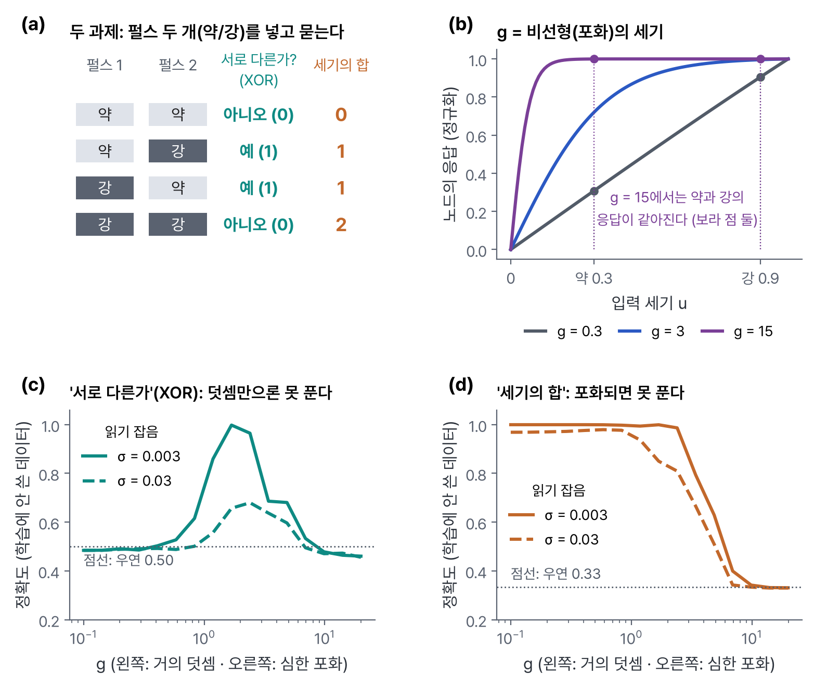
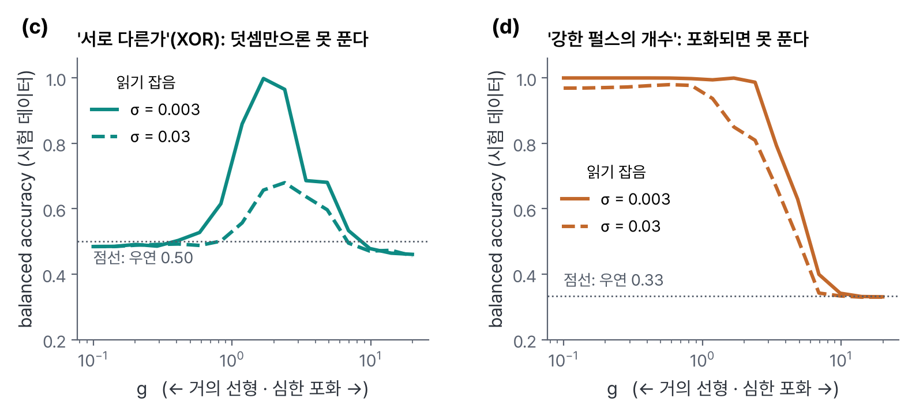
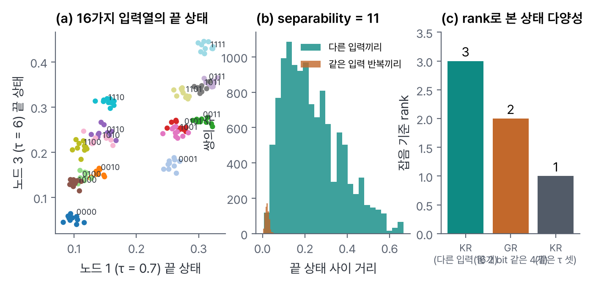
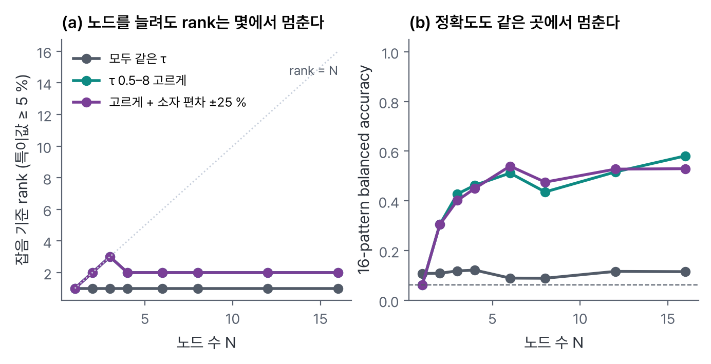
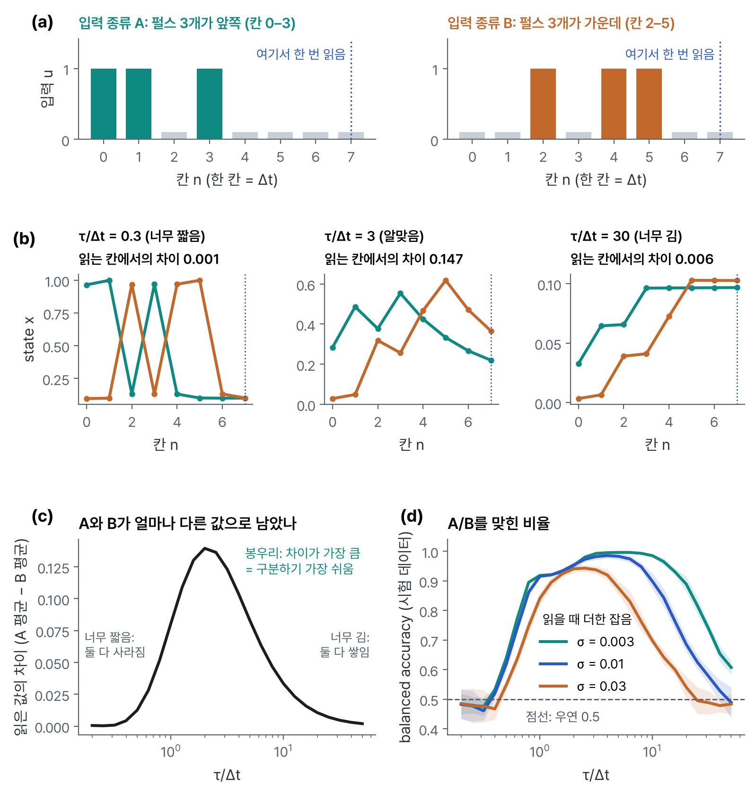
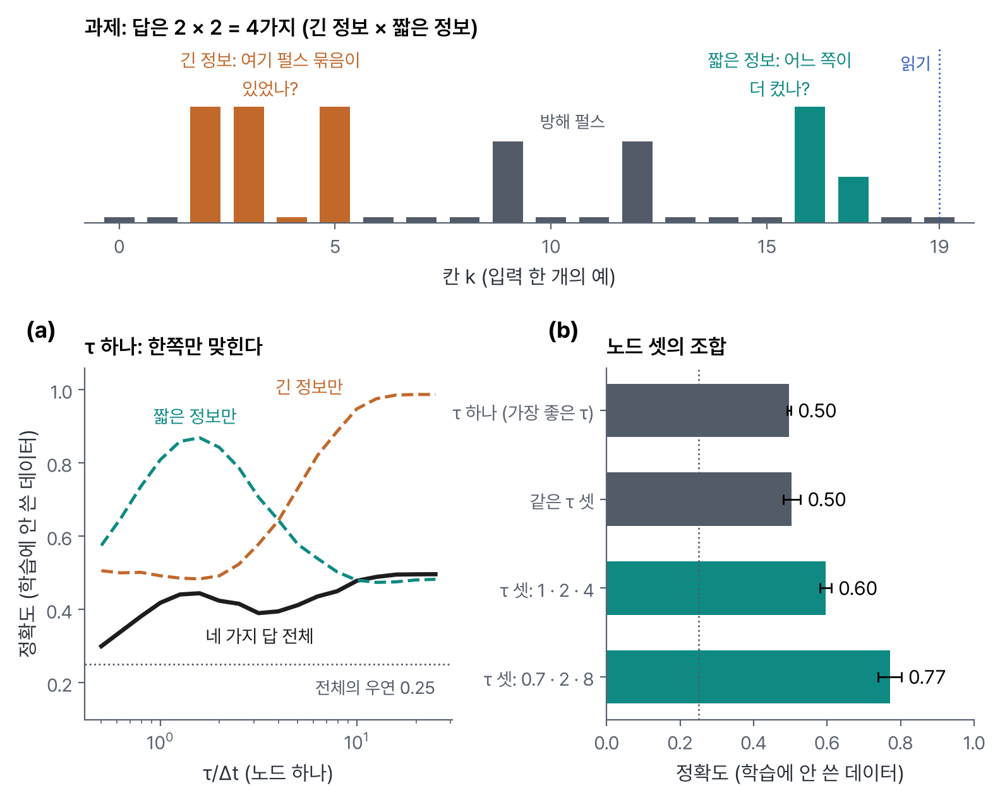

연구 로드맵
박사 연구 제안서 초안 — 이온성 고분자 소자의 응답 시간을 소재로 설계하고, 그런 소자를 배열해 ’어디서, 어떤 순서로’를 읽을 수 있는가
한 문장으로. 이온성 고분자 소자의 전기 응답에는 조금 전에 들어온 입력의 영향이 한동안 남습니다. 이 연구는 그 응답이 사라지는 시간과 모양을 고분자의 조성·구조로 조절할 수 있는지, 그리고 그렇게 만든 소자를 읽는 방식이 같은 판단을 하는 디지털 방법과 비교해 어떤 조건에서 회로나 에너지를 줄이는지를 시험합니다.
표시: 논문 원문·데이터시트에서 확인한 사실 · 해석 문헌에서 유추한 내 해석 · 가설 내가 검증할 가설 · 미확인 아직 확인하지 못한 것 · 모의 모형으로 계산한 설명용 결과 · 파일럿 첫 실험의 출발 설정(바뀔 수 있음)
한눈에: 이 연구는 무엇을, 왜 하려고 하나
해결하려는 어려움. 몸에 붙이는 센서(피부의 전기 신호를 재는 패치나 밴드)는 신호를 계속 재면서도 자주 충전하지 않고 써야 합니다. 그런데 "박동 간격이 방금 불규칙해졌는가", "손목을 굽힌 뒤 폈는가"처럼 지금 값이 아니라 직전 몇 초의 변화로 정해지는 판단은, 장치가 과거의 정보를 어딘가에 갖고 있어야 내릴 수 있습니다.
지금의 장치는 어떻게 하나. 작은 컴퓨터 칩(MCU)이 신호를 1초에 1,000번 숫자로 바꾸고(이 일을 하는 부품이 ADC), 그 숫자로 과거의 요약값을 계속 고쳐 씁니다. 판단은 잘 됩니다. 그래서 "기억이 필요하다"는 이유만으로 새 소재가 필요하지는 않습니다. 대신 이 방식에는 조건이 하나 붙습니다. 과거를 숫자로 쥐고 있으려면 ADC와 MCU가 신호가 들어오는 내내 깨어 있어야 합니다. MCU를 재우면 그동안 들어온 신호는 그대로 사라집니다.
소자를 쓰면 무엇이 달라지나. 이온성 고분자에 전압이 걸리면 이온이 이동하고, 전압이 사라진 뒤에도 한동안 원래 분포로 돌아가지 않습니다. 즉 소자 자체가 과거를 물리적으로 쥐고 있습니다. 그러면 ADC와 MCU는 판단할 때만 깨어 소자의 전류를 몇 번 읽으면 됩니다. 판단할 때를 알려면 누군가는 신호를 계속 지켜봐야 하지만, 이 일은 문턱을 넘었는지만 보는 비교기(comparator, 소비 전류 약 75 nA인 부품이 있음)가 맡을 수 있습니다. "MCU가 자는 동안에도 과거를 잃지 않는 센서"가 이 연구가 시험하는 장치의 모습입니다. 이것이 실제로 전체 전력을 줄이는지는 소자를 구동하고 읽는 회로까지 넣고 재야 압니다.
왜 τ를 소재로 조절해야 하나. 소자에 남은 이력이 사라지는 데 걸리는 시간을 τ(타우, 응답 시간)라 부릅니다. τ를 조절해야 하는 이유는 셋입니다.
- τ가 사건 사이의 시간과 맞아야 기억이 쓸모 있습니다. 두 동작이 1초 간격일 때 τ = 10 ms이면 첫 동작을 잊고, τ = 1분이면 그 전의 동작들까지 쌓여 구분이 안 됩니다. τ = 0.5–2초여야 순서가 크기 차이로 남습니다.
- 과제마다 사건 사이의 시간이 다릅니다. 손목 동작은 0.3–2.5초, 박동은 0.6–1.2초, 손가락이 센서 위를 쓸고 지나가는 시간은 0.1–5초입니다. 지금까지의 이온 소자 연구는 대개 소재를 먼저 만들고 τ를 나중에 재서, 그 τ에 맞는 과제를 골랐습니다. 과제가 먼저 정해지면 τ를 거기에 맞출 규칙이 있어야 합니다.
- τ가 다른 소자를 여러 개 쓰려면 τ를 원하는 값에 놓을 수 있어야 합니다. 아래 질문 2의 배열이 그 경우입니다.
소재 연구자로서 시험할 아이디어. 이 응답 시간과 모양을 두께·고정전하·가소제 같은 소재 변수로 정할 수 있다면, 과제에 맞는 소자를 설계할 수 있습니다. 연구는 세 단계로 이어집니다.
① 소재의 물리. 응답 시간은 이온이 얼마나 빨리 움직이는가(kinetics: 확산계수, 이동 거리)와 이온이 어디에 머무르려 하는가(thermodynamics: 고정전하와의 평형, 이온쌍의 결합 세기)로 정해집니다. 이 둘을 조성·구조로 바꿉니다. ② 상관관계 분석. 바꾼 변수와 측정한 응답 시간 사이의 관계를 표로 만듭니다. ③ 응용. 그 응답이 실제 판단 과제에서 쓸모 있는지 시험합니다.
★ 연구 질문: 고분자의 조성과 구조는 소자에서 관측되는 dynamics(시간에 따라 응답이 변하는 방식)를 어떻게 바꾸는가. 그리고 그 변화는 어떤 과제와 장치(system) 조건에서 쓸모가 있는가.
세 가지 질문.
소자의 응답을 읽는 것이, 소자 없이 같은 판단을 하는 방법보다 나은 조건이 있는가.
가장 단순한 비교 대상은 저항과 커패시터로 만든 R–C 회로, 그리고 같은 일을 숫자로 하는 디지털 계산입니다. 같은 입력·같은 읽기 횟수·같은 readout(읽은 값에 가중치를 곱해 더하는 계산)으로 견주어, 차이가 있는지와 그 크기를 먼저 확인합니다.
소자의 응답 시간 τ를 소재 변수로 정하고, τ가 다른 소자를 배열해 공간·시간 정보를 함께 읽을 수 있는가.
이온 소자에서는 보통 빠른 응답과 느린 응답이 함께 나타납니다. 전극 표면에 이온이 모이는 일은 ms 정도로 빠르고, 이온이 고분자 안을 확산해 다시 퍼지는 일은 초 단위로 느립니다. 실제로 이온겔 소자에서 두 시간 상수(약 52 ms와 395 ms)가 함께 보고되었습니다(Zhou 2025) 논문. 이 연구는 먼저 두께만, 고정전하 밀도만, 가소제 양만 바꾼 비교 시료로 τ를 원하는 값에 놓는 규칙을 찾습니다. 이온의 종류나 통로 길이로 τ를 바꾼 연구는 있지만, 고분자 네트워크 변수로 한 것은 찾지 못했습니다.
그다음 소자를 여러 자리에 배열합니다. 배열이 방향을 읽는 원리는 아래 그림의 예 하나로 볼 수 있습니다. 패드 세 개 A, B, C 밑에 소자를 하나씩 두고 손가락이 A에서 C로 지나가면, 먼저 지나간 A의 소자가 가장 많이 줄어든 상태로 남습니다. 읽은 세 값이 작음 → 큼 순서이면 A → C, 그 반대이면 C → A입니다.
τ가 같은 소자로도 방향은 읽힙니다. τ를 다르게 섞는 이유는 빠르기의 범위를 넓히기 위해서입니다. 손이 5초에 걸쳐 천천히 지나가면 τ = 1초인 소자는 앞의 흔적을 잊으므로 τ가 긴 소자가 필요하고, 0.2초 만에 휙 지나가면 τ가 짧은 소자라야 세 값의 차이가 큽니다. 한 소자 안에 응답 시간을 여러 개 넣는 것은 목표로 두지 않습니다.
구동·읽기·전송 회로까지 넣은 장치 전체(system)에서 무엇이 실제로 줄어드는가.
소자를 쓰면 신호를 숫자로 바꾸는 횟수는 줄 수 있지만, 소자를 구동하고 읽는 회로가 새로 듭니다. 아래 그림이 그 사슬입니다.
같은 정확도에서 지연(사건이 끝난 뒤 답이 나오기까지 걸리는 시간)·보내는 양·에너지·부품 수를 센서부터 전송까지 재서 비교합니다.
검증할 가설. 소자의 τ를 사건 사이의 시간에 맞추면 같은 조건의 R–C 회로 하나보다 잘 맞히는 조건이 있고, 그 τ는 고분자의 두께·고정전하·가소제로 재현 가능하게 정해지며, τ가 다른 소자를 배열하면 방향·순서 과제에서 τ가 같은 배열보다 잘 맞힌다. 가설
이 글의 예시에 대해. 본문은 손목 근전도(EMG, electromyogram)의 동작 순서 판정을 예로 설명합니다. 설명을 위한 대표 예시이며, 중심 응용은 첫 3개월의 공개 데이터 실험 뒤에 정합니다. 근전도 자체를 기초부터 정리한 글은 사이트의 근전도(EMG) 탭에 따로 있습니다. 이 요약과 1절을 읽으며 생긴 질문과 답은 1장 질문과 답에 모아 두었습니다.
첫 3개월. PC 모의실험 재현 → 공개 ECG·EMG 데이터로 "디지털 방법의 정확도"와 "과거가 정말 필요한 과제인가" 확인 → 보드로 실제 시간 패턴 기록 → 장비·시료 확인 뒤 기존 소자의 첫 측정.
1. 문제: 과거가 필요한 판단을 작은 센서가 하려면
이 절이 답하는 질문. 어떤 판단에 과거의 정보가 필요하고, 지금의 장치는 그 정보를 어떤 부품으로 어떻게 갖고 있으며, 그 방식에서 줄여 볼 만한 것이 무엇인가. 결론부터 적으면 이렇습니다. 과거의 정보를 갖는 방법은 세 가지이고(원신호 저장, 디지털 요약값 갱신, 아날로그 소자의 dynamics), 앞의 둘은 이미 잘 작동합니다. 앞의 둘은 ADC와 MCU가 늘 깨어 있어야 하고, 셋째는 그렇지 않을 수 있습니다. 이 연구는 셋째 방법이 어떤 조건에서 앞의 둘보다 회로나 에너지를 줄이는지를 묻습니다.
1.1 어떤 판단에 과거가 필요한가
세 가지 생체 전기 신호를 예로 듭니다. 모두 피부에 붙인 전극으로 재는 아주 작은 전압입니다.
- ECG(electrocardiogram, 심전도) — 심장이 뛸 때 생기는 전기 신호
- EMG(electromyogram, 근전도) — 근육이 힘을 줄 때 생기는 전기 신호
- EEG(electroencephalogram, 뇌전도·뇌파) — 뇌의 전기 활동
심장(ECG). 가슴에 붙인 패치가 심전도를 재다가, 박동 사이의 간격이 규칙적이다가 불규칙해지는 구간을 스스로 찾아 기록하고 알립니다. 심방세동 같은 리듬 이상은 병원 밖에서 가끔 나타나므로, 붙이고 다니는 장치가 그 순간을 잡는 것이 목적입니다. 이 연구가 다루는 것은 그 구간을 찾아내는 일을 얼마나 적은 전력과 부품으로 할 수 있는가입니다. 찾아낸 구간이 실제로 병인지 판단하는 진단은 의사의 일이며, 이 연구가 주장하는 범위가 아닙니다.
근육(EMG). 근전도는 실제로 아래 세 장면에서 쓰입니다.
- 근전 의수(myoelectric prosthesis) — 손을 잃은 사람의 남은 팔에 소켓을 끼우고, 소켓 안쪽의 전극이 근전도를 잽니다. 근육에 힘을 주면 그 근전도로 인공 손의 모터를 돌려 손을 쥐고 폅니다. 이미 제품으로 쓰이는 방식입니다.
- 손목 밴드로 기기 조작 — 손목의 근전도만으로 컴퓨터 화면의 커서를 움직이거나 글자를 입력합니다(Kaifosh 2025, Nature) 논문. 이런 연구는 전에도 많았는데 Nature에 실린 이유는 규모와 일반화입니다. 예전의 근전도 조작은 대개 사람마다 처음에 보정(calibration) 기록을 해야 했고 데이터도 수십 명 수준이었습니다. 이 논문은 과제마다 162–6,627명의 기록으로 학습해, 처음 쓰는 사람도 보정 없이 바로 쓰게 했습니다(손글씨 분당 20.9단어). 밴드는 16채널, 1초에 2,000번 재고, 계산은 손목이 아니라 블루투스로 받은 노트북에서 합니다. 손목 안에서 적은 전력으로 처리하는 일은 아직 열려 있다는 뜻입니다.
- 재활 — 뇌졸중 뒤에는 팔을 굽히려 해도 힘이 모자라 팔이 다 굽혀지지 않습니다. 그래도 근육에는 약한 근전도가 나옵니다. 팔에 모터가 달린 보조기(재활 로봇)를 차고, 근전도가 문턱을 넘는 순간 모터가 팔꿈치를 함께 굽혀 줍니다. 환자가 "움직이려 한 순간"과 로봇의 도움이 맞아떨어지게 하는 것이 목적이며, 이렇게 반복하면 운동 회복에 도움이 된다는 임상 연구들이 있습니다.
이 글의 설명용 예는 손목 밴드입니다. 밴드가 "굽힘 다음 폄"과 "폄 다음 굽힘"을 구분하면 서로 다른 명령 두 개를 낼 수 있습니다. 마지막 동작에 맞춰 "굽힘 다음 폄"(손이 펴지며 끝남)을 놓기, "폄 다음 굽힘"(손이 쥐어지며 끝남)을 잡기로 정합니다. 그러면 버튼 없이 손목 동작으로 의수나 기기를 조작합니다. 이 대응은 설명을 위한 설계입니다.
뇌(EEG). 뇌파로는 뇌전증 발작이 시작되는 순간을 찾아 알리거나, 운전자의 졸음, 잠의 단계(수면 단계)를 구분합니다. 모두 몇 초에 걸친 리듬의 변화를 봐야 하는 판단입니다(후보).
세 경우 모두 답이 지금 값 하나로 정해지지 않습니다. 손목 예에서 두 동작이 모두 끝난 순간에는 두 근육이 쉬고 있어, 그 순간의 값만 봐서는 어느 동작이 먼저였는지 알 수 없습니다. 답은 0.3–2.5초 전에 어느 근육이 먼저 움직였는가에 있습니다.
1.2 과거의 정보를 갖는 세 가지 방법
먼저 낱말 다섯 개. 뒤에서 계속 쓰므로 여기서 정합니다.
- ADC(analog-to-digital converter)는 연속으로 변하는 전압을 일정한 간격으로 재서 숫자로 바꾸는 부품입니다.
- MCU(microcontroller unit)는 숫자를 받아 계산하고 판정하는 작은 컴퓨터 칩입니다. 칩 하나 안에 계산하는 부분(CPU), 숫자를 잠시 쌓아 두는 메모리(RAM), 프로그램과 고정된 숫자를 보관하는 메모리(Flash)가 함께 들어 있고, ADC와 무선 통신 부분까지 든 칩이 많습니다.
- 채널(channel)은 신호 하나를 재는 통로입니다. 전극 두 개가 한 쌍이 되어 그 사이의 전압 차이를 잽니다. 손목을 굽히는 근육 위에 한 쌍, 펴는 근육 위에 한 쌍을 붙이면 채널 2개이고, 채널마다 대략 근육 하나를 맡습니다(여러 채널이 함께 쓰는 기준 전극이 하나 더 붙습니다).
- sampling rate는 ADC가 1초에 값을 재는 횟수입니다. 1초에 1,000번이면 1 kHz라고 씁니다.
- state는 과거 입력의 영향을 담고 있는 값입니다. 디지털에서는 계속 고쳐 쓰는 요약값, 소자에서는 소자 안 이온의 분포(읽으면 전류로 나타남)입니다.
장치가 과거의 정보를 갖는 방법을 셋으로 나눕니다. 뒤의 모든 비교가 이 구분 위에서 이루어집니다.
| 방법 | 무엇을 갖고 있나 | 어느 부품이 하나 | 늘 켜져 있는 것 |
|---|---|---|---|
| ① 원신호 저장 | 직전 몇 초의 숫자 전부 (예: 2.5초 × 1초에 1,000개 = 채널당 2,500개) | ADC가 숫자를 만들고, MCU의 RAM에 모두 쌓고, 판정할 때 CPU가 한꺼번에 계산 | 증폭기, ADC, RAM |
| ② 디지털 요약값 갱신 | 숫자 몇 개뿐. 새 숫자가 들어올 때마다 그 몇 개를 고쳐 쓴다 | ADC가 숫자를 만들고, CPU가 숫자가 들어올 때마다 요약값을 고치고, RAM에는 숫자 몇 개 | 증폭기, ADC, CPU(1초에 1,000번 잠깐씩 깸) |
| ③ 아날로그 동역학 | 숫자가 아니라 소자 안의 물리 상태(예: 이온이 쏠려 있는 정도). 입력이 들어오면 저절로 변하고 서서히 돌아간다 | 소자가 이력을 쥐고, 판정할 때만 TIA와 ADC가 몇 번 읽고, CPU가 가중합 | 증폭·윤곽 회로, 비교기 |
①과 ②의 차이를 예로 보면. 손목 근육이 "최근에 얼마나 세게 움직였나"를 알고 싶다고 합시다.
- ①은 2.5초 동안 들어온 숫자 2,500개(채널당)를 RAM에 모두 줄 세워 둡니다. 새 숫자가 오면 가장 오래된 숫자를 버리고 맨 뒤에 붙입니다. 판정할 때 2,500개를 한꺼번에 꺼내 제곱해 평균을 냅니다. 예를 들어 숫자가 2, −1, 3, …이면 4, 1, 9, …를 더해 2,500으로 나눕니다.
- ②는 숫자 하나(요약값 s)만 둡니다. 새 숫자 v가 들어올 때마다 "s를 조금 줄이고, v²를 조금 더한다"를 반복합니다. 예를 들어 s새 = 0.99 × s이전 + 0.01 × v². 지금 s = 0.50이고 새로 들어온 v = 2이면 s새 = 0.495 + 0.04 = 0.535입니다. 오래된 숫자의 영향은 매번 1 %씩 줄어들어 저절로 잊히고, RAM에는 s 하나면 됩니다. 이 s가 요약값이고 디지털의 state입니다.
①과 ② 모두 ADC는 1초에 1,000번 계속 켜져 있습니다. 차이는 RAM에 쌓는 양과 계산하는 때입니다. ①은 숫자 2,500개를 쌓았다가 판정 때 한꺼번에 계산하고, ②는 숫자가 들어올 때마다 조금씩 계산해 숫자 하나만 남깁니다.
①과 ②는 각각 언제 쓰나.
| ① 원신호 저장 | ② 요약값 갱신 | |
|---|---|---|
| 좋은 점 | 판정 뒤에도 원래 파형이 남아 다른 계산을 다시 할 수 있다. 의사가 파형을 직접 보거나, 나중에 더 좋은 모형으로 다시 분석할 수 있다 | RAM이 거의 안 든다. 계산이 숫자가 올 때마다 조금씩이라 판정 순간에 몰리지 않는다 |
| 나쁜 점 | RAM이 많이 들고, 판정 순간에 계산이 몰린다 | 요약값으로 줄이면서 버린 정보는 되살릴 수 없다. 어떤 요약값을 둘지 미리 정해야 한다 |
| 쓰는 곳 | 진료용 심전도 기록(파형을 의사가 봄), 큰 신경망이 원신호 구간을 통째로 받는 경우, 연구용 기록 | 심박수·근육의 힘 세기처럼 요약값 하나로 충분한 판정, 전지가 작은 웨어러블 |
①은 이해하기 가장 쉬워서 아래의 설명에 씁니다. 그러나 실제로 견줄 상대는 ②입니다. ②가 같은 판정을 가장 적은 메모리로 하는 디지털 방법이기 때문입니다.
③은 무엇이 다른가. ③에서는 숫자 대신 소자 안의 물리 상태가 state 역할을 합니다. 신호가 숫자로 바뀌기 전에 소자에 들어가면, 소자는 시계도 계산도 없이 입력에 따라 저절로 변하고 서서히 돌아갑니다. 그래서 ADC와 CPU가 그동안 꺼져 있어도 과거가 남습니다.
판단할 순간은 어떻게 아나. "판단이 필요한 순간에만 읽는다"고 해도, 그 순간을 알려면 신호를 누군가 계속 지켜봐야 합니다. 맞습니다. 다만 지켜보는 일과 숫자로 바꿔 쌓는 일은 다릅니다.
- 지켜보는 일은 비교기(comparator)가 할 수 있습니다. 비교기는 입력 전압이 정해 둔 문턱보다 높은지 낮은지만 알려 주는 부품입니다. 소비 전류가 약 75 nA(전형값)인 제품이 있습니다(TI TLV3691 데이터시트) 논문.
- 손목 예에서는 근전도의 세기(윤곽)가 문턱을 넘으면 "동작 시작", 문턱 아래로 0.3초 넘게 머무르면 "동작 끝"으로 봅니다. "끝"이 나오면 비교기가 MCU를 깨우고, MCU가 소자를 2–10번 읽어 판정합니다.
그러니 ③에서도 지켜보기는 늘 하지만, 늘 켜져 있는 것이 ADC·CPU에서 비교기로 바뀝니다. 디지털에서도 비교기로 MCU를 깨울 수는 있습니다. 그러나 그러면 MCU가 깨기 전, 즉 첫 동작의 신호는 숫자로 남지 않습니다. 소자는 그 부분을 이온의 분포로 쥐고 있습니다. 이것이 ③이 ②보다 나을 수 있는 지점이고, 정말 나은지는 측정으로 확인할 문제입니다. 가설
1.3 지금의 장치는 어떻게 하나: 다섯 단계와 부품
가장 단순한 구성(①)으로 단계를 따라갑니다. 단계마다 어느 부품이 그 일을 하는지 함께 적습니다.
- 전극. 피부의 전극이 근육이나 심장의 전기 활동을 전압으로 잽니다. 크기는 수십 µV에서 수 mV입니다(1 µV = 백만분의 1 V).
- 증폭과 ADC. 증폭기는 작은 전압을 같은 모양 그대로 크게 키우는 회로입니다. 근전도 1 mV를 약 1,000배 키워 1 V 정도로 만든 뒤 ADC가 1초에 1,000번 숫자로 바꿉니다. 근전도는 µV 단위라 잡음이 적은 증폭기가 필요해서, 증폭기·필터·ADC를 한 칩에 넣은 생체 신호 전용 칩을 많이 씁니다. 이런 칩을 AFE(analog front-end)라 부릅니다(예: TI ADS1292, 2채널).
- 특징 계산과 분류. MCU가 숫자들에서 특징(feature)을 계산합니다. 특징이란 신호의 한 구간을 숫자 하나로 요약한 값입니다. 흔히 쓰는 것이 RMS(root mean square)로, 한 구간의 숫자들을 제곱해 평균 내고 제곱근을 취한 값이며 그 구간에서 근육이 얼마나 세게 힘을 썼는지를 나타냅니다. 아래 그림처럼 2.5초를 0.25초씩 열 구간으로 나누고 채널이 둘(굽히는 근육, 펴는 근육)이면 RMS 20개가 나옵니다. 이 20개에 가중치를 곱해 더한 값(가중합)의 부호로 답을 정하는 것이 분류입니다.
- 전송. 결과를 무선으로 보냅니다. 몸에 붙이는 장치는 대개 BLE(Bluetooth Low Energy, 저전력 블루투스)로 몇 m 떨어진 스마트폰에 보냅니다. 기록을 병원 서버에 올려야 하면 스마트폰이 다시 인터넷으로 보내는데, 이때 Wi-Fi(집·건물의 공유기를 통한 무선 인터넷)나 LTE(휴대폰 통신사의 기지국을 통한 무선 인터넷, 데이터를 쓸 때의 그 LTE)를 씁니다. 받는 쪽의 인터넷 너머 서버를 클라우드라 부릅니다. 패치가 직접 Wi-Fi나 LTE를 쓰는 경우는 드문데, BLE보다 전력이 훨씬 많이 들기 때문입니다.
- 행동. 결과가 기록·알림 또는 기기 명령이 됩니다. 의수라면 MCU가 "잡기"라고 판정한 뒤 모터 드라이버(작은 신호를 받아 모터에 큰 전류를 흘려 주는 칩)에 신호를 보내고, 모터가 손가락을 오므립니다. 프로그램으로는 "점수가 0보다 작으면 모터를 쥐는 방향으로 0.5초 돌린다" 같은 몇 줄입니다.
두 채널을 어떻게 구분하나. 두 파형은 모양이 비슷합니다. 구분은 모양이 아니라 어느 채널이 언제 셌는가로 합니다. 채널 1의 RMS 막대가 앞쪽 구간에, 채널 2의 막대가 뒤쪽 구간에 높으면 "굽힘 다음 폄"입니다. 가중치도 이 차이를 보도록 정해집니다. 예를 들어 채널 1의 앞쪽 구간과 채널 2의 뒤쪽 구간에는 + 가중치, 반대 자리에는 − 가중치가 붙습니다.
가중치는 어디서 오나. 가중치는 PC에서 미리 정해 MCU의 Flash에 넣어 둡니다. 순서는 이렇습니다.
- 사용자가 밴드를 차고 "굽힘 다음 폄"을 30번, "폄 다음 굽힘"을 30번 합니다. 무엇을 했는지 알고 있으므로 정답이 붙은 기록이 됩니다.
- PC에서 이 기록의 RMS 20개를 구하고, 점수의 부호가 정답과 가장 잘 맞는 가중치 20개를 계산합니다. 이것이 학습입니다(대표적인 방법이 LDA, 선형 판별 분석).
- 가중치 20개를 MCU의 Flash에 한 번 써 넣습니다. 그 뒤로 MCU는 곱하고 더하기만 합니다.
분류기는 따로 있는 부품이 아니라 MCU 안의 짧은 프로그램입니다. "RMS 20개에 가중치 20개를 곱해 더하고, 0보다 큰지 본다"가 전부입니다.
구간은 실제로 얼마나 촘촘히 나누나. 위 그림은 설명을 위해 0.25초로 열 칸을 나눴습니다. 실제 근전도 분류에서는 한 구간을 보통 100–300 ms로 잡고, 구간을 겹치게 옮겨 가며 계산합니다. 예를 들어 200 ms 구간을 50 ms씩 밀면 1초에 특징이 20번 나옵니다. "중요한 구간과 아닌 구간"을 미리 알 수는 없으므로 구간은 같은 길이로 고르게 나누고, 근육이 쉬는 구간은 RMS가 작게 나와 점수에 거의 기여하지 않습니다.
더 복잡한 동작은 어떻게 하나. 손가락 하나하나처럼 동작이 많아지면 세 가지가 늘어납니다.
- 채널 수. 손목 둘레에 전극을 8–16채널 붙여 더 많은 근육을 따로 봅니다.
- 답의 수. 답이 둘이면 점수 하나의 부호로 정하지만, 답이 열 개면 답마다 점수를 하나씩 계산해 가장 큰 것을 고릅니다. 가중치도 답의 수만큼 늘어납니다.
- 계산의 종류. 동작끼리 패턴이 겹치면 "곱해서 더하기" 한 번(직선 하나로 가르기)으로는 가를 수 없어서, 그 계산을 여러 층으로 쌓은 신경망을 씁니다. 신경망도 가중치를 PC에서 학습해 넣어 두는 것은 같지만, 가중치가 수천–수백만 개라 MCU에서 계산이 무거워집니다.
근전도 분류에서 RMS 같은 구간별 세기와 단순한 분류기는 오래 써 온 기본 방법입니다. 동작 두세 개를 가르는 데는 이것으로 충분한 경우가 많습니다.
1.4 ADC가 하는 일과 숫자의 양
- Hz는 1초에 몇 번인지를 뜻합니다. EMG에는 1초에 20번에서 450번 오르내리는 성분이 섞여 있습니다(20–450 Hz).
- sampling rate는 1초에 값을 재는 횟수입니다. 1초에 450번 오르내리는 파도를 생각해 봅시다. 한 번 오르내리는 동안 꼭대기와 바닥을 적어도 한 번씩은 재야 "오르내렸다"는 것을 알 수 있습니다. 만약 1초에 450번만 재면 매번 파도의 같은 위치(예: 늘 꼭대기)만 찍혀 평평한 선처럼 보일 수 있습니다. 그래서 가장 빠른 성분의 두 배보다 자주 재야 합니다(표본화 정리). EMG는 흔히 1초에 1,000번(1 kHz) 안팎으로 잽니다. 심전도는 수백 Hz로 충분합니다. 이 값들은 예시이고 장치마다 다릅니다.
- bit 수는 한 번 잰 값을 몇 단계로 적는지를 뜻합니다. 12 bit는 212 = 4,096단계 중 하나로 적습니다.
- bit rate는 1초에 생기는 bit의 수입니다. sampling rate와 다릅니다. 채널 2개 × 1,000회/초 × 12 bit = 24,000 bit/초이고, 2.5초를 모두 저장하면 60,000 bit입니다.
- 패킷(packet)은 무선으로 보낼 때 데이터를 나눠 담는 묶음입니다. 우편물을 상자에 담아 주소를 붙이듯, 묶음마다 받는 곳의 주소와 오류 검사용 숫자 같은 머리말(header)이 붙습니다. 그래서 실제로 보내는 양은 데이터보다 조금 많아집니다.
이 숫자가 모두 낭비라는 뜻은 아닙니다. 판단에 필요한 관측은 해야 합니다. 물어야 할 것은 이 관측과 저장 중 어느 부분이 판단에 꼭 필요하고 어느 부분을 다른 방식으로 대신할 수 있는가입니다. 요약값만 갱신하는 디지털 구성(②)에서는 저장이 숫자 몇 개로 줄지만, ADC가 신호를 재는 횟수는 그대로입니다.
1.5 무엇을 줄이려는가: 작은 장치의 제약과 비용
먼저 단위 둘. 에너지(J, 줄)는 일을 한 총량이고, 전력(W, 와트)은 1초에 쓰는 에너지입니다(1 W = 1 J/s). 전지의 에너지는 전압 × 전류 × 시간으로 셉니다.
장치가 작아지면 세 가지 제약이 강해집니다.
- 전지. 손목 밴드나 패치에는 동전 모양의 코인셀을 많이 씁니다. 코인셀도 크기에 따라 여러 규격이 있는데, 흔한 CR2032(지름 20 mm, 두께 3.2 mm)는 3 V, 약 225 mAh입니다. 225 mAh는 0.225 A를 1시간(3,600초) 흘릴 수 있다는 뜻이므로 에너지는 3 V × 0.225 A × 3,600 s ≈ 2,430 J입니다. 장치가 평균 3 mW(1초에 0.003 J)를 쓰면 2,430 ÷ 0.003 = 810,000초, 약 9일입니다. 1 mW면 약 28일, 0.1 mW면 약 9개월입니다. 그래서 mW 단위의 차이가 사용 일수의 차이가 됩니다. (큰 전류를 순간적으로 뽑으면 실제로 쓸 수 있는 에너지는 이보다 줄어듭니다.)
- 크기. 장치가 작을수록 전지와 부품을 놓을 자리가 줄어듭니다.
- 지연. 작은 장치는 계산 능력이 작아 큰 계산을 빨리 못 합니다. 그렇다고 계산을 폰이나 클라우드로 보내면 무선으로 보내고 받는 시간이 더해집니다. 신호를 보고 곧바로 반응해야 하는 장치(의수, 재활 로봇)에서는 답이 늦으면 쓸모가 없으므로, 작은 장치 안에서 빨리 끝낼 수 있는 계산이어야 합니다.
몸속 장치는 전지를 어떻게 하나. 몸속에 넣는 장치는 전지를 바꾸려면 수술해야 하므로 훨씬 적은 전력으로 오래 갑니다. 심박조율기는 리튬-요오드 전지로 약 10년(Mallela 2004) 논문, 피부 밑에 넣는 심전도 기록기(Medtronic LINQ II)는 약 4.5년(제조사 자료) 논문을 갑니다. 인공와우처럼 바깥에서 무선으로 전력을 받는 장치도 있습니다. 이 연구의 첫 대상은 몸 밖의 웨어러블이지만, 몸속으로 갈수록 전력의 몫이 더 중요해집니다.
칩은 이미 충분히 작지 않은가. 맞습니다. MCU와 ADC는 이미 손톱보다 작고, 이온 소자를 그보다 작게 만드는 것은 지금으로서는 오히려 어렵습니다. 그래서 이 연구는 "소자가 칩보다 작다"고 주장하지 않습니다. 작은 장치에서 부피를 가장 많이 차지하는 것은 보통 전지이므로, 줄일 수 있는 것은 평균 전력(→ 더 작은 전지)과, 피부에 닿는 부분을 부드러운 소재로 만들 가능성입니다. 둘 다 측정으로 확인해야 하는 가설입니다.
이온 소자라서 생길 수 있는 장점. 전력만으로는 약할 수 있으므로, 이온 소자 쪽의 장점 후보를 나눠 적습니다. 센서의 장점과 RC(소자로 과거를 쥐는 계산)의 장점을 구분합니다.
| 장점 후보 | 누구의 장점인가 | 판단 |
|---|---|---|
| 부드럽고 얇아 피부에 잘 붙는다. 몸과 같은 이온으로 신호를 주고받는다 | 주로 센서의 장점 | 센서 층과 계산 층을 같은 부드러운 소재로 만들 수 있다면 RC에도 이어진다 가설 |
| 초 단위 τ를 작은 면적에서 만든다. 실리콘 회로로 τ = 1초를 만들려면 예를 들어 1 MΩ × 1 µF가 필요하다. 1 µF 커패시터는 칩 위에 못 넣고 따로 붙이는 부품이 된다. 이온 소자는 전극 표면에 이온이 모여 cm²당 수 µF의 용량을 낸다 | RC의 장점 | 칩 밖의 커다란 부품 없이 초 단위 기억을 만들 수 있다 해석 |
| τ를 화학(두께·고정전하·가소제)으로 ms에서 분까지 바꾼다 | RC의 장점 | 한 소재 체계에서 τ가 다른 소자를 여러 개 만들 수 있다. 이 연구의 질문 2 가설 |
| 1 V 이하의 낮은 전압으로 동작한다 | 둘 다 | 전지 전압을 높이는 회로가 필요 없을 수 있다 해석 |
전력은 어디에 쓰이나. 손목 밴드 하나를 가정하고(채널 2개, 1 kHz, 12 bit, 동작 쌍마다 판정 한 번), 부분마다 평균 전력(µW)으로 맞춰 적으면 이렇습니다. 모든 값을 같은 단위(µW)로 놓아야 어디가 큰지 비교할 수 있습니다. 칩을 바꾸면 값이 열 배 이상 달라지므로, 크기의 순서를 보는 표입니다.
| 부분 | 평균 전력 (어림) | 근거 | ②에서 | ③에서 |
|---|---|---|---|---|
| AFE (증폭기 + ADC) | 약 670 µW | 생체 신호 칩 ADS1292: 채널당 335 µW (데이터시트) 논문 | 늘 켜짐 | ADC 부분을 끄고 증폭·윤곽만 켬. 남는 몫은 측정할 값 |
| MCU의 계산 | 수십–수백 µW | 깨어 있을 때 약 10 mW(nRF52840, 3 V에서 52 µA/MHz) × 깨어 있는 시간의 비율. 1초에 1,000번 깨면 커진다. 한 EMG 신경망 구현에서 MCU 약 0.8 mW, 장치 전체 약 2.9 mW (Mongardi 2019) 논문 | 1초에 1,000번 깸 | 판정 때만 깸 |
| 무선 (결과만 보낼 때) | 수–수십 µW | BLE 알림 1회 약 42 µJ. 1분에 10번 보내면 42 µJ × 10 ÷ 60 s ≈ 7 µW 해석 | 같음 | 같음 |
| 무선 (원신호를 계속 보낼 때) | 수백 µW–1 mW | 송신 중 약 19 mW(6.4 mA × 3 V) × 보내는 시간의 비율 약 3 % 해석 | 쓰지 않음 | 쓰지 않음 |
| 비교기 | 약 0.2 µW | 75 nA × 3 V (TLV3691 데이터시트) 논문 | 없음 | 늘 켜짐 |
| TIA (소자 읽기) | 켜 있을 때 약 3 mW, 평균 수 µW | 정지 전류 0.9–1.3 mA (ADA4530-1, LMP7721 데이터시트) 논문. 판정 때 10 ms씩만 켜면 평균은 수백 분의 일 해석 | 없음 | 판정 때만 |
| 대기 | 3–9 µW | 칩의 잠자는 전류 1–3 µA × 3 V 논문 | 같음 | 같음 |
이 표에서 두 가지를 읽습니다.
- 가장 큰 몫은 신호를 키우고 숫자로 바꾸는 쪽(AFE)과 MCU가 자주 깨는 쪽입니다. 결과만 보내면 무선의 몫은 작습니다.
- 증폭은 소자 방식에서도 남습니다. 그래서 소자 방식이 줄일 수 있는 것은 ADC를 계속 켜는 몫과 MCU가 1초에 1,000번 깨는 몫이고, 대신 윤곽 회로·비교기·TIA가 더해집니다. 이 차이가 이득이 될지는 표의 어림만으로 알 수 없습니다.
이 값을 내가 직접 잴 수 있나, 잴 필요가 있나. 잴 수 있고, 재야 합니다. 개발 보드의 전원선에 전력 측정기(예: Nordic Power Profiler Kit II, 전류를 µA 단위로 시간에 따라 기록)를 달면 판정 한 번 동안 흐른 전류를 그대로 볼 수 있습니다. 재야 하는 이유는 위의 표가 부품 데이터시트를 이어 붙인 어림이기 때문입니다. 어느 칩을 쓰느냐에 따라 절댓값은 크게 달라지므로, 이 연구가 보고할 것은 같은 보드에서 소자를 넣었을 때와 뺐을 때의 차이와 어느 부분이 바뀌었는가입니다.
이 연구의 가설을 예로 풀면. 먼저 "장치 안에서 판단을 끝낸다"는 말의 뜻입니다. 손목 밴드가 원신호를 폰으로 보내 폰이 판단하면, 밴드는 1초에 24,000 bit(3,000 byte)를 계속 보내야 합니다. 밴드 안의 MCU가 RMS 20개와 가중합으로 "잡기"까지 정하고 그 결과 1 byte만 보내면, 동작 쌍마다 1 byte로 끝납니다. 이렇게 장치 안에서 판단을 끝내고 결과만 보내는 방식은 전송을 크게 줄이는 표준적인 해결책입니다. 그 대신 판단에 필요한 ADC와 계산이 장치 안에 들어옵니다. 손목 밴드로 보면 이렇습니다.
- 디지털 방식: 근전도 → 증폭 → ADC가 2.5초 동안 채널당 2,500번 숫자를 만듦 → MCU가 RMS 20개 계산 → 가중합 → 부호로 "잡기"/"놓기".
- 소자 방식(가설): 근전도 → 증폭 → 세기의 윤곽으로 다듬어 이온 소자에 직접 넣음 → 소자 안에 이력이 남음 → 비교기가 "동작 끝"을 알리면 소자의 전류를 2–10번만 읽음(ADC 2–10번) → 가중합 → 부호로 "잡기"/"놓기".
"세기의 윤곽으로 다듬어 소자에 넣는다"는 구체적으로 이렇습니다. 근전도는 +와 −로 빠르게 떨리는 신호라 그대로 넣으면 소자 안에서 효과가 서로 지워집니다. 그래서 세 단계를 거칩니다. ① 정류(rectification): 음수 부분을 양수로 뒤집어 모두 + 쪽으로 만듭니다. ② 평활(smoothing): 빠른 떨림을 걸러 "지금 얼마나 센가"를 나타내는 부드러운 곡선(envelope, 윤곽)만 남깁니다. ③ 구동 범위로 맞추기: 윤곽이 0–1 V 범위가 되게 크기를 맞춰 소자에 걸거나, 윤곽이 문턱을 넘는 동안 일정한 크기의 전압 펄스를 걸어 줍니다. 세 단계 모두 숫자 계산 없이 아날로그 회로(다이오드, 저항, 커패시터, 증폭기)로 할 수 있습니다. 단계별 그림은 4절 첫머리에 있습니다.
숫자로 바뀌기 전에 신호가 소자에 들어가야 ADC가 "계속 재는 일"과 RMS 계산의 일부를 소자가 대신할 수 있습니다. 대신 신호를 다듬는 회로, 소자를 구동·읽는 회로가 새로 들기 때문에 전체가 줄어드는지는 재 보아야 압니다. 재는 방법은 같은 판단을 하는 두 장치를 만들어 전원선에 전력 측정기를 달고, 판정 한 번에 쓴 에너지(전류 × 전압 × 시간)를 비교하는 것입니다.
소자 방식이 더 빨리 판단할 수 있나. 이 예에서는 아닙니다. 두 방식 모두 둘째 동작이 끝날 때까지 기다려야 답을 낼 수 있고, 이 기다림(0.3–2.5초)이 판정 시간의 대부분입니다. 그 뒤의 계산은 디지털에서도 RMS 20개와 가중합이라 1 ms도 안 걸립니다. 그래서 소자가 "더 빨리 판단한다"고 주장하지 않습니다. 속도에서 차이가 날 수 있는 경우는 계산이 아주 무거워 작은 MCU에서 수백 ms가 걸리는 경우(큰 신경망)인데, 이 연구의 과제는 그런 경우가 아닙니다. 가설
후보별로 먼저 정해야 할 제약. 목표 장치가 아직 정해지지 않았으므로, 후보마다 아래 값을 문헌에서 찾거나 첫 3개월에 정합니다.
| 정할 것 | 손목 EMG (동작 순서) | 가슴 ECG (간격 패턴) |
|---|---|---|
| 필요한 정확도·오경보 | 정할 값. 동작마다 틀렸을 때의 피해가 다르다: '놓기'를 '잡기'로 잘못 읽으면 컵을 쥔 채로 있지만, '잡기'를 '놓기'로 잘못 읽으면 컵을 떨어뜨린다. 그래서 동작별로 허용치를 따로 정한다 | 정할 값. 놓친 비율과 잘못 울린 비율을 따로 정한다 |
| 답에 필요한 과거의 길이 | 0.3–2.5 s (설명용 가정, 공개 데이터로 확인) | 심장이 2–5번 뛰는 동안, 약 1–5 s (문헌 범위) |
| 답을 내는 주기 | 동작 쌍마다 한 번 (가정) | 박동마다 또는 몇 초마다 (정할 값) |
| 허용되는 지연 (사건이 끝난 뒤 답이 나오기까지) | 실시간 의수 제어는 100–125 ms가 알맞다는 보고가 있다. 순서 명령에 대한 값은 정할 값 | 알림 용도는 초 단위 (가정) |
| 전력 예산 | 정할 값 (전지와 목표 사용 일수에서 거꾸로 계산) | 정할 값 |
| 원신호를 남겨야 하나 | 아니오 (가정) | 진료에 파형이 필요하면 예. 그러면 저장을 줄이는 이점이 작다 |
1.6 응용 후보와 선택 방법
신호의 이름만으로 소자가 쓸모 있다고 말할 수 없습니다. 후보마다 판단의 내용, 필요한 과거의 길이, 소자가 기여할 수 있는 지점, 선택을 위해 먼저 할 실험을 적습니다. 해석
| 손목 EMG | 가슴 ECG | 두피 EEG | 땀 lactate | |
|---|---|---|---|---|
| 알아맞힐 것 | 두 동작의 순서 | 박동 간격이 불규칙해진 구간 | 발작 시작, 졸음, 수면 단계 | 농도가 오르는 추세 |
| 필요한 과거 | 0.3–2.5 s | 짧게는 박동 2–5개(1–5 s). 심방세동 판정은 박동 간격 수십 개(15–60 s)의 흩어진 정도 | 수 초–수십 초 | 5–20 분 |
| 신호 | 피부에서 보통 수십 µV–수 mV, 20–450 Hz | 0.1–3 mV, 0.5–40 Hz | 수 µV, 잡음에 민감 | 전기화학 센서의 nA–µA 전류, 느리게 변함 |
| 소자가 기여할 가능성 | 있다: 필요한 과거(초)가 소자의 느린 응답 시간과 겹칠 수 있다 | 있다: 박동마다 펄스 하나를 소자에 넣으면, 소자에 남은 값이 최근 박동 간격을 반영한다 | 불분명: 신호가 작아 증폭·잡음 제거가 더 큰 문제 | 낮다: 분 단위 변화는 소자가 저절로 변하는 것(drift)과 구분하기 어렵다 |
| 공개 데이터 | PutEMG, Ninapro | MIT-BIH | 있음 | 드묾 |
| 현재 자리 | 설명용 예시, 후보 | 후보, 비교 과제 | 보류 | 조건부 확장 |
ECG 줄을 풀면. 표의 두 칸을 예로 풉니다.
- "15–60 s의 통계". 심방세동에서는 박동 간격이 들쭉날쭉해집니다. 박동 하나의 간격만 봐서는 우연인지 알 수 없으므로, 보통 15–60초 동안 박동 간격 20–60개를 모아 얼마나 흩어져 있는지(예: 간격들의 표준편차를 평균으로 나눈 값)를 계산해 판정합니다. 이것이 "15–60 s의 통계"입니다.
- "박동마다 펄스 하나". 심전도에서 가장 뾰족한 봉우리(R 봉우리)는 문턱을 넘는지 보는 간단한 회로로 찾을 수 있습니다. 봉우리마다 같은 크기의 전압 펄스를 하나씩 소자에 넣으면, 박동이 빠르게 이어질 때는 앞 펄스의 흔적이 덜 사라진 채로 다음 펄스가 쌓여 소자 값이 커지고, 간격이 길면 작아집니다. 간격이 0.8, 0.8, 0.8초로 고르다가 0.5, 1.1, 0.6초로 흩어지면 소자 값도 출렁입니다. 박동을 찾는 일은 간단한 회로가 하고, 간격이 어떻게 변해 왔는가를 쥐는 일을 소자가 맡는다는 뜻입니다.
"소자가 기여할 가능성" 줄을 풀면. 소자는 응답이 사라지는 시간이 정해져 있습니다(예: 초 단위). 과제가 기억해야 하는 시간이 그 범위와 겹쳐야 소자에 남은 이력이 답에 쓰입니다. EMG·ECG는 초 단위라 겹칠 수 있고, lactate는 분 단위라 겹치기 어렵습니다.
drift는 입력이 없어도 시간이 지나며 소자의 읽은 값이 저절로 변하는 것입니다. 이온 소자에서 실제로 일어날 수 있는 예는 이렇습니다.
- 물이 빠지거나 들어옴. 하이드로겔은 공기 중에서 물이 증발하면 이온이 덜 움직여 같은 입력에도 전류가 줄어듭니다. 이온겔도 공기 중의 습기를 빨아들이면 전류가 커집니다.
- 온도. 이온이 움직이는 빠르기는 온도에 민감해서, 피부 온도가 몇 °C만 바뀌어도 읽은 값이 달라질 수 있습니다.
- 오래 걸린 전압의 흔적. 같은 방향의 전압이 오래 걸리면 이온이 한쪽에 쌓이거나 전극 표면에서 반응이 조금씩 일어나, 기준이 되는 값 자체가 천천히 옮겨 갑니다.
분 단위로 기억해야 하는 과제에서는 "기억 때문에 값이 바뀐 것"과 "소자가 저절로 변한 것"을 가를 수 없습니다. 초 단위 과제에서는 drift가 판정 한 번 동안 거의 일어나지 않으므로 덜 문제가 됩니다.
후보를 바꾸면 과제의 이름만 바뀌는 것이 아닙니다. 정답의 뜻, 신호를 다듬는 방법, 필요한 관찰 시간, 평가하는 지표가 모두 달라지므로, 후보마다 위의 제약 표를 다시 채웁니다. 선택은 공개 데이터 실험 뒤에 합니다.
신호를 보고 곧바로 자극을 주는 몸속 장치(폐루프, closed loop)에서는 전지를 바꿀 수 없고 지연이 더 중요해집니다. 이온 소자로 rat의 신경 자극을 폐루프로 구현한 보고가 있습니다(Pei 2026) 논문. 이 연구에서 몸속 응용은 피부 위 신호에서 답할 수 없는 질문이 남을 때의 조건부 확장입니다.
| 동작이 끝난 뒤 순서 판정 (이 글의 예시) | 동작 중 실시간 의수 제어 (확장) | |
|---|---|---|
| 관찰하는 구간 | 두 동작 전체 0.3–2.5 s | 최근 0.15–0.3 s |
| 답을 내는 주기 | 동작 쌍마다 1회 | 10–50 ms마다 |
| 허용되는 지연 (사건이 끝난 때부터 답이 나올 때까지 기다려 줄 수 있는 시간) | 정할 값 | 100–125 ms. 이보다 늦으면 사용자가 손이 늦게 움직인다고 느낀다 (Farrell & Weir 2007) |
| 소자를 읽는 때 | 두 동작이 끝난 뒤 몇 번 | 계속 |
- EMG. 대역 10–500 Hz(유효 에너지 대부분 20–450 Hz), 분류 창 100–300 ms 논문 arXiv 2002.00461. 의수 제어의 알맞은 지연 100–125 ms 논문 Farrell T. R., Weir R. F., IEEE TNSRE 15(1), 111 (2007), 10.1109/TNSRE.2007.891391. 사건이 있을 때만 계산하는 sEMG 신경망: Cortex-M4F에서 MCU 0.8 mW, 시스템 약 2.9 mW 논문 Mongardi A. et al., IEEE ICECS 2019, ieeexplore 8964944.
- ECG. QRS 3–40 Hz, MIT-BIH 360 Hz, 박동 창 0.5–1.2 s와 간격 통계, 심방세동 15–60 s 창 논문 arXiv 1812.07421, 1810.04121, 2204.03768. 전송 에너지가 장치 안 추론보다 크다는 보고 논문 Sadasivuni S. et al., Sci. Rep. 12, 20022 (2022), 10.1038/s41598-022-23100-4.
- Lactate. 센서 응답 80–90 s 이내, 5분 평균 논문 Xuan X. et al., ACS Sensors 8(6), 2401 (2023), 10.1021/acssensors.3c00708.
- 칩과 회로. nRF52840(Nordic Product Brief v2.3, DC/DC 3 V): 송신 0 dBm 6.40 mA, CPU 52 µA/MHz, 대기 0.97–3.16 µA, BLE 광고 1회 14.02 µC ≈ 42 µJ(Nordic 온라인 전력 계산기) 논문. ADS1292: 채널당 335 µW(TI 데이터시트) 논문. TLV3691 비교기: 정지 전류 75 nA 전형, 25 °C 최대 150 nA(TI 데이터시트 SBOS694A) 논문. 전류를 전압으로 바꾸는 증폭기의 정지 전류 예: LMP7721 1.3 mA, ADA4530-1 0.9 mA 논문 데이터시트. 평균 전력의 비율 계산과 CR2032 2,430 J은 계산값 해석.
- 몸속 장치의 전지. 리튬-요오드 심박조율기 전지 약 10년: Mallela V. S. et al., Indian Pacing Electrophysiol. J. 4(4), 201 (2004) 논문. LINQ II 약 4.5년(기본 설정): Medtronic 2020 FDA 승인 보도 자료 논문.
1.7 시간의 지도
왜 이 그림이 필요한가. 소자의 응답 시간을 얼마로 만들어야 하는지 정하려면, 먼저 "어떤 시간에 맞춰야 하는지"를 알아야 합니다. 그런데 시간은 여러 종류가 섞여 있어서 헷갈리기 쉽습니다. 아래 그림은 세 묶음의 시간을 한 축에 놓은 것입니다. 가로축은 로그 눈금이라 한 칸이 10배입니다(0.1 ms → 1 ms → 10 ms …).
그림의 각 막대는 이렇게 나왔습니다.
- 위 묶음(신호가 한 번 오르내리는 시간). 파도가 한 번 올라갔다 내려와 제자리로 오는 데 걸리는 시간(주기)입니다. EMG가 20–450 Hz이면 1초에 20–450번 오르내리므로 한 번에 1/450 ≈ 2 ms에서 1/20 = 50 ms가 걸립니다. ECG의 파형을 이루는 성분(3–40 Hz)은 한 번에 25–330 ms입니다.
- 가운데 묶음(과제가 기억할 과거). 손목 동작 순서는 두 동작 사이 0.3–2.5 s(설명용 가정), ECG 간격 패턴은 박동 2–5개인 1–5 s, lactate 추세는 5–20분입니다(문헌 범위).
- 위와 가운데의 ECG가 왜 다른가. "25–330 ms"는 박동 하나의 파형 안에서 봉우리가 오르내리는 빠르기이고, "1–5 s"는 박동과 박동 사이의 간격을 몇 개 모은 길이입니다. 박동 간격은 심장이 1분에 60–100번 뛸 때 0.6–1초이므로, 박동 2–5개면 약 1–5초입니다. 25–330 ms에 2–5를 곱한 값이 아닙니다.
- 아래 묶음(소자 안의 과정, 후보). 이 셋은 측정값이 아니라 식으로 어림한 범위와 문헌의 값입니다. 이 막대들은 내 소자에서 확인한 값이 아닙니다.
- 전극 표면 충전(EDL charging, electric double layer): τ = 저항 × 표면 용량. 이온겔 박막에서 두께 2.2 µm일 때 수 µs, 이온겔 트랜지스터에서 약 1 ms의 응답이 보고되었습니다 논문. 그래서 "10 ms 아래"로 그렸습니다.
- 결핍층 확산(ion depletion layer relaxation, 이온이 빠져나간 층이 확산으로 다시 메워지는 과정): τ ≈ ℓ²/D로 어림합니다. D는 이온의 확산계수로, 이미다졸륨 계열 이온 액체에서 이온의 자기확산계수가 약 10−11 m²/s이고 겔이나 고분자 안에 갇히면 더 작아집니다 논문. D = 10−12–10−11 m²/s, 층의 두께 ℓ = 0.3–10 µm로 잡으면 τ ≈ 10 ms–100 s입니다 해석.
- 사슬·이온쌍 재배열(polymer segmental relaxation / ion-pair association–dissociation): 이온겔 소자에서 수십–수백 초의 기억 시간이 보고된 예(Zhou 2025, 19–259 s) 논문를 근거로 "초–분"으로 그렸습니다.
그림 아래의 허용되는 판정 지연은 "사건이 끝난 때부터 답이 나올 때까지 기다려 줄 수 있는 시간"입니다. 의수는 0.3 s 안, 알림은 약 1 s, 땀 지표는 분 단위면 충분합니다. 이것은 소자가 맞춰야 할 시간이 아니라 장치가 지켜야 할 조건입니다.
한 번의 판정을 시간축에 놓으면. 손목 예에서 "굽힘 다음 폄"을 알아맞히는 한 번의 판정에는 다섯 가지 시간이 들어 있습니다.
소자의 τ가 맞춰야 하는 것은 ③ 답에 필요한 과거의 길이(0.3–2.5초)입니다. ①(2–50 ms)이 아닙니다. ③은 어느 방법이든 기다려야 하는 시간이므로, 방법 사이의 차이는 ④(읽고 계산하는 시간)에서만 납니다.
소자가 맞춰야 하는 것은 어느 시간인가. 소자의 응답이 사라지는 시간이 맞춰야 하는 것은 신호의 빠르기가 아니라 task가 필요로 하는 과거의 길이입니다. 손목 예로 따져 봅니다. 두 동작이 1초 간격이라면:
- τ = 10 ms이면 두 번째 동작이 끝날 때 첫 동작의 흔적은 e−100, 사실상 0입니다. 첫 동작을 잊어 순서를 알 수 없습니다.
- τ = 1분이면 두 동작의 흔적이 거의 같은 크기로 남고, 그 전에 했던 동작들까지 쌓여 있습니다. 둘을 가르기 어렵습니다.
- τ = 0.5–2초 정도면 첫 동작은 줄어든 채로, 두 번째 동작은 크게 남아 순서가 크기 차이로 남습니다.
EMG 원신호처럼 수 ms마다 오르내리는 빠른 떨림은 소자가 따라갈 필요가 없습니다. 소자에 넣기 전에 "세기의 윤곽"으로 다듬기 때문입니다. 어느 과정이 실제 소자에서 관측되는지는 5절의 측정으로 확인합니다.
- ECG · EMG · EEG — electrocardiogram(심전도) · electromyogram(근전도) · electroencephalogram(뇌전도, 뇌파).
- ADC — 연속으로 변하는 전압을 일정한 간격으로 재서 숫자로 바꾸는 부품. AFE — 생체 신호를 키우고 거르고 숫자로 바꾸는 칩(증폭기 + 필터 + ADC).
- MCU — 숫자를 받아 계산하고 판정하는 작은 컴퓨터 칩. 안에 CPU(계산), RAM(쌓기), Flash(프로그램·가중치 보관)가 있다.
- 비교기(comparator) — 입력이 문턱보다 높은지 낮은지만 알려 주는 부품. TIA — 아주 작은 전류를 전압으로 바꾸는 증폭기. 모터 드라이버 — 작은 신호를 받아 모터에 큰 전류를 흘려 주는 칩.
- 특징(feature) — 신호의 한 구간을 숫자 하나로 요약한 값. RMS는 그 한 예로, 구간의 숫자들을 제곱해 평균 내고 제곱근을 취한 값.
- sampling rate — 1초에 값을 재는 횟수. bit rate — 1초에 생기는 bit의 수. Hz — 1초에 몇 번. 채널 — 신호 하나를 재는 통로(전극 한 쌍).
- BLE — 저전력 블루투스. 패킷 — 무선으로 보낼 때의 데이터 묶음(머리말 + 데이터).
- state — 과거 입력의 영향을 담고 있는 값. 디지털에서는 갱신하는 요약값, 소자에서는 이온의 분포(읽으면 전류).
- baseline — 소자 없이 같은 입력을 같은 방법으로 판정한 결과. 소자의 효과는 이것과의 차이로만 말한다.
- 지연(latency) — 사건이 끝난 때부터 답이 나올 때까지의 시간. 폐루프(closed loop) — 신호를 보고 곧바로 자극이나 주입을 결정하는 장치.
- drift — 입력이 없어도 시간이 지나며 읽은 값이 저절로 변하는 것.
- EDL charging · ion depletion layer relaxation · polymer segmental relaxation — 전극 표면 충전 · 결핍층 확산 · 사슬(이온쌍) 재배열.
2. 제안하는 방법: 입력 이력을 소자의 state에 남기고 읽는다
이 절이 답하는 질문. 소자에 입력 이력이 남는다는 것이 실제로 무슨 뜻이고, 그 값에서 어떻게 답을 얻는가. 순서는 이렇습니다. 가장 단순한 예인 R–C 회로에서 원리를 보고, 이온 소자에서 일어날 수 있는 일을 본 뒤, 숫자 예 하나를 입력부터 답까지 따라갑니다.
이 방식을 reservoir computing(RC)이라 부릅니다. 흐름은 한 줄입니다.
입력 → state(reservoir가 만든다, 고정) → readout(가중치 몇 개만 데이터로 정한다) → 답
입력을 받아 state를 만드는 부분(reservoir)은 고정해 두고, state를 읽어 답으로 바꾸는 작은 계산(readout)만 데이터로 정하는 계산 방법입니다. 약어 둘을 구분합니다. RC는 reservoir computing이고, R–C는 저항(resistor)과 커패시터(capacitor)로 만든 회로입니다.
2.1 가장 단순한 예: R–C 회로
무엇이 들어오고 무엇이 변하나. 저항은 전하가 흐르는 양을 제한하고, 커패시터는 전하를 모아 둡니다. 입력 전압이 걸리면 커패시터의 전압 VC가 서서히 오르고, 입력이 0이 되면 서서히 내려갑니다. VC는 커패시터 양 끝에 전압계를 대어 잽니다(전류를 거의 흘리지 않는 전압계라야 커패시터의 전하를 빼앗지 않습니다).
이 내려가는 빠르기를 정하는 값이 τ = R × C입니다(예: 1 MΩ × 1 µF = 1초). 입력을 끊고 τ가 지나면 VC는 끊는 순간 값의 약 37 %(1/e)가 됩니다. τ는 "다 사라지는 시간"이 아니라 이 비율로 줄어드는 시간의 단위입니다. 3τ가 지나면 약 5 %가 남습니다.
같은 일을 숫자로 하면. VC를 숫자 x로 두고, 일정한 간격 Δt마다 다음 규칙으로 고칩니다. 아래첨자 n은 n번째 칸이라는 뜻입니다.
xn = a × xn−1 + (1 − a) × un, a = e−Δt/τ
xn: 이번 칸의 값 · xn−1: 바로 앞 칸의 값 · un: 이번 칸의 입력
왜 a와 (1 − a)를 곱하나. 물 한 컵으로 생각하면 쉽습니다. 컵에 든 물의 소금 농도가 x입니다. 매 칸마다 컵의 물을 (1 − a)만큼 따라 버리고, 그만큼을 농도 u인 새 물로 채웁니다. 그러면 남은 옛 물이 a만큼, 새 물이 (1 − a)만큼 섞여 새 농도는 a × xn−1 + (1 − a) × un가 됩니다. a는 한 칸 동안 남는 비율, (1 − a)는 새 입력을 받아들이는 비율입니다. τ가 길수록 a가 1에 가까워 옛 값이 많이 남습니다.
예를 들어 a = 0.5, xn−1 = 0.4, un = 1이면 xn = 0.5 × 0.4 + 0.5 × 1 = 0.7입니다. 이것이 1절에서 말한 "디지털 요약값 갱신"의 가장 단순한 형태이고, 메모리는 숫자 x 하나만 씁니다.
이 규칙만으로도 입력의 순서가 남습니다. a = 0.5, 처음 x = 0으로 두 칸짜리 입력을 넣어 봅니다.
| 입력 (첫 칸, 둘째 칸) | 첫 칸 뒤 x | 둘째 칸 뒤 x |
|---|---|---|
| 1, 0 | 0.5 | 0.25 |
| 0, 1 | 0 | 0.5 |
펄스 개수는 같지만 끝 값이 다릅니다. 나중에 들어온 입력일수록 덜 줄어든 채로 남기 때문입니다. 이 규칙은 선형 감쇠(linear decay)입니다. "선형"은 입력을 두 배로 하면 x도 두 배가 된다는 뜻이고, "감쇠"는 매 칸 일정한 비율 a로 줄어든다는 뜻입니다. 따라서 순서를 구별하는 데는 이런 단순한 선형 감쇠만으로도 충분할 수 있고, R–C 회로 하나가 이온 소자의 첫 번째 비교 대상이 됩니다.
2.2 이온 소자에서 일어날 수 있는 일
대상 소자. 양전하가 붙은 고분자 층(P)과 음전하가 붙은 고분자 층(N)을 맞댄 두 층 접합(P|N)입니다. 각 층의 고분자 사슬에는 움직이지 못하는 전하(고정전하)가 붙어 있고, 그 반대 부호의 이온(counterion)이 사슬 사이를 움직입니다. P층에는 움직이는 음이온이, N층에는 움직이는 양이온이 있습니다.
보통의 이온겔과 무엇이 다른가. 이온겔 한 층을 두 전극 사이에 넣기만 해도 두 가지 응답은 생깁니다. 전압을 걸면 전극 표면에 이온이 모이는 빠른 충전(EDL charging)과, 전압을 끊은 뒤 이온이 확산해 다시 고르게 퍼지는 느린 이완입니다. 그런데 이것만으로는 전압을 끊고 이온이 퍼지고 나면 남는 것이 없습니다. 두 층 접합에서만 생기는 일은 이것입니다.
- 그림의 ②처럼 전압을 걸면, 각 층의 움직이는 이온이 반대쪽 전극으로 끌려가며 접합 가까이가 이온이 빈 층(depletion layer)이 됩니다. 고정전하는 움직이지 못하고, 그 자리를 채울 이온이 다른 층에서 넘어오지도 못하기 때문입니다(P층의 음이온은 N층으로 잘 들어가지 못합니다).
- 이온이 비어 있는 동안 접합은 전류가 잘 흐르지 않는 상태(저항이 큰 상태)가 됩니다. 전압을 끊어도 빈 층이 메워지는 데는 확산 시간(초 단위)이 걸립니다.
- 그래서 나중에 작은 읽기 전압을 걸어 전류를 재면, "접합이 얼마나 비어 있는가"가 전류의 크기로 나타납니다. 방금 큰 펄스가 왔으면 전류가 작고, 오래전이면 거의 회복되어 있습니다.
- 반대 방향으로 전압을 걸면 이온이 접합으로 몰려와 오히려 전류가 잘 흐릅니다. 이것이 두 층 접합의 정류(rectification)입니다.
정리하면 두 층 접합은 접합의 이온 양이라는 state를 갖고, 그 state가 전류가 흐르는 정도를 바꾼다는 점에서 보통의 이온겔과 다릅니다. 이것이 이 연구가 두 층 접합을 출발 소재로 두는 물리적인 이유입니다. 이 설명은 후보이며 실제 소자에서 확인할 대상입니다.
이 그림에서 구분해야 할 것이 둘 있습니다.
- 소자 안의 과정(process). 전극 표면 충전, 결핍층 확산, 사슬·이온쌍 재배열처럼 시간 범위가 다른 물리 과정이 한 소자 안에 함께 있을 수 있습니다.
- 우리가 읽는 값. 측정되는 것은 전류 하나입니다. 여러 과정의 기여가 이 전류에 섞여 나옵니다.
과정이 있다고 따로 읽히는 것은 아니다. 사라지는 시간이 하나뿐인 응답을 서로 다른 두 시점에 읽는다고 해 봅시다. 입력이 끝난 순간의 크기를 A라 하면, 시점 t1과 t2에 읽은 값은 A × e−t₁/τ와 A × e−t₂/τ입니다. 둘째 값을 첫째 값으로 나누면 e−(t₂−t₁)/τ로, A와 상관없이 늘 같은 수입니다. 예를 들어 τ = 1초, t1 = 0.5초, t2 = 1.5초이면 둘째 값은 언제나 첫째 값의 0.37배입니다. 입력이 셌든 약했든, 첫째 값만 알면 둘째 값은 계산으로 나옵니다.
그래서 사라지는 시간이 하나뿐인 응답을 두 번 읽으면 두 번째 값은 새로운 정보를 주지 않습니다. 두 시점의 값이 서로 다른 정보를 담으려면 사라지는 시간이 다른 성분이 둘 이상 있고, 그 차이가 측정의 흔들림보다 커야 합니다. 출력 하나에 섞여 나오는 상태들을 얼마나 구분해 읽을 수 있는가는 이 연구가 확인해야 할 중요한 미확정 부분입니다.
용어. 입력열(input sequence)은 시간 순서로 들어온 입력값의 나열입니다(예: 0110은 네 칸 중 둘째·셋째 칸에 펄스). state는 읽는 시점에 소자에서 읽은 값(들)입니다.
node는 state 값 하나를 내는 자리입니다. 판단할 때 숫자를 몇 개 읽는지가 곧 node의 수입니다. 구현은 세 가지가 가능합니다.
| 구현 | 무엇을 하나 | node의 수 |
|---|---|---|
| 한 소자를 여러 시점에 읽기 | 입력이 끝난 뒤 0.1초와 1초에 전류를 한 번씩 잰다 | 읽는 시점의 수 (이 예에서 2) |
| 한 소자에 전극을 여러 개 | 고분자 막 하나에 전극 세 개를 붙이고, 전극 1–2 사이와 2–3 사이의 전류를 따로 잰다. 막의 서로 다른 부분을 보게 된다 | 전극 쌍의 수 |
| 소자 여러 개 | 응답 시간이 다른 소자 두 개에 같은 입력을 넣고 각각 잰다 | 소자의 수 |
어느 구현이든 node가 늘면 읽는 횟수와 가중치의 수도 늘어납니다.
2.3 숫자 예: 입력열에서 답까지
모형의 가정. 이 예는 사라지는 시간이 다른 두 state(τ가 1칸인 것과 4칸인 것)를 각각 따로 읽을 수 있다고 가정한 계산입니다. 응답 시간이 다른 소자 두 개에 같은 입력을 넣고 각각 읽는다고 생각하면 됩니다. 각 state는 2.1의 규칙을 따릅니다(τ = 1칸이면 a ≈ 0.37, τ = 4칸이면 a ≈ 0.78).
읽은 값. 입력이 끝난 다음 칸(n = 5)에서 두 값을 읽습니다. 소수 셋째 자리까지 적으면 입력열 0110은 (x₁, x₂) = (0.117, 0.239), 1001은 (0.244, 0.254)입니다. 단위는 모형의 임의 단위이고, 실제 소자에서는 정한 읽기 전압에서의 전류(예: µA)가 됩니다.
readout. 읽은 값에 가중치를 곱해 더한 것이 점수입니다. 가중치가 (6, −4)라면:
- 0110: 6 × 0.117 − 4 × 0.239 = 0.702 − 0.956 = −0.254 → 0보다 작으므로 답 B
- 1001: 6 × 0.244 − 4 × 0.254 = 1.464 − 1.016 = +0.448 → 0보다 크므로 답 A
두 state를 만드는 부분은 고정해 두고(학습하지 않음), 가중치 6과 −4만 정합니다. 이것이 reservoir computing의 핵심입니다.
가중치는 어떻게 정하나. 이 그림의 6과 −4는 설명을 위해 고른 값입니다. 실제로는 정답을 아는 입력 여러 개(학습 데이터)를 넣어 읽은 값을 모으고, "답이 A인 입력은 점수 +1, B인 입력은 −1"에 가장 가까워지는 가중치를 계산합니다.
가장 작은 예로 계산해 봅니다. 읽는 값이 하나(x)이고 가중치도 하나(w)라고 합시다. 학습 데이터가 둘입니다: 답 A인 입력에서 x = 0.5, 답 B인 입력에서 x = −0.5. 목표 점수는 각각 +1, −1입니다. 가중치 후보마다 "목표와 점수의 차이를 제곱해 더한 값"을 계산하면:
| w | A의 점수 (w × 0.5) | B의 점수 (w × −0.5) | 차이의 제곱합 |
|---|---|---|---|
| 1 | 0.5 | −0.5 | (1 − 0.5)² + (−1 + 0.5)² = 0.50 |
| 2 | 1.0 | −1.0 | 0 + 0 = 0 |
| 3 | 1.5 | −1.5 | 0.25 + 0.25 = 0.50 |
제곱합이 가장 작은 w = 2를 고릅니다. 이것이 최소제곱입니다. 실제로는 후보를 하나씩 넣어 보지 않고, 이 제곱합이 가장 작아지는 가중치를 공식 한 번으로 구합니다. ridge는 이 제곱합에 "가중치가 크면 벌점"(예: λ × w²)을 더한 값을 가장 작게 만드는 방법입니다. 가중치가 너무 크면 읽은 값의 작은 흔들림에도 점수가 크게 변하기 때문입니다.
그렇게 정한 가중치를 학습에 쓰지 않은 데이터(held-out, 시험 데이터)에 적용해 맞힌 비율을 셉니다. 논문 Jaeger H., GMD Report 148 (2001); Maass W., Natschläger T., Markram H., Neural Comput. 14, 2531 (2002).
왜 이 방식이 소재 연구에 맞나. 소자 자체는 학습시키지 않고 가중치 몇 개만 계산합니다. 그래서 소재를 바꿀 때마다 같은 절차(같은 입력을 넣고 → 읽고 → 가중치를 다시 계산하고 → 시험 데이터로 채점)로 새 소재를 평가해, 소재끼리 공정하게 비교할 수 있습니다. 읽는 값이 2개면 가중치도 2개(상수항을 넣으면 3개)입니다.
baseline. 소자의 효과는 소자 없이 같은 문제를 풀었을 때와의 차이로만 말합니다. 같은 입력열에 대해 (a) 입력값 자체를 같은 개수만큼 읽은 경우, (b) R–C 회로(또는 2.1의 디지털 규칙)의 값을 읽은 경우를 같은 readout으로 계산해 비교합니다.
2.4 소프트웨어 RC와 물리 RC
RC는 계산 방법의 이름입니다. state를 컴퓨터 안의 수식으로 만들면 소프트웨어 RC이고, 물리계(여기서는 이온 소자)의 응답으로 만들면 physical RC입니다.
physical RC를 실제로 하면. ① 입력열을 전압 펄스로 바꿔 이온 소자에 겁니다(예: 1이면 1 V 펄스, 0이면 0 V). ② 입력이 끝나면 정한 시점에 작은 읽기 전압을 걸고 소자의 전류를 TIA와 ADC로 잽니다. 이 숫자들이 state입니다. ③ 컴퓨터(나중에는 MCU)가 이 숫자에 가중치를 곱해 더합니다. 즉 state를 만드는 일은 소자가, 가중합만 컴퓨터가 합니다.
| 소프트웨어 RC | physical RC (이 연구가 목표로 하는 적은 수의 소자) | |
|---|---|---|
| state의 수 | 수백 개 이상도 쉽게 | 읽는 시점·전극·소자 수만큼. 늘리면 읽기 비용도 는다 |
| 반복 변동·drift·소자 편차 | 수식에는 없다(입력의 잡음과 양자화 오차는 있다) | 있다. 먼저 재야 한다 |
| state를 얻는 비용 | ADC로 신호를 계속 재고 매번 계산 | 소자 구동 회로 + 읽을 때만 전류 측정 회로와 ADC |
| 기대하는 점 | — | 정확도가 아니라 장치 구성의 차이. 아래 |
"장치 구성의 차이"란. 소프트웨어 RC는 정확도가 높지만, state를 만들려면 신호를 계속 숫자로 바꾸고 매 칸 계산해야 합니다. physical RC는 state가 소자 안에서 저절로 만들어지므로, 신호를 계속 숫자로 바꾸는 일과 매 칸의 계산을 하지 않아도 될 가능성이 있습니다. 그만큼 ADC와 MCU가 쉬는 시간이 늘면 평균 전력이 줄 수 있습니다. 대신 소자를 구동하고 읽는 회로가 들고, 소자의 변동 때문에 정확도는 보통 소프트웨어보다 낮습니다. 이 교환이 이득인지는 측정으로 확인합니다. 논문 Liang X. et al., "Physical reservoir computing with emerging electronics", Nat. Electron. 7, 193 (2024), 10.1038/s41928-024-01133-z.
2.5 장치 구성: 무엇이 어디에 들어가고 왜 필요한가
세 구성을 손목 밴드로 풀어 씁니다.
- 디지털 구성. 근전도 → 증폭기 → ADC(1초에 1,000번) → 메모리 → MCU가 RMS를 계산하고 가중합 → 무선. 가장 성숙하고 정확하지만 ADC와 MCU가 계속 일합니다.
- 소자 구성 ① (아날로그 신호로 소자를 직접 구동). 근전도 → 증폭기 → 정류·평활 회로(세기의 윤곽을 만듦) → 펄스 회로 → 이온 소자 → TIA → ADC(판정할 때 2–10번) → MCU 가중합 → 무선. ADC가 계속 재는 일을 줄일 수 있는 것은 이 구성뿐이고, 이 연구가 결국 목표로 하는 구성입니다. 가장 어렵습니다. 아날로그 회로를 새로 설계해야 하고, 소자의 응답이 실제 신호의 크기 범위에 맞아야 합니다.
- 소자 구성 ② (숫자로 바꾼 뒤 소자를 구동). 근전도 → 증폭기 → ADC(1초에 1,000번) → DAC가 숫자를 다시 전압 펄스로 → 이온 소자 → TIA → ADC 몇 번 → 가중합. ADC가 그대로 남아 전력 이득은 기대할 수 없습니다. 대신 공개 데이터(이미 숫자인 신호)를 소자에 그대로 넣어 볼 수 있어서, 소자의 계산 성능을 먼저 평가하는 실험실 단계에 씁니다.
부품별 위치와 역할.
| 부품 | 어디에 | 무엇을 하나 | 왜 필요한가 | 어느 구성에 |
|---|---|---|---|---|
| 전극·증폭기 | 맨 앞 | 피부의 µV–mV 전압을 잡아 수백–수천 배 키운다 | 신호가 너무 작아 그대로는 다룰 수 없다 | 모두 |
| 필터 | 증폭기 뒤 | 원하는 주파수 대역만 남긴다(예: 20–450 Hz) | 전원선 잡음(60 Hz), 움직임 잡음을 줄인다 | 모두 |
| 정류·평활 회로 | 필터 뒤 | 음수를 양수로 뒤집고(정류) 빠른 떨림을 걸러(평활) 세기의 윤곽을 만든다 | 소자는 초 단위로 반응하므로, 수 ms마다 바뀌는 원신호 대신 세기 변화를 넣어야 한다 | 소자 ① |
| 펄스 회로 | 소자 앞 | 세기의 윤곽을 소자에 걸 전압 펄스로 바꾼다(예: 기준을 넘으면 1 V 펄스) | 소자가 잘 반응하는 전압 범위에 맞춘다 | 소자 ① |
| ADC | 증폭기 뒤(디지털·소자 ②) 또는 TIA 뒤 | 전압을 숫자로 바꾼다 | 컴퓨터가 계산하려면 숫자가 필요하다 | 모두(횟수가 다름) |
| DAC | ADC와 소자 사이 | 숫자를 다시 전압으로 바꾼다 | 숫자 데이터로 소자를 구동할 때 | 소자 ② |
| TIA | 소자 뒤 | 소자의 nA–µA 전류를 전압으로 바꾼다 | ADC는 전압만 잴 수 있다 | 소자 ①② |
| MCU | ADC 뒤 | 가중합을 계산하고 판정한다 | 답을 내는 마지막 계산 | 모두 |
| 무선(BLE) | 맨 뒤 | 결과를 폰으로 보낸다 | 기록·알림 | 모두 |
소자 구성에서 줄어들 수 있는 것과 새로 드는 것은 이렇습니다. 모두 가설이며 목표 3에서 잽니다.
- 줄어들 수 있는 것. 소자 구성 ①이라면, 판정 한 번에 필요한 ADC 변환이 "신호를 계속 재는 횟수"(예: 2.5초에 채널당 2,500회)에서 "소자를 읽는 횟수"(예: 2–10회)로 줄 수 있습니다. RMS 같은 특징 계산도 줄 수 있습니다. 소자 구성 ②에서는 이 절감이 없습니다.
- 새로 드는 것. 정류·평활 회로, 펄스 회로, TIA, 판정 뒤 소자를 처음 상태로 되돌리는 시간이나 조작입니다. 정밀 TIA 부품 가운데는 켜져 있는 동안 약 1 mA를 쓰는 것이 있어(데이터시트의 예), 계속 켜 두면 절감분보다 클 수 있습니다. 판정할 때만 잠깐 켜는 구성이어야 이득이 남을 수 있습니다.
- 지연. 판정에 필요한 사건이 다 일어날 때까지 기다리는 시간은 어느 방법이든 같습니다. 그 뒤의 처리 시간은 디지털도 ms 단위로 짧습니다. 그래서 소자가 더 빠르다고 주장하지 않습니다.
- 소자 쪽에만 있는 문제. 응답이 과제에 필요한 것보다 오래 남으면, 현재 판정과 무관한 이전 입력의 영향이 다음 판정에 섞입니다.
2.6 이 방법이 맞는 과제와 맞지 않는 과제
아래는 이 제안이 목표로 하는 구성(소자 몇 개, 읽는 값 2–10개, 선형 readout, 작은 전력 예산)에 한정한 판단입니다. 더 큰 reservoir나 다른 readout에는 그대로 적용되지 않습니다.
| 따져 볼 것 | 맞는 경우 | 맞지 않거나 이점이 작은 경우 |
|---|---|---|
| 답에 과거가 필요한가 (시계열 데이터인가) | 동작의 순서, 박동 간격의 변화, 넘어짐(가속도가 갑자기 커졌다가 멈추는 변화) | 값이 기준을 넘었는지만 보면 되는 판단(체온 38 °C 초과, 농도의 평균). 비교 회로 하나로 된다 |
| 필요한 과거의 길이가 소자의 응답 시간과 겹치는가 | 초 단위의 순서·패턴 (소자에서 그 범위의 응답이 관측될 때) | 분 단위(기억 때문에 값이 바뀐 것인지 소자가 저절로 변한 것인지 가를 수 없다)나 µs 단위(이온의 이동이 따라가지 못한다) |
| 신호를 덜 재는 것이 가치인가 | 작은 전지로 오래 써야 하는 장치. 예: 며칠 붙이고 다니는 심전도 패치, 하루 종일 차는 의수 제어 밴드 | 원신호를 어차피 모두 저장하거나 보내야 하는 용도. 예: 의사가 파형 전체를 보는 24시간 심전도 검사(Holter) |
| 신호가 아날로그인 채로 소자에 들어가는가 | 센서(전극) 바로 뒤에 소자를 두는 구성. 여기서 센서는 신호를 잡는 전극, 소자는 이력을 남기는 이온 소자로 서로 다른 부품이다 | 이미 숫자로 저장된 데이터를 분석하는 경우. 이 제안의 이점(ADC 절감)이 생기지 않는다. 연구 단계에서는 숫자 데이터를 소자에 재생해 넣어 계산 성능만 평가한다 |
| 읽은 값 몇 개의 가중합으로 답이 갈리는가 | 입력의 차이가 state의 차이로 충분히 나타나는 과제. 예: 굽힘→폄과 폄→굽힘이 서로 다른 전류값으로 남는 경우 | 많은 입력의 복잡한 조합이 필요한 과제. 예: 손가락 다섯 개의 동작을 모두 구분하기. 읽는 값 2–10개로는 부족할 수 있다 |
| 요구되는 성능 | 연구용 분류 성능으로 가능성을 먼저 보는 단계 | 실제 사용의 허용 오차는 용도마다 다르다. 의수 명령은 동작별로 틀렸을 때의 피해가 다르므로 여기서 값을 정하지 않는다 |
2.7 왜 이온·고분자 소재를 시험할 가치가 있나
"사라지는 시간이 하나인 응답"은 R–C 회로로 만들 수 있고, 산화물 memristor(지나간 전류에 따라 저항이 변하는 전자 소자)도 응답 시간을 전압으로 조절한 보고가 있습니다 논문 Lee S.H. 2025. 사라지는 시간이 여러 개인 응답도 R–C 회로를 여러 개 쓰거나 디지털 계산으로 만들 수 있습니다. 그러므로 이온 소재가 유일한 방법이라는 주장은 할 수 없습니다. 물어야 할 것은 소재로 구현했을 때 무엇이 달라지는가입니다. 아래는 그 후보를 달라졌을 때 의미가 큰 순서로 놓은 것입니다. 해석
① "응답 시간 τ를 조성과 구조로 정할 수 있고, τ가 다른 소자를 한 막 위에 배열할 수 있다" 이 연구의 중심 · 미입증 가설
왜 시험하나. 사건 사이의 시간은 사용자가 정하므로, 소자의 τ가 거기에 맞아야 합니다(4절). 그리고 방금의 정보와 아까의 정보를 함께 알아야 하는 과제에서는 τ가 서로 다른 소자 여러 개가 도움이 됩니다.
R–C 회로 여러 개보다 기대되는 점. (1) τ를 부품을 바꾸지 않고 두께와 조성으로 정할 수 있습니다. 초 단위의 τ를 R–C로 만들려면 큰 저항이나 큰 커패시터(예: 1 MΩ × 1 µF)가 필요합니다. (2) τ가 다른 소자들을 한 장의 부드러운 막 위에 나란히 만들 수 있습니다. (3) 소자들이 이온 막을 함께 쓰면 이웃 사이에 영향이 번지는데, 이것을 소재로 조절해 공간 정보를 읽는 데 쓸 수 있을지 모릅니다(7절).
아직 모르는 것. 고분자 변수 하나가 τ만 바꾸는지, 다른 성질도 함께 바꾸는지 모릅니다. 변수 하나가 두 과정을 함께 바꾼 예가 있습니다(Zhou 2025). 이웃 사이의 영향이 도움이 될 만큼 큰지도 모릅니다. 선례에서는 2–5 %로 약했습니다(Gkoupidenis 2017).
② "부드럽고 늘어나며, 몸과 잘 맞는 소재" 유효 · 장치의 피부 쪽 부분에 한정 해석
실리콘 칩은 단단하고(탄성률 약 100 GPa 이상) 피부는 부드럽습니다(대략 kPa–MPa). 단단한 부품을 피부에 붙이면 움직일 때 들뜨고 미끄러져 잡음이 생깁니다. 이온겔·고분자는 피부와 비슷하게 부드럽고 늘어나서 피부를 따라 휘어질 수 있습니다. 전극과 소자를 같은 부드러운 소재로 한 층에 만들 수 있다면, 피부에 닿는 부분 전체를 부드럽게 만들 가능성이 있습니다. 다만 증폭기·MCU·전지는 여전히 단단한 칩이므로 장치 전체가 부드러워지는 것은 아니고, 생체적합성은 소재마다 따로 시험해야 합니다.
③ "낮은 전압으로 동작하고, 젖은 환경과 바로 맞닿는다" 유효 · 확인 필요 해석
전극 표면에 이온이 모이는 층(EDL)은 두께가 nm 수준이라 단위 면적당 용량이 매우 큽니다(약 10 µF/cm²). 그래서 이온으로 동작하는 소자는 보통 1 V 이하의 낮은 전압으로 큰 변화를 만듭니다. 몸에 붙이는 장치에서 낮은 구동 전압은 회로를 단순하게 하고 안전에도 유리합니다. 또 이온 소재는 땀·체액 같은 젖은 환경과 이온으로 직접 맞닿을 수 있습니다(아래 ⑤).
④ "나노 가공 없이 염 농도가 높은 환경에서도 이온을 선택하는 접합" 조건부 확장의 근거 · 계산값, 실측 필요 해석
접합이 한 방향으로 전류를 더 잘 흘리고 결핍층을 만들려면 한쪽 부호의 이온을 주로 통과시키는 층이 필요합니다. 고분자 사슬에 전하가 많이 붙은 겔은 같은 부호의 이온을 밀어내는 성질(Donnan 배제)로 이 역할을 합니다. 고정전하 농도가 1 M 이상이면 체액 수준의 염 농도(약 150 mM)에서도 선택성이 유지된다는 것은 이상적인 계산이며, counterion이 사슬에 붙거나 겔이 부풀면 달라질 수 있습니다. 이 선택성이 곧 생체적합성을 뜻하지는 않으므로, 이 논거는 겔이 체액이나 땀에 직접 닿는 구성으로 넓힐 때의 근거로만 둡니다.
⑤ "몸의 신호가 이온으로 만들어지니 이온 소자가 유리하다" 피부 전극 신호에는 근거가 약함 · 농도 입력에서만 의미
피부 전극으로 재는 EMG·ECG에 대해서는 근거가 약한 말입니다. 몸속에서는 이온이 신호를 만들지만, 전극이 재는 것은 전압이고 소자에 들어가는 것도 전압입니다. 전극과 증폭기는 그대로 필요합니다. 이 말이 의미를 갖는 것은 겔이 땀이나 조직액에 직접 닿아 이온 농도 자체가 입력이 되는 경우뿐입니다. 그때도 상태가 변한다는 것과 특정 물질(예: lactate)의 농도를 골라서 읽는다는 것은 다르며, pH·다른 이온·수분 변화의 간섭을 막는 방법이 필요합니다. 눌림·변형으로 이온 분포가 바뀌는 것은 힘이 입력된 것이므로 ②의 장점에 가깝습니다.
⑥ "에너지가 적게 든다" 약함 · 무엇과 비교했는지에 달림
왜 이 이야기를 하나. 이온 소자 논문에는 "동작 한 번에 fJ(10−15 J)"처럼 아주 작은 에너지가 자주 보고되고, 이것이 이온 소자의 장점으로 소개됩니다. 그런데 그 값은 대개 소자 안에서 소모되는 에너지만 센 것입니다. 예를 들어 전극 표면에 이온 층을 채우는 데 저장되는 에너지만 해도, 표면 용량을 10 µF/cm²로 가정하면 전극 1 mm², 1 V에서 ½CV² ≈ 5 × 10−8 J로 1 fJ의 약 5천만 배입니다. 여기에 구동 회로와 읽기 회로가 쓰는 에너지가 더해집니다. 소자가 쓰는 에너지와 장치 전체가 쓰는 에너지는 다르므로, 논문의 fJ 값으로 장치가 절약된다고 말할 수 없습니다. 장치 쪽은 목표 3에서 잽니다.
⑦ "이온은 느려서 몸의 신호와 빠르기가 비슷하다", "뇌와 닮았다" 약함
R–C 회로와 다른 소자로도 같은 범위의 τ를 만듭니다. 닮았다는 것도 과제를 더 잘 풀거나 에너지를 덜 쓴다는 근거가 아닙니다.
참고: "여러 시간이 섞인 느린 응답을 얇은 막 하나로" 심사 전 문헌
고분자 전해질과 전극의 경계면은 전류가 한 가지 τ로 줄지 않고 넓은 시간 범위에 걸쳐 느리게 줄어드는 응답(constant phase element)을 보이는 일이 많습니다. ①과 같은 방향의 관찰이지만, 이 지적은 심사 전 문헌(Teuscher 2026)에 근거합니다.
★ 정리: 이온·고분자 소재가 유일하거나 더 빠른 계산 수단이라고 주장하지 않습니다. 시험할 가치는 (1) 소자의 τ를 조성과 구조로 정하고, τ가 다른 소자를 배열해 공간·시간 정보를 읽을 수 있는가(중심), (2) 그 소자를 피부에 닿는 부드러운 막으로, 낮은 전압에서 동작하게 만들 수 있는가에 있습니다. 염 농도가 높은 환경의 접합과 농도 입력은 그 뒤의 조건부 확장입니다.
2.8 낱말 지도: 이름들은 서로 어떤 관계인가
| 이름 | 어떤 기준의 이름인가 | 뜻 | 왜 생겼나 (어떤 문제를 풀려고) | 이 연구와의 관계 |
|---|---|---|---|---|
| 인공 신경망 (ANN) | 계산 모형 | 입력에 가중치를 곱해 더하고 비선형 함수를 거치는 단위(인공 뉴런)를 여러 층 연결 | 규칙을 사람이 다 적지 않고 데이터로 배우게 하려고 | readout은 그 가장 단순한 형태(한 층의 가중합) |
| CNN | 계산 모형 | 이미지의 작은 부분을 훑는 가중치를 공유하는 신경망 | 이미지에서 모양을 찾으려고 | 관계 적음 |
| RNN | 계산 모형 | 앞 시점의 state가 다음 시점으로 돌아오는 신경망 | 시계열(순서가 있는 데이터)을 다루려고 | RC는 RNN에서 나왔다 |
| Reservoir computing (RC) | 계산 모형 · 학습 방식 | RNN의 내부 연결은 고정하고 readout만 학습 | RNN 전체를 학습시키는 것이 어렵고 오래 걸려서 | 이 연구의 방법. 물리계로 구현한 것이 physical RC |
| SNN | 계산 모형 | 짧은 펄스(spike)로 정보를 주고받는 신경망 | 뇌처럼 사건이 있을 때만 계산해 에너지를 아끼려고 | 택하지 않음. 소자 안에서 가중치를 학습시키는 구현은 소자가 값을 오래 유지해야 한다 |
| Neuromorphic computing | 넓은 방향의 이름(주로 구현) | 신경계에서 빌린 원리 — 사건이 있을 때만 동작(입력이 없으면 쉬어 전력 절약), 아날로그 값(0/1 대신 연속값을 물리량으로 다룸), 계산과 기억을 가까이 둠(데이터를 옮기는 에너지를 줄임) — 를 쓰는 계산 방식과 칩 | 보통 컴퓨터는 계산기와 메모리 사이에서 데이터를 옮기는 데 에너지를 많이 써서 | 넓게 보면 이 연구도 여기에 든다 |
| In-memory computing | 계산 위치 | 값을 저장한 소자 배열 안에서 곱셈·덧셈을 한다. 배열 주변의 구동·읽기 회로와 배열 사이의 이동은 남는다 | 메모리와 계산기 사이의 데이터 이동을 줄이려고 | RC의 readout(가중합)을 이것으로 구현한 예가 있다(Zhong 2022) |
| Near-sensor computing | 계산 위치 | 센서 바로 옆의 회로에서 판단을 끝내고 결과만 보낸다. 데이터가 생긴 곳 가까이서 처리하는 edge computing의 가장 센서 쪽 형태 | 원신호를 모두 보내면 전송 전력이 커서 | 피부 전극의 전압을 소자에 넣는 이 연구의 구성 |
| In-sensor computing | 계산 위치 | 센서 소자 자체가 측정과 함께 계산의 일부를 한다 | 센서와 계산기를 하나로 합치려고 | 겔이 입력에 직접 닿는 구성으로 넓힐 때. 증폭·읽기 회로는 남는다 |
crossbar array는 in-memory computing을 구현하는 한 방법입니다. 저항 소자를 격자로 배열하고 각 소자에 전압 V(입력)를 걸면 전류 I = V/R = G·V(출력)가 흐릅니다(G = 1/R은 conductance, 전류가 얼마나 잘 흐르는지). 한 줄에 모이는 전류는 각 소자의 전류를 더한 값(ΣI)이므로, G를 가중치로 두면 "입력 × 가중치의 합"이 전류로 한 번에 얻어집니다.
- reservoir — 입력을 받아 state를 만드는 고정된 동역학계. 여기서는 이온 소자(또는 그것을 흉내 낸 수식).
- 입력열 · state · node — 시간 순서의 입력값 나열 · 읽는 시점에 읽은 값 · state 값 하나를 내는 자리(읽는 시점, 전극 쌍, 또는 소자).
- process(과정) — 소자 안의 물리 과정. node와 같은 말이 아니다. 과정이 있어도 따로 읽히지 않을 수 있다.
- readout · 가중치 — 읽은 값에 가중치를 곱해 더해 점수를 내는 계산 · 그때 곱하는 수.
- a — 한 칸 동안 state가 남는 비율, a = e−Δt/τ. 선형 감쇠(linear decay) — 매 칸 일정한 비율로 줄어들고, 입력을 두 배로 하면 결과도 두 배인 변화.
- 최소제곱 · ridge — 목표 점수와 실제 점수의 차이 제곱합이 가장 작은 가중치를 구하는 방법 · 거기에 가중치가 크면 벌점을 더한 것.
- held-out(시험 데이터) — 가중치를 정하는 데 쓰지 않은 데이터.
- 고정전하 · counterion — 고분자 사슬에 붙어 못 움직이는 전하 · 그 반대 부호이며 움직이는 이온.
- TIA — 작은 전류를 전압으로 바꾸는 증폭기. DAC — 숫자를 전압으로 바꾸는 부품.
- memristor — 지나간 전류에 따라 저항이 변하는 소자.
3. 쓸모 있는 응답인지 어떻게 확인하나: 다섯 가지 측정
이 절이 답하는 질문. 소재의 두께나 조성을 바꾼 뒤 "좋아졌다"고 말하려면 무엇을 재야 하는가. 이 절은 다섯 가지 측정을 차례로 따라갑니다.
| 측정 | 한 줄 질문 |
|---|---|
| 측정 ① memory curve | 지금 읽은 값으로 몇 칸 전 입력까지 알아낼 수 있나 |
| 측정 ② nonlinearity | 응답이 입력에 비례하나, 아니라면 어떤 모양인가 |
| 측정 ③ separability | 서로 다른 입력이 서로 다른 값으로 읽히나 |
| 측정 ④ rank | 읽은 값 여러 개가 서로 겹치지 않는 정보를 주나 |
| 측정 ⑤ 변동 세 가지 | 같은 입력에 같은 값이 나오나 |
각 측정은 알고 싶은 것 → 넣는 입력과 읽는 값 → 작은 예제 데이터 → 계산 → 결과의 뜻 순서로 씁니다.
미리 적어 둘 것이 둘 있습니다.
- 어느 값도 클수록 좋은 것이 아닙니다. 예를 들어 응답이 오래 남을수록 좋을 것 같지만, 너무 오래 남으면 1분 전의 동작까지 쌓여 방금 두 동작의 순서를 가르기 어려워집니다(4절의 그림). 비선형도 셀수록 좋을 것 같지만, 너무 세면 약한 입력과 강한 입력이 같은 값이 되어 "얼마나 셌는가"를 잃습니다(측정 ②). 그래서 각 값은 과제에 맞는 범위를 찾는 대상입니다.
- 지표가 좋아지는 것과 과제를 더 잘 맞히는 것은 다릅니다. 예를 들어 서로 다른 입력이 멀리 떨어져 읽히는 정도(separability)가 커져도, 그 차이가 펄스의 개수 차이에서만 왔다면 순서를 묻는 과제는 여전히 못 풉니다. 그래서 모든 지표 옆에 실제 과제의 시험 데이터 정확도를 함께 둡니다.
3.1 무엇을 확인해야 하나
- 소재가 정하는 동역학. 소자 자체의 성질입니다. 과거 입력의 영향이 얼마나 오래 남는가(fading memory), 응답이 입력에 비례하는가 아닌가(nonlinearity).
- 읽은 state에서 계산하는 지표. 입력열 여러 개를 넣고 읽은 값들의 모음에서 계산합니다. 다른 입력이 다른 값으로 읽히는가(separability), 읽은 값들이 서로 겹치지 않는 정보를 담는가(rank).
- 먼저 확인할 조건. 같은 입력을 다시 넣으면 같은 값이 나오는가. 이것이 안 되면 위의 지표는 입력의 차이가 아니라 소자의 흔들림을 잰 것이 됩니다.
- 과제 성능. 시험 데이터에서 맞힌 비율. 최종 확인입니다.
3.2 소재가 정하는 두 가지 동역학
Fading memory. 오래된 입력일수록 지금의 state에 미치는 영향이 약해지고, 충분히 오래된 입력의 영향은 사라지는 성질입니다. 이를 보여 주는 가장 간단한 모형이 단일 지수 감쇠입니다. 입력을 끊은 뒤 state가 기준값(입력이 오래 없었을 때의 값)과 벌어진 차이를 Δx라 하면
Δx(t) = Δx(0) × e−t/τ
입니다. τ = 2초이고 끊는 순간의 차이가 1.0이면 2초 뒤 0.37, 4초 뒤 0.14, 6초 뒤 0.05가 됩니다.
실제 소자의 응답은 지수 하나로 표현되지 않을 수 있고, 그 경우 τ 하나 대신 응답 곡선 전체나 여러 τ의 조합으로 적습니다.
구분할 것이 있습니다. τ가 길다는 것과 과거 입력을 지금의 값에서 실제로 알아낼 수 있다는 것은 다릅니다. 위 그림에서 6초 뒤에도 0.05가 남아 있지만, 측정할 때마다 값이 ±0.06씩 흔들린다면 "6초 전에 입력이 있었다"는 0.05와 흔들림을 구분할 수 없습니다. τ를 두 배로 늘려도 흔들림이 두 배 커지면 알아낼 수 있는 과거의 길이는 그대로입니다. 이 "실제로 알아낼 수 있는 길이"를 재는 것이 측정 ① memory curve입니다. 또 응답이 과제에 필요한 것보다 오래 남으면, 현재 판정과 무관한 이전 입력의 영향이 판정을 방해할 수 있습니다.
Nonlinearity. 입력 u에 대한 응답을 f(u)라 할 때, 선형이란 두 가지가 함께 성립하는 것입니다. 입력을 c배 하면 응답도 c배가 되고(비례, f(c·u) = c·f(u)), 두 입력을 합쳐 넣은 응답이 따로 넣은 응답의 합과 같습니다(가산, f(u₁ + u₂) = f(u₁) + f(u₂)). 하나라도 어긋나면 비선형입니다. 이온 소자에서 예상되는 모양은 셋입니다.
- 포화(saturation) — 입력이 커질수록 응답의 증가가 둔해집니다. 컵에 물이 거의 찼을 때 같은 양을 부어도 수위가 덜 오르는 것과 같습니다.
- 정류(rectification) — 전압의 방향에 따라 응답의 크기가 다릅니다. 두 층 접합에서는 한쪽 방향으로 걸면 이온이 접합에서 빠져 전류가 작고, 반대로 걸면 이온이 몰려 전류가 큽니다(2.2).
- state에 따라 달라지는 빠르기 — 이미 쌓인 양에 따라 사라지는 빠르기가 달라집니다.
순서와 조합을 예로 구분하면. 2절에서 본 선형 규칙(a = 0.5)에 "1, 0"을 넣으면 끝 값이 0.25, "0, 1"을 넣으면 0.5였습니다. 순서는 선형으로도 남습니다. 나중 입력이 덜 줄어든 채로 남기 때문입니다. 그런데 "두 입력이 서로 같은가 다른가"를 묻는다고 해 봅시다. "1, 0"과 "0, 1"은 답이 같고(다르다), "0, 0"과 "1, 1"은 답이 같습니다(같다). 선형 규칙의 끝 값은 0.25, 0.5, 0, 0.75로, "다르다"인 두 값(0.25, 0.5)이 "같다"인 두 값(0, 0.75) 사이에 끼어 있습니다. 기준값 하나로 위아래를 나눠서는 이 두 묶음을 가를 수 없습니다. 이렇게 입력의 조합을 묻는 과제에 비선형이 필요합니다. 자세한 예는 측정 ②에서 봅니다.
3.3 측정 장면과 측정값의 변동
다섯 측정은 모두 같은 장면에서 이루어집니다.
모의실험은 이 장면을 어떻게 흉내 내나. 이 절의 그림 가운데 "모의"라고 표시한 것은 실제 장비와 소자 없이 컴퓨터로 계산한 것입니다. 펄스를 거는 장비와 소자 대신 2절의 식(xn = a × xn−1 + (1 − a) × un)으로 state를 계산하고, 전류계 대신 그 값에 무작위 숫자를 더해 측정의 흔들림을 흉내 냅니다.
변동과 σ. 같은 조건에서 같은 입력을 넣어도 읽은 값은 매번 조금씩 다릅니다. 예를 들어 같은 입력열을 다섯 번 넣고 끝에서 읽은 값이 다음과 같았다고 합시다.
| 반복 | 1 | 2 | 3 | 4 | 5 |
|---|---|---|---|---|---|
| 읽은 값 (µA) | 0.12 | 0.14 | 0.10 | 0.13 | 0.11 |
평균은 0.12입니다. 각 값이 평균에서 벗어난 정도는 0, +0.02, −0.02, +0.01, −0.01이고, 제곱해서 더하면 0.0010입니다. 이것을 (측정 수 − 1) = 4로 나누면 0.00025, 제곱근을 취하면 약 0.016입니다. 이 값이 표준편차 σ(표본표준편차)이고, σ는 "값이 보통 이 정도 흩어진다"는 크기입니다.
실물 측정에서는 이렇게 반복해서 σ를 잽니다. 모의실험에서는 σ를 내가 정해서 넣습니다(예: σ = 0.01인 무작위 값을 읽을 때마다 더함). 뒤의 그림에서 "읽을 때 더한 잡음 σ"는 뒤쪽의 뜻입니다.
모든 측정에 공통인 규칙. 가중치를 정하는 데이터(학습)와 맞힌 비율을 세는 데이터(시험)를 먼저 나눕니다. 값의 눈금을 맞추는 계산과 가중치 결정은 학습 데이터 안에서만 합니다. 자세한 규칙은 3.9에 모았습니다.
3.4 측정 ① memory curve: 과거 입력을 얼마나 알아낼 수 있나
알고 싶은 것. "이 소자를 지금 읽으면, 몇 칸 전에 들어온 입력의 크기까지 알아낼 수 있는가." 소재를 바꿨을 때 τ가 길어졌더라도 실제로 쓸 수 있는 과거의 길이가 늘었는지는 이 측정으로 확인합니다.
왜 중요한가. 손목 예에서 두 동작이 1초 간격이고 한 칸이 0.5초라면, 두 번째 동작이 끝날 때 첫 동작은 약 2–3칸 전입니다. 소자가 2–3칸 전 입력을 알아낼 수 있어야 순서를 판단할 수 있습니다. memory curve는 바로 이 "몇 칸 전까지"를 숫자로 보여 줍니다. 소재를 바꿔 이 곡선이 오른쪽으로 길어지면 더 먼 과거까지 쓸 수 있는 소자가 된 것입니다.
넣는 입력과 읽는 값. 높이가 무작위인 펄스를 일정한 간격으로 계속 넣고(예: 0–1 V 사이의 값), 매 칸의 끝에서 state를 읽습니다.
작은 예제. state 두 개를 읽는 모형입니다(한 칸에 50 %가 남는 x₁, 80 %가 남는 x₂). 아래 그림의 왼쪽 표가 여섯 칸의 기록입니다. 칸 번호는 n, 몇 칸 전인지를 나타내는 지연은 k로 적습니다.
- "목표 (k = 1)" 줄은 입력 줄을 오른쪽으로 한 칸 옮긴 것, 즉 각 칸에서 본 바로 앞 칸의 입력입니다.
- 예를 들어 4번 칸의 목표는 0.4인데, 이것은 3번 칸의 입력입니다. 4번 칸에서 읽은 값 (0.64, 0.37)만 보고 "바로 앞 칸에 0.4가 들어왔었다"를 맞힐 수 있는지 보는 것입니다.
- k = 2이면 목표 줄을 두 칸 옮깁니다(두 칸 전의 입력을 맞히기).
계산 ① 가중합. 추정값 = w₁ × x₁ + w₂ × x₂ + 상수. 가중치가 (0.2, 1.2, 상수 −0.2)라면 4번 칸에서 0.2 × 0.64 + 1.2 × 0.37 − 0.2 = 0.37입니다. 목표 0.4와 가깝습니다. 그러나 3번 칸에서는 0.2 × 0.48 + 1.2 × 0.27 − 0.2 = 0.22로, 목표 1.0과 많이 다릅니다.
계산 ② 가중치는 어디서 왔나. 위의 (0.2, 1.2, −0.2)는 같은 모형에 무작위 입력 3,000칸을 넣고, 앞 2,000칸에서 "추정값과 목표의 차이 제곱합이 가장 작은" 가중치를 계산해 반올림한 값입니다(2절의 최소제곱). 여섯 칸의 표에서 정한 것이 아닙니다.
계산 ③ 점수. 정해진 가중치를 뒤 1,000칸(시험 구간)에 적용해 추정값과 목표가 얼마나 가까운지를 R²(결정계수)로 적습니다.
R² = 1 − (추정 오차 제곱의 평균) ÷ (목표값의 분산)
완벽하면 1, 목표의 평균만 내놓는 것과 같으면 0입니다. 시험 데이터에서는 평균만 내놓는 것보다 못할 수도 있어 음수가 될 수 있습니다. 이 예의 한 칸 전(k = 1) 점수는 0.29입니다.
그래프. 같은 일을 k = 0, 1, 2 …에 대해 반복해 점수를 막대로 세우면 memory curve입니다. 이 모형에서는 현재 입력(k = 0)이 0.83, 한 칸 전이 0.29, 여섯 칸 전이 0.08입니다. 과거로 갈수록 알아내기 어렵다는 것이 곡선의 모양으로 보이고, 소재를 바꿨을 때 이 곡선이 어떻게 달라지는지가 비교 대상입니다.
하나의 수로 줄이기. k = 1부터의 점수를 더한 값을 이 글에서는 지연별 점수의 합이라 부릅니다(이 예에서 1.08). 문헌의 memory capacity(MC)와 계산 방법이 달라 같은 이름을 쓰지 않습니다. 차이는 3.9의 접힌 규칙에 적었습니다.
연구에서의 사용. 두께를 바꾼 시료들의 memory curve를 겹쳐 그려, 점수가 일정 값 아래로 떨어지는 k가 달라지는지 봅니다. 알 수 있는 것은 "이 입력·이 읽기 조건에서 과거 입력의 크기가 state에 선형으로 얼마나 남아 있는가"까지입니다. 과제 성능이 좋아지는지, 물리 과정이 몇 개인지는 이 값만으로 알 수 없습니다.
3.5 측정 ② nonlinearity: 응답이 입력에 비례하는가
알고 싶은 것. "입력을 두 배로 하면 응답도 두 배가 되는가. 아니라면 어떤 모양으로 벗어나는가."
넣는 입력과 읽는 값. 크기가 다른 펄스를 넣고 응답을 읽습니다. 가장 작은 예제는 이렇습니다(그래프는 앞의 '응답의 세 가지 모양' 그림의 왼쪽 두 칸).
| 입력 세기 u | 0.2 | 0.4 | 0.6 | 0.8 |
|---|---|---|---|---|
| 선형 소자의 출력 | 0.20 | 0.40 | 0.60 | 0.80 |
| 포화하는 소자의 출력 | 0.54 | 0.84 | 0.95 | 0.99 |
계산. 선형 쪽은 입력이 0.2 늘 때마다 출력이 0.20씩 늡니다. 0.2와 0.4의 출력을 더하면 0.60이고, 0.6을 넣었을 때의 출력과 같습니다. 포화 쪽은 같은 0.2의 증가가 출력에서 0.30, 0.11, 0.04로 점점 작아집니다. 0.2와 0.4의 출력을 더하면 1.38인데 0.6의 출력은 0.95입니다. 이 차이가 비선형의 표시입니다.
포화가 심하면 잃는 것. 포화 쪽에서 0.6과 0.8의 출력 차이는 0.04뿐입니다. 측정의 흔들림이 이보다 크면 두 입력을 구분할 수 없습니다. 여기서 말하는 포화는 소자의 응답이 둔해지는 것입니다. 전류가 측정 장비의 범위를 넘어 값이 잘리는 것은 측정기의 문제이며, 측정 범위를 바꿔 먼저 배제합니다.
비선형이 필요한 실제 예. 발바닥 압력 센서 두 개(왼발, 오른발)로 몸이 한쪽으로 기울었는지 알리는 장치를 생각해 봅시다.
- 두 발 다 약하게 눌림(앉아 있음) → 정상
- 두 발 다 세게 눌림(바로 서 있음) → 정상
- 한 발만 세게 눌림 → 기울어짐, 알림
정답은 "두 값이 서로 다른가"로 정해집니다. 이런 문제를 XOR(exclusive OR, 배타적 논리합)라 부릅니다. 두 입력이 서로 같으면 출력 0, 서로 다르면 출력 1인 규칙입니다.
XOR 연습 문제. 펄스 두 개를 차례로 넣습니다. 각 펄스는 약하거나(0.3) 강합니다(0.9). 문제는 "두 펄스의 세기가 서로 달랐는가"입니다.
| 첫 펄스 | 둘째 펄스 | 정답 |
|---|---|---|
| 약 (0.3) | 약 (0.3) | 0 (같다) |
| 약 (0.3) | 강 (0.9) | 1 (다르다) |
| 강 (0.9) | 약 (0.3) | 1 (다르다) |
| 강 (0.9) | 강 (0.9) | 0 (같다) |
"다르면 1"은 우리가 정한 문제의 규칙이며 소자에서 저절로 나오는 값이 아닙니다. 약 다음 강과 강 다음 약의 정답이 같으므로 순서를 묻는 문제가 아니라 조합을 묻는 문제입니다.
왜 직선 하나로 못 가르면 안 되나. readout은 읽은 값에 가중치를 곱해 더하고 그 부호로 답을 정합니다. 읽은 값이 둘이면, 이것은 평면에 직선 하나를 긋고 "선 위쪽이면 1, 아래쪽이면 0"으로 답하는 것과 같습니다. 그림의 ①에서 답이 1인 두 점(●)과 0인 두 점(○)은 대각선으로 엇갈려 있어, 어떤 직선을 그어도 ●만 한쪽에 모을 수 없습니다. 그러면 기울어짐 알림 장치는 "한 발만 세게"와 "두 발 다 세게"를 가르지 못해, 서 있기만 해도 알림을 울리거나 기울어져도 울리지 않습니다. 읽은 값이 두 입력에 선형으로만 반응하면 readout은 이 문제를 풀 수 없습니다.
비선형이 배치를 바꾸는 방법. 그림의 ②가 한 가지 경우입니다. 두 펄스의 영향이 더해진 state가 포화한다고 합시다. 가로축은 두 펄스 세기의 합에 비례하는 값(선형으로 반응하는 state를 읽은 값)입니다. 약+약은 합이 작고, 강+강은 합이 크고, 약+강과 강+약은 합이 중간입니다. 세로축의 포화한 state는 합이 커질수록 덜 오르므로, 합이 중간인 점(●)이 양 끝(○)을 잇는 선보다 위로 올라옵니다. 그러면 점선 하나로 ●와 ○가 갈립니다. 조합을 묻는 문제에는 두 입력이 더해진 state에 작용하는 비선형이 필요합니다. 펄스 하나하나에 따로 걸리는 포화로는 이 효과가 생기지 않습니다.
모의실험으로 본 범위. 포화의 세기를 g라는 값으로 바꿔 가며 두 문제를 같은 readout으로 풀게 했습니다. 첫째 문제는 XOR입니다. 둘째 문제는 "두 펄스 가운데 강한 것이 몇 개였는가"(0개·1개·2개)입니다. 둘째 문제는 약과 강의 응답 크기가 달라야 풀 수 있으므로, 포화가 너무 심하면 풀 수 없습니다.


두 그래프가 왜 다르게 움직이나. (c)의 XOR은 비선형이 있어야 풀리므로, g가 작은 왼쪽(거의 선형)에서는 우연 수준이고 g가 커지며 오릅니다. 그런데 g가 너무 크면 약과 강이 모두 같은 값으로 포화해 입력 자체를 구분할 수 없어 다시 떨어집니다. (d)의 개수 문제는 크기 차이만 남아 있으면 풀리므로 선형에 가까운 왼쪽에서 잘 맞히고, 포화가 심해지는 오른쪽에서 떨어집니다.
★ 핵심 메시지: 비선형은 "적당해야" 합니다. 너무 약하면 조합 문제(XOR)를 못 풀고, 너무 세면 크기 문제(개수)를 못 풉니다. 두 문제를 모두 풀 수 있는 g의 구간이 있고, 잡음이 크면 그 구간이 좁아집니다. 이 결과는 단순한 모형의 것이며, 최고점의 위치(g ≈ 1.7)는 이 모형·이 잡음·이 문제에서의 값입니다.
연구에서의 사용. 실제 소자에서는 g를 직접 바꿀 수 없지만, 입력 펄스의 크기를 바꾸면 응답 곡선의 다른 구간을 쓰게 되어 같은 효과가 납니다(작은 입력은 거의 직선 구간, 큰 입력은 포화 구간). 그래서 펄스 크기를 서너 가지로 바꿔 가며 같은 두 문제를 풀게 하고, 두 문제를 모두 푸는 펄스 크기의 범위를 찾습니다. 알 수 있는 것은 "이 입력 범위에서 조합 정보와 크기 정보가 state에 남는가"입니다.
비선형을 소재로 조절할 필요가 있나. 응답 시간(τ)과 달리, 비선형의 세기는 실제 장치에서도 입력의 크기(증폭기의 배율)로 상당 부분 조절할 수 있습니다. 사건 사이의 시간은 사용자가 정하지만 신호의 크기는 증폭기로 맞출 수 있기 때문입니다. 그래서 이 연구에서 비선형을 소재로 조절하는 것은 τ보다 우선순위가 낮습니다. 소재가 의미를 갖는 것은 회로로 만들기 어려운 응답의 모양(예: 두 층 접합의 정류)과, 그 모양이 나타나는 전압 범위 정도입니다.
더 넓게 보는 방법(IPC). 이 연습 문제는 비선형의 한 측면만 봅니다. IPC(information processing capacity)는 state가 입력을 얼마나 담는지를 차수별로 나눠 재는 방법입니다. 1차는 "k칸 전 입력 그 자체"(memory curve와 같음), 2차는 "k칸 전 입력 × j칸 전 입력"처럼 두 입력을 곱한 값을 state에서 얼마나 맞힐 수 있는지입니다. XOR은 2차 정보가 필요한 문제의 한 예입니다. 필요할 때 더합니다.
3.6 측정 ③ separability: 다른 입력이 다른 값으로 읽히는가
알고 싶은 것. "서로 다른 입력을 넣었을 때 읽은 값의 차이가, 같은 입력을 반복했을 때의 흔들림보다 충분히 큰가."
왜 중요한가. 손목 밴드에서 "굽힘→폄"을 넣었을 때와 "폄→굽힘"을 넣었을 때 소자의 전류가 0.12와 0.24로 다르게 남는다고 합시다. 그런데 같은 동작을 반복할 때마다 전류가 ±0.1씩 흔들린다면, 0.18이 읽혔을 때 어느 쪽인지 알 수 없습니다. 입력에 따른 차이가 흔들림보다 커야 readout이 답을 가를 수 있습니다. separability는 이 두 크기의 비율입니다.
넣는 입력과 읽는 값. 정해 둔 입력열 몇 가지를 각각 여러 번 넣고, 끝에서 state를 읽습니다.
작은 예제(읽는 값이 하나일 때).
| 반복 | 1 | 2 | 3 | 4 | 5 |
|---|---|---|---|---|---|
| 입력 0110을 넣고 읽은 값 | 0.12 | 0.14 | 0.10 | 0.13 | 0.11 |
| 입력 1001을 넣고 읽은 값 | 0.25 | 0.22 | 0.26 | 0.23 | 0.24 |
계산.
- 같은 입력끼리의 평균 거리(dsame). 같은 줄에서 두 값을 고르는 모든 쌍의 차이를 평균합니다. 첫 줄의 열 쌍(0.12와 0.14의 차이 0.02, 0.12와 0.10의 차이 0.02 …)을 평균하면 0.02이고 둘째 줄도 0.02입니다.
- 다른 입력 사이의 평균 거리(ddiff). 첫 줄의 값 하나와 둘째 줄의 값 하나를 고르는 스물다섯 쌍의 차이를 평균합니다. 0.12입니다.
- 비율. S = ddiff ÷ dsame = 0.12 ÷ 0.02 = 6.
S는 입력에 따른 차이가 반복 흔들림의 몇 배인지를 나타냅니다. 이 연구에서 쓰기로 정한 계산 규칙이고 보편적인 정의가 아닙니다. S가 1에 가까우면 입력에 따른 차이가 반복 흔들림과 비슷한 크기라는 뜻입니다.
평균만 보면 놓치는 것: 가장 가까운 두 입력. 4칸 입력열은 0000, 0001, 0010, …, 1111의 16가지입니다. S는 모든 입력 쌍의 거리를 평균한 것이라, 대부분의 쌍이 멀리 떨어져 있으면 커집니다. 그런데 0110과 1010처럼 어느 한 쌍만 서로 겹쳐도 그 두 입력은 구분할 수 없습니다. 그래서 S와 함께 가장 가까운 두 입력 사이의 거리(최소 거리)를 반복 흔들림과 비교해 적습니다. 최소 거리가 흔들림보다 크면 16가지를 모두 가를 수 있고, 작으면 그 쌍은 섞입니다. 어떤 쌍이 겹치는지를 보면 소자가 어떤 입력의 차이를 놓치는지도 알 수 있습니다. 결국 분류가 되는지는 값들의 분포와 어떤 입력들이 같은 답으로 묶이는지에 달려 있으므로 시험 데이터의 정확도와 함께 봅니다.
읽는 값이 여럿일 때. 값이 둘이면 측정 한 번이 평면 위의 점 하나가 되고, 위의 "차이" 대신 두 점 사이의 거리를 씁니다. 나머지 계산은 같습니다. 아래 그림의 가로 x₁은 빨리 사라지는 state에서 읽은 값, 세로 x₂는 천천히 사라지는 state에서 읽은 값입니다(2절 숫자 예의 두 state와 같은 뜻).
순서만 다른 입력끼리 보기(sequence sensitivity). S가 크더라도 그것이 펄스 개수의 차이에서만 온 것일 수 있습니다. 순서가 state에 남는지 보려면 펄스 개수가 같고 순서만 다른 입력열끼리만 골라 같은 비율을 계산합니다. 예를 들어 0110, 1001, 0101, 1010은 모두 펄스가 둘입니다. 이렇게 계산한 값을 Sseq라 적습니다.
연구에서의 사용. 4-bit 입력열 16가지를 10번씩 넣은 데이터에서 S, Sseq, 최소 거리를 계산합니다(바로 아래 rank 절의 계산 순서 그림 (a)(b)가 그 계산입니다). 소재나 입력 간격을 바꿨을 때 Sseq가 커지는 조건을 찾되, 결론은 정확도와 함께 내립니다.
3.7 측정 ④ rank: 읽은 값들이 서로 다른 방향을 주는가
알고 싶은 것. "값을 두 개 읽으면 정보도 두 개인가. 하나를 알면 다른 하나가 정해져 버리지는 않는가." 읽는 값을 늘리는 데는 비용(읽는 횟수, 회로, 가중치)이 들므로, 늘린 만큼 새 정보가 생기는지 확인해야 합니다.
작은 예제. 두 칸짜리 입력열 네 가지를 넣고 끝에서 값 두 개를 읽습니다.
표 A. 사라지는 시간이 같은 두 값(둘째가 첫째보다 두 배 크게 읽히는 경우)
| 입력열 | 읽은 값 1 | 읽은 값 2 |
|---|---|---|
| 00 | 0.00 | 0.00 |
| 10 | 0.25 | 0.50 |
| 01 | 0.50 | 1.00 |
| 11 | 0.75 | 1.50 |
표 B. 사라지는 시간이 다른 두 값(한 칸에 50 %가 남는 것과 80 %가 남는 것)
| 입력열 | 읽은 값 1 | 읽은 값 2 |
|---|---|---|
| 00 | 0.00 | 0.00 |
| 10 | 0.25 | 0.16 |
| 01 | 0.50 | 0.20 |
| 11 | 0.75 | 0.36 |
계산. 표 A는 모든 줄에서 (읽은 값 2) = 2 × (읽은 값 1)입니다. 읽은 값 1에 같은 수 2를 곱하면 읽은 값 2가 되므로, 값을 둘 읽었지만 값 1 하나만 알아도 값 2가 정해집니다. 표 B에는 그런 하나의 배수가 없습니다(10에서는 0.64배, 01에서는 0.40배, 11에서는 0.48배). 그래서 값 2는 값 1에 수를 곱해서는 만들 수 없는 정보를 하나 더합니다. 2절에서 말한 "사라지는 시간이 하나뿐인 응답을 두 시점에 읽는 경우"가 표 A에 해당합니다.
"방향"이란 무엇인가. 표의 한 줄을 평면 위의 점 하나로 찍어 봅니다(가로 = 읽은 값 1, 세로 = 읽은 값 2). 표 A의 네 점은 모두 한 직선 위에 놓입니다. 점들이 퍼져 있는 방향이 그 직선 하나뿐이라는 뜻입니다. 표 B의 네 점은 직선 위에 놓이지 않고 평면으로 퍼집니다. 퍼진 방향이 둘입니다.
지도로 생각하면 쉽습니다. 모든 집이 한 길가에만 있으면 "길 입구에서 몇 m"라는 숫자 하나로 집을 찾을 수 있습니다(방향 하나). 집들이 넓은 동네에 퍼져 있으면 "동쪽으로 몇 m, 북쪽으로 몇 m" 두 숫자가 있어야 합니다(방향 둘). rank는 점들이 퍼진 독립적인 방향의 수, 즉 위치를 정하는 데 꼭 필요한 숫자의 개수입니다.
왜 방향이 많으면 좋은가. readout은 점들 사이에 직선(값이 셋이면 평면)을 그어 답을 가릅니다. 점들이 한 직선 위에만 있으면, 그 직선을 따라 "어디쯤인가" 하나로만 가를 수 있습니다. 방향이 둘이면 "가로로는 어디, 세로로는 어디" 두 가지 기준으로 가를 수 있습니다. 예를 들어 5절의 손목 밴드 예에서는 방금 동작의 세기(짧은 정보)와 몇 초 전 활성화 동작이 있었는가(긴 정보)를 함께 알아야 하는데, 두 정보가 서로 다른 방향에 실려야 둘 다 읽어 낼 수 있습니다.
정의. 읽은 값들을 줄이 입력열(측정 한 번), 칸이 읽은 값인 표(행렬)로 모으고 칸마다 평균을 뺀 뒤, 서로 독립인 방향이 몇 개인가를 센 값이 rank입니다. 표 A는 1, 표 B는 2입니다. 실제 계산에서는 점들이 각 방향으로 퍼진 크기(특이값)를 구해, 0이 아닌 것의 개수를 셉니다.
rank가 세는 것은 선형으로 구분되는 방향의 수입니다. 일반적인 정보의 양은 아닙니다. 예를 들어 값 2가 값 1의 제곱이면 값 1만 알아도 값 2를 알 수 있지만 rank는 2로 셉니다. 또 rank는 어떤 입력을 넣었는지, 값의 눈금을 어떻게 맞췄는지, 잡음 기준을 어떻게 잡았는지에 따라 달라집니다.
잡음이 있을 때. 실제 측정값에는 흔들림이 있어 점들이 완벽한 직선 위에 놓이지 않습니다. 표 A의 경우에도 점들이 직선 둘레로 조금씩 흩어져, 수학적으로는 "직선과 수직인 방향"으로도 아주 조금 퍼집니다. 그래서 수학적인 rank(잡음이 전혀 없을 때의 값)는 표 A 같은 경우에도 2로 계산됩니다. 예를 들어 직선을 따라서는 0.8만큼 퍼지고 직선과 수직으로는 0.01만큼 퍼졌는데, 같은 측정에서 잡음만으로도 0.05 정도는 퍼진다는 것을 안다면, 0.01은 진짜 정보가 아니라 잡음입니다.
그래서 잡음만으로 만든 같은 크기의 표가 내는 가장 큰 퍼짐(그림의 주황 점선)을 기준으로 삼고, 그보다 큰 방향만 셉니다. 이 값을 잡음 기준 rank라 부르며 이 글에서 rank는 이것을 뜻합니다. 기준이 잡음의 크기에 달려 있으므로 같은 소자라도 측정 조건이 달라지면 값이 달라집니다.
rank가 뜻하지 않는 것. rank는 구분할 수 있는 정답의 가짓수가 아닙니다. 예를 들어 네 입력의 점이 한 직선 위에 있어도(rank 1) 서로 멀리 떨어져 있으면, "직선의 어디쯤인가" 하나만으로 네 입력을 모두 가를 수 있습니다. 반대로 rank가 3이어도 점들이 잡음보다 가깝게 붙어 있으면 두 입력도 못 가릅니다. 또 rank는 소자 안 물리 과정의 수와 같지 않습니다. 과정이 있어도 읽히지 않거나 서로 구분되지 않을 수 있고, 입력의 길이도 rank를 제한합니다(입력이 4칸이면 rank는 4를 넘을 수 없습니다).
모의실험으로 계산 순서를 따라가기. 4칸 입력열 16가지를 state 셋(τ = 0.7, 2, 6칸)에 넣고 끝에서 읽었습니다. 읽을 때마다 잡음을 더해 10번씩 반복했으므로 측정은 160번, 한 번에 값 3개입니다.

이 그림을 순서대로 읽기.
- (a) 점 찍기. 측정 한 번이 점 하나입니다(값 셋 중 둘을 가로·세로로). 0000을 10번 넣은 점 10개는 왼쪽 아래에 작은 무리를 이룹니다. 1111의 무리는 오른쪽 위입니다. 같은 입력의 점들이 작게 뭉치고, 다른 입력의 무리끼리 떨어져 있을수록 좋습니다.
- (b) 거리 재기. 점 두 개를 고르면 거리 하나가 나옵니다. 같은 입력에서 나온 두 점의 거리(주황, 720쌍)는 평균 0.022, 다른 입력에서 나온 두 점의 거리(청록, 12,000쌍)는 평균 0.235입니다. S = 0.235 ÷ 0.022 ≈ 11. 다른 입력끼리가 같은 입력끼리보다 약 11배 멀다는 뜻입니다.
- (c) 방향 세기. 점 160개 전체가 각 방향으로 퍼진 크기를 큰 순서로 세웠습니다. 주황 점선(잡음만으로 생기는 크기, 0.054)보다 큰 막대가 2개이므로 rank = 2입니다. 값은 셋을 읽었지만 잡음보다 크게 구분되는 방향은 둘입니다. 셋째 state가 주는 정보는 앞의 둘로 거의 설명된다는 뜻입니다.
- (d) 세 경우 비교. 같은 방법으로 센 rank입니다. 왼쪽: 서로 다른 입력 16가지 → 2. 가운데: 비슷한 입력 4가지(아래 접힌 설명) → 1. 오른쪽: 세 state의 τ를 모두 같게 하면 → 1(세 값이 서로 배수라서).
그림의 (d)에서 가운데 막대는 비슷한 입력들로 센 rank입니다. 서로 다른 입력열 전체로 센 rank를 kernel rank(KR), 같은 답으로 취급하려는 비슷한 입력들만 모아 센 rank를 generalization rank(GR)라 부릅니다(Legenstein & Maass 2007의 용어. 원문의 세부 절차는 아직 직접 확인하지 못했고, 여기의 계산 규칙은 이 연구에서 정한 것입니다). 이 모의에서는 "마지막 두 칸이 같은 입력열은 같은 답"이라고 가정하고 그런 입력 4가지로 세어 1이 나왔습니다. GR이 낮을수록 좋다고 일반화할 수 없습니다. 무엇을 "같은 답으로 취급할 작은 차이"로 정했는지에 달려 있습니다. 앞부분의 입력이 정답을 바꾸는 순서 과제라면 앞부분의 차이를 무시하는 것은 바람직하지 않습니다. 실제 측정에서는 입력의 크기나 시점을 조금 흔든 것처럼 정답이 바뀌지 않는 변형으로 GR을 잽니다.
문헌에서는 비슷한 내용을 kernel quality, linear independence 같은 이름으로도 부릅니다. 정의가 논문마다 조금씩 다르므로 이 글에서는 위의 계산 규칙으로 센 rank만 씁니다. state richness는 "state가 다양한 정보를 담는 정도"라는 넓은 표현이고, rank는 그 일부를 재는 방법입니다.
읽는 값을 늘리면 rank가 느는가. 같은 16가지 입력열에서 읽는 state의 수 N을 1개에서 16개까지 늘려 보았습니다.

이 그림을 읽기. 과제는 4칸 입력열 16가지 가운데 어느 것이 들어왔는지 맞히기입니다(우연히 맞힐 확률 1/16 ≈ 0.06).
- (a) 회색: τ가 모두 같으면 16개를 읽어도 rank 1. 이 모형의 조건(같은 입력, 선형, 같은 응답 모양)에서 τ가 같은 state들은 서로 배수 관계라, 몇 개를 읽어도 숫자 하나를 여러 번 읽은 것과 같습니다. 실제 소자에서는 τ가 같아도 응답의 모양이 다르면 배수 관계가 아닐 수 있습니다.
- (b) 회색: 그래서 정확도도 약 0.1. 숫자 하나로는 16가지 입력 가운데 같은 값을 내는 것들(예: 1의 개수와 위치가 달라도 합이 비슷한 것들)을 가를 수 없습니다.
- (a) 청록: τ가 서로 다르면 rank가 3까지 오른다. 새 state가 새 방향을 더하기 때문입니다. 3에서 멈춘 것은 입력이 4칸이라 수학적 rank의 상한이 4이고, 넷째 방향의 퍼짐(0.006)이 잡음 기준(0.03)보다 작아 세지 않았기 때문입니다. 이 3은 과정의 수를 뜻하지 않습니다.
- (b) 청록: rank가 오르는 동안 정확도도 크게 오른다(N = 3에서 0.48). 방향이 늘수록 16가지 입력이 서로 다른 자리에 놓여, 가를 수 있는 입력이 늘어나기 때문입니다. rank가 멈춘 뒤에도 정확도는 조금 오릅니다(0.55). 가능한 설명 하나는 읽는 값이 늘어 흔들림이 평균되는 것이며, 이 모의에서 따로 확인하지는 않았습니다.
- 보라 점선은 청록과 겹칩니다. 소자마다 τ가 조금씩 다른 무작위 편차는 이 모형에서 rank와 정확도를 거의 바꾸지 않았습니다.
★ rank가 중요한 이유: 읽는 값을 늘려도 서로 다른 방향이 생기지 않으면, 비용만 늘고 맞힐 수 있는 입력은 늘지 않습니다. 그래서 소재를 바꿔 응답 시간이 다른 성분을 만들었을 때, 그것이 실제로 새 방향(rank)을 더하는지가 소재 설계의 성패를 가르는 측정입니다.
연구에서의 사용. 읽는 시점이나 전극을 늘렸을 때 rank가 오르는지, 조성을 바꿨을 때 같은 읽기 조건에서 rank가 달라지는지 봅니다.
3.8 측정 ⑤ 변동 세 가지: 값을 믿을 수 있는가
알고 싶은 것. "같은 입력에 같은 값이 나오는가." 세 가지 서로 다른 질문이 들어 있으므로 실험을 나눕니다.
① 같은 소자에 같은 입력을 곧바로 반복 (consistency). 3.3의 표처럼 다섯 번 읽어 0.12, 0.14, 0.10, 0.13, 0.11을 얻었다면 반복 변동은 σ ≈ 0.016입니다. 입력열 전체에 대한 응답의 모양이 반복마다 같은지는 두 번의 응답 사이의 Pearson 상관계수(−1에서 1)로 봅니다. 상관계수는 모양만 비교합니다. 둘째 응답이 첫째의 두 배이거나 전체가 0.1만큼 올라가 있어도 1이 나오므로, 두 응답의 값 차이(절대 오차)를 함께 적습니다. 준비 조건을 달리했을 때(충분히 쉰 뒤, 큰 펄스를 준 직후) 같은 입력열을 넣으면 몇 칸 뒤부터 응답이 같아지는지도 함께 봅니다. 시작 상태가 달라도 입력이 충분히 지나면 같은 state에 이르는 성질을 echo state property라 부릅니다. 논문 Uchida A., McAllister R., Roy R., PRL 93, 244102 (2004), 10.1103/PhysRevLett.93.244102.
② 같은 소자를 시간을 두고 다시 측정 (drift).
| 시각 | 0 h | 6 h | 12 h | 18 h | 24 h |
|---|---|---|---|---|---|
| 같은 입력열의 끝 값 (µA) | 0.120 | 0.126 | 0.131 | 0.137 | 0.144 |
24시간에 0.024, 처음 값의 20 %가 변했습니다. 변화가 같은 빠르기로 이어지고 판정 기준이 그대로라고 가정하면, 두 답의 값 차이 0.12의 절반인 0.06에 이르는 데 약 60시간이 걸립니다. 가정에 따른 어림이며, 실제로 언제 다시 맞춰야 하는지는 더 긴 기록으로 정합니다. 무게(용매나 수분의 변화)도 함께 기록합니다.
③ 따로 만든 소자들을 같은 조건에서 측정 (소자 편차).
| 소자 | 1 | 2 | 3 | 4 | 5 |
|---|---|---|---|---|---|
| 같은 입력열의 끝 값 (µA) | 0.12 | 0.15 | 0.10 | 0.13 | 0.09 |
평균 0.118, 표준편차 0.024이므로 평균에 대한 비율(CV)은 약 20 %입니다.
반복 횟수와 소자 개수가 다른 이유. 세 변동은 서로 다른 실험으로만 알 수 있습니다. 같은 소자에 펄스를 100번 반복하면 ①의 σ는 정밀하게 알 수 있지만 ③에 대해서는 아무것도 알 수 없습니다. 소자 편차는 독립적으로 만든 소자의 개수만큼만 표본이 생깁니다. 그래서 "소자 n개"라고 적을 때 같은 소자의 반복 측정을 세지 않습니다.
연구에서의 사용. ①이 나쁘면 다른 지표를 재기 전에 측정 회로와 접촉부터 봅니다. ②가 크면 밀봉과 재보정 주기를 정합니다. ③은 소재의 차이와 제작의 차이를 구분하는 데 필요합니다. 예를 들어 응답 시간이 두께의 제곱에 비례한다면(5절의 가설) 두께가 10 % 다른 두 소자는 응답 시간이 약 20 % 다르므로, 두께를 함께 기록해야 소재의 효과를 따로 볼 수 있습니다.
3.9 다섯 측정의 요약: 무엇을 넣고, 무엇을 읽고, 어떻게 계산하나
| 측정 | 답하는 질문 | 넣는 것 → 읽는 것 | 계산 (식) | 결과 |
|---|---|---|---|---|
| ① memory curve | 몇 칸 전 입력까지 알아낼 수 있나 | 무작위 높이의 펄스열 → 매 칸의 state | 지연 k마다 R²k = 1 − Σ(목표 − 추정)² ÷ Σ(목표 − 평균)². 목표 = k칸 전 입력, 추정 = Σ wi xi | 지연별 R², 그 합 |
| ② nonlinearity | 응답이 입력에 비례하나, 어떻게 벗어나나 | 크기가 다른 펄스, 두 펄스 조합 → 끝 state | 비례: f(2u) ÷ f(u)가 2인가. 가산: f(u₁) + f(u₂)와 f(u₁ + u₂)의 차이. 과제형: XOR·개수 문제의 시험 정확도 | 입출력 곡선, 두 문제의 정확도 |
| ③ separability | 다른 입력이 다른 값으로 읽히나 | 입력열 16가지 × 반복 → 끝 state | S = ddiff ÷ dsame (평균 거리의 비), 최소 거리 ÷ σ | S, Sseq, 최소 거리 |
| ④ rank | 읽은 값들이 겹치지 않는 방향을 주나 | 서로 다른 입력열 여러 개 → 끝 state | 표(줄 = 입력열, 칸 = 읽은 값)에서 칸 평균을 뺀 뒤 특이값 s1 ≥ s2 ≥ …를 구해, 잡음 기준보다 큰 개수 | 잡음 기준 rank |
| ⑤ 변동 | 같은 입력에 같은 값이 나오나 | 같은 입력열의 반복 / 24시간 / 여러 소자 | σ = √(Σ(값 − 평균)² ÷ (n − 1)), drift = 시간에 대한 기울기, CV = σ ÷ 평균 | σ와 상관계수, drift, CV |
위의 예제는 계산을 따라가기 위한 작은 크기입니다. 실제 측정에서는 아래 규칙으로 넓힙니다. 숫자 기준(예: 상관계수 0.9, S ≥ 3)은 첫 실험의 출발 설정이며 보편적인 법칙이 아닙니다. 기준을 조금 바꿔도(예: 0.85와 0.95) 결론이 유지되는지를 함께 보고합니다.
- 데이터 나누기. 같은 기록에서 잘라 낸 겹치는 구간, 같은 날의 측정, 같은 소자의 데이터가 학습과 시험 양쪽에 섞이지 않도록 묶음 단위로 나눕니다. 눈금 맞추기·가중치·설정값 선택은 학습 데이터 안에서 끝냅니다. "같은 입력 16가지를 다시 넣었을 때의 성능"과 "처음 보는 입력에서의 성능"은 따로 적습니다.
- memory curve. 문헌의 memory capacity(MC)는 무작위 입력에서 지연별로 추정값과 목표의 상관계수 제곱을 더한 값입니다(Jaeger 2002). 이 연구의 "지연별 점수의 합"은 시험 구간의 R²를 쓰고 우연 점수를 빼며 음수를 0으로 두는 추정량이어서, 표준 MC의 이론적 성질을 그대로 적용하지 않습니다. 측정은 무작위 입력 2,000칸 이상(또는 점수가 더 변하지 않을 때까지). 처음의 5 × (가장 긴 τ) 구간은 버립니다(소자가 시작 상태의 영향을 벗어나도록). 시간 순서로 앞 2/3 학습, 뒤 1/3 시험. 점수는 시험 구간의 R². 정보가 없을 때의 점수(입력과 무관한 무작위 목표로 20회 계산한 평균)를 빼고 음수는 0으로 둔 뒤 k ≥ 1에서 더합니다. 현재 입력(k = 0)은 따로 적습니다. 총 capacity가 독립인 state의 수를 넘지 않는다는 결과(Dambre 2012)는 그 논문의 정의와 가정에서 성립하는 것이므로, 이 추정량의 값으로 물리 과정의 수를 추정하지 않습니다. 논문 Dambre J. et al., Sci. Rep. 2, 514 (2012), 10.1038/srep00514.
- nonlinearity. 세기 두 가지(약·강)의 XOR 문제와 강한 펄스의 개수 문제를 시험 데이터 정확도로. 입력 크기를 서너 가지로 바꿔 반복. 필요하면 IPC를 1·2·3차로 나눠 보고.
- separability. 입력열 16가지 × 10회. 거리를 재기 전에 읽은 값마다 학습 데이터의 평균을 빼고 표준편차로 나눕니다.
- rank. 서로 다른 입력열 50개 이상. 표는 줄 = 입력열, 칸 = 읽은 값. 칸마다 평균을 뺌. 기준은 같은 크기의 잡음만으로 만든 표의 가장 큰 특이값(95 % 분위). 반복 측정에서 잰 σ를 잡음 크기로 씁니다.
- 변동. 반복 10회 이상, 24시간 동안 1시간 간격, 독립 소자 5개 이상(첫 3개의 편차를 보고 다시 정함).
- fading memory — 오래된 입력의 영향이 약해져 사라지는 성질. τ — 단일 지수 감쇠 모형에서 차이가 약 37 %로 줄어드는 시간.
- nonlinearity — 응답이 입력의 합에 대해 합으로 반응하지 않는 성질. 포화 — 입력이 커질수록 응답의 증가가 둔해짐. 정류 — 전압의 방향에 따라 응답의 크기가 다름.
- memory curve — 지연 k마다 "k칸 전 입력을 지금의 state로 맞힌 점수"를 적은 곡선. memory capacity(MC) — 문헌의 표준 정의는 지연별 상관계수 제곱의 합. 이 글의 "지연별 점수의 합"은 그와 다른 추정량.
- R²(결정계수) — 1 − 오차 제곱 평균 ÷ 목표의 분산. 완벽하면 1, 시험 데이터에서는 음수도 가능.
- σ(표준편차) — 값들이 평균에서 흩어진 정도. CV — 표준편차 ÷ 평균.
- separability S — 다른 입력 사이의 평균 거리 ÷ 같은 입력 반복의 평균 거리(이 연구의 계산 규칙). S_seq — 펄스 개수가 같은 입력끼리만 계산한 S.
- rank — 읽은 값의 표에서 서로 독립인 방향의 수. 이 글에서는 잡음 기준으로 센 값. KR / GR — 서로 다른 입력 전체로 센 rank / 같은 답으로 취급할 비슷한 입력들로 센 rank.
- consistency — 같은 입력에 같은 응답이 나오는 정도. echo state property — 시작 상태가 달라도 입력이 충분히 지나면 같은 state에 이르는 성질. drift — 시간이 지나며 값이 저절로 변함.
- balanced accuracy — 답의 종류마다 맞힌 비율을 구해 평균한 값. 종류별 개수가 같으면 보통의 정확도와 같다.
- XOR — 두 입력이 서로 다를 때만 1인 문제. IPC — state가 입력의 1차·2차 … 조합을 얼마나 담는지 차수별로 잰 값.
4. 얼마나 필요한가: 알아맞힐 것이 소자의 목표를 정한다
이 절이 답하는 질문. 소자의 응답이 사라지는 시간 τ는 얼마여야 하는가. 소자는 몇 개가 필요한가. 답은 소자가 아니라 장치가 알아맞혀야 하는 것(task)에서 나옵니다. 이 절의 모의실험은 모두 단순한 모형의 결과이며, 실제 소자에서 무엇을 비교할지를 정하는 데 씁니다.
이 절에서 쓰는 말. 앞 절에서 state는 "판단할 때 소자에서 읽은 값 하나"였습니다. 이 절의 모의실험에서는 이야기를 단순하게 하려고 소자 하나가 τ 하나를 갖고, 판단할 때 값 하나를 낸다고 둡니다. 그래서 여기서는 "state 3개"와 "소자 3개"가 같은 뜻입니다. 실제로는 소자 하나를 두 번 읽어 값 두 개를 얻을 수도 있으므로 state의 수와 소자의 수가 늘 같지는 않습니다.
4.1 신호를 소자에 어떻게 넣나
1절에서 본 것처럼 소자의 τ가 맞춰야 하는 것은 신호의 빠른 떨림이 아니라 답에 필요한 과거의 길이(손목 예에서 0.3–2.5초)입니다. 그러려면 소자에 넣기 전에 신호를 다듬어야 합니다.
왜 다듬어야 하나. EMG(근전도) 원 신호는 1초에 수십–수백 번 +와 − 사이를 오갑니다. 이것을 그대로 초 단위로 반응하는 소자에 넣으면, +로 민 것과 −로 민 것이 서로 지워져 소자에는 거의 아무것도 남지 않습니다. 우리가 알고 싶은 것은 떨림 하나하나가 아니라 "지금 근육이 얼마나 세게 움직이고 있는가"입니다. 그래서 떨림의 크기만 뽑아 냅니다.
- EMG. ① rectification(정류): 음수를 양수로 뒤집습니다. 크기만 남지만 아직 빠르게 떨립니다. ② smoothing(평활): 빠른 떨림을 걸러 내는 low-pass filter를 지나면 세기의 윤곽(envelope)만 남습니다. 이 윤곽이 "근육이 언제 얼마나 셌나"를 담습니다. ③ 윤곽을 소자가 잘 반응하는 전압 범위(예: 0–1 V)로 맞춥니다.
- ECG. 알고 싶은 것이 박동 사이의 간격이므로 방법이 다릅니다. ① 박동마다 나오는 큰 봉우리(R-peak)가 기준선을 넘는 순간을 찾고, ② 그 순간마다 펄스 하나를 냅니다. 펄스 사이의 간격이 곧 박동 간격입니다.
- EEG. 여러 리듬이 섞여 있으므로 ① 보려는 리듬의 대역만 통과시키는 filter를 지난 뒤, ② EMG처럼 정류·평활해 그 리듬의 세기 윤곽을 만듭니다.
세부 정보를 버려도 분류가 되나. 윤곽만 남기면 파형의 세부(어떤 주파수가 섞였는지)는 사라집니다. 그런데 1절의 디지털 방법도 구간마다 RMS(그 구간의 세기) 하나로 줄여 분류했습니다. RMS와 envelope는 둘 다 "세기"를 나타내는 값이라, 동작의 순서처럼 "언제 어느 근육이 셌나"로 정해지는 과제에서는 윤곽으로 충분할 것으로 봅니다. 손가락 하나하나의 섬세한 동작처럼 파형의 세부가 필요한 과제에는 맞지 않습니다. 실제로 충분한지는 공개 데이터에서 "원신호 특징으로 분류한 정확도"와 "윤곽만으로 분류한 정확도"를 견주어 확인합니다.
"아날로그 회로로 한다"는 말의 뜻. 정류와 평활은 두 가지 방법으로 할 수 있습니다.
| 디지털로 | 아날로그 회로로 | |
|---|---|---|
| 순서 | 증폭 → ADC가 숫자로 바꿈 → MCU가 숫자를 계산해 정류·평활 | 증폭 → 다이오드(정류)와 저항·커패시터(평활)로 된 회로를 지남 → 그대로 소자로 |
| ADC | 1초에 1,000번 계속 | 이 단계에서는 쓰지 않음 |
| 지금 흔한 방식인가 | 예. 지금의 장치는 대개 이렇게 한다 | 가능하지만 이 연구에서 새로 만들어 확인해야 한다 |
신호가 숫자로 바뀌기 전에 소자에 들어가야 ADC를 덜 쓸 수 있으므로, 이 연구가 목표로 하는 것은 오른쪽입니다. 다만 이 회로도 전력을 쓰고 약간의 지연을 만들기 때문에 장치 비교(목표 3)에 함께 넣어 잽니다. 또 평활 회로는 그 자체가 과거를 조금 남기는 R–C 회로입니다. 그래서 "소자가 한 일"과 "평활 회로가 한 일"을 가르려면, 소자 없이 평활 회로의 출력만 읽은 경우와 견주어야 합니다.
4.2 τ는 사건 사이의 시간에 맞춰야 한다
알고 싶은 것. 소자의 τ가 얼마일 때, 앞서 들어온 입력의 차이가 읽는 순간까지 남는가.
τ/Δt라는 비율. τ는 소자의 응답이 사라지는 시간, Δt는 사건 사이의 시간입니다(이 모형에서는 한 칸의 길이). 예를 들어 동작이 0.5초 간격이고 τ가 1.5초이면 τ/Δt = 3입니다. 같은 τ = 1초라도 사건이 0.1초마다 오면 "긴" 소자이고, 10초마다 오면 "짧은" 소자입니다. 그래서 τ의 좋고 나쁨은 이 비율로 말합니다.
모의실험의 구성. 8칸짜리 입력을 두 종류 만듭니다. A는 펄스 3개가 앞쪽(칸 0–3)에, B는 가운데(칸 2–5)에 있습니다. 소자 하나에 넣고 마지막 칸에서 한 번만 읽어 A인지 B인지 맞힙니다. 입력은 A·B 각 120개(펄스의 자리는 조금씩 무작위)이고, 읽을 때 잡음 σ를 더합니다. 이 가운데 192개로 가중치를 정하고 나머지 48개로 채점하는 일을 다섯 번 돌려 가며 합니다. 바꾸는 것은 τ 하나입니다.

이 그림을 순서대로 읽기.
- (a) 입력. A와 B는 펄스 개수가 같고 들어온 때만 다릅니다.
- (b) 소자의 state가 변하는 모습. 청록이 A, 주황이 B입니다. 맨 오른쪽 점(파란 점선)이 읽는 순간입니다. τ가 너무 짧으면(왼쪽) 읽는 순간에 둘 다 0 근처로 사라져 두 점이 겹칩니다(차이 0.001). τ가 너무 길면(오른쪽) 둘 다 비슷한 높이로 쌓여 역시 겹칩니다(0.006). 가운데에서만 두 점이 떨어져 있습니다(0.147).
- (c) 그 "떨어진 정도"를 τ마다 그린 것. 세로축은 (b)의 맨 오른쪽 두 점이 얼마나 떨어져 있는가를 A 120개·B 120개의 평균으로 계산한 값입니다. 이 값이 클수록 A와 B를 구분하기 쉽습니다. τ/Δt ≈ 2에서 봉우리가 됩니다. 이 그래프를 그린 이유는 "어떤 τ에서 A와 B가 가장 다르게 남는가"를 한눈에 보기 위해서입니다.
- (d) 실제로 맞힌 비율. (c)의 봉우리 근처에서 잘 맞힙니다. 잡음이 작으면(σ = 0.003) 넓은 범위의 τ에서 맞히고, 잡음이 크면(σ = 0.03) 봉우리 근처에서만 맞힙니다. 차이가 잡음보다 커야 가를 수 있기 때문입니다.
★ 결론: τ는 사건 사이 시간의 몇 배 정도여야 합니다. 너무 짧으면 앞 입력을 잊고, 너무 길면 모든 입력이 쌓여 구분이 안 됩니다. 이 모형에서 잘 맞힌 범위(τ/Δt 1–10)는 실제 소자의 필요조건이 아니라 첫 실험에서 훑을 범위입니다.
4.3 τ 하나로 부족한 경우: 소자를 여러 개 쓴다
상황. 손목 밴드가 일상적인 움직임을 명령으로 잘못 받아들이지 않도록 규칙을 둡니다. "먼저 활성화 동작을 하고, 몇 초 안에 명령 동작을 한다." 그러면 장치는 명령이 끝난 순간에 두 가지를 함께 알아야 합니다.
- 아까 질문: 몇 초 전에 활성화 동작이 있었는가 (예 / 아니오)
- 방금 질문: 방금의 두 번 가운데 어느 쪽이 셌는가 (앞 / 뒤)
두 답을 조합하면 정답은 네 가지입니다(아래 그림의 (a) 오른쪽 표).
모의실험의 구성. 20칸짜리 입력입니다. 칸 2–5에 활성화 동작이 있거나 없고, 칸 16·17에 세기가 다른 펄스 둘이 있고, 그 사이에 답과 상관없는 움직임이 섞여 있습니다. 마지막 칸에서 읽습니다. 입력 400개, 채점은 4.2와 같습니다.

이 그림을 순서대로 읽기.
- (a) 입력 하나의 예와 정답 네 가지입니다.
- (b) 소자가 하나일 때. 가로축은 그 소자의 τ입니다. 청록 선은 "방금 질문"만 채점한 것, 주황 선은 "아까 질문"만 채점한 것입니다. 둘 다 답이 두 가지라 찍어서 맞힐 확률이 0.5(점선)입니다. τ가 짧으면 방금 질문만 맞히고(아까의 일은 잊음), τ가 길면 아까 질문만 맞힙니다(방금의 세기 차이가 묻힘). 두 선이 동시에 높은 τ가 없습니다.
- (c) 소자를 셋으로 늘렸을 때. 가로축은 두 질문을 모두 맞힌 비율입니다(답이 네 가지라 찍으면 0.25). 소자 하나는 0.50, τ가 같은 소자 셋도 0.50입니다. τ가 서로 다른 소자 셋은 0.60(τ = 1·2·4)과 0.77(τ = 0.7·2·8)로 오릅니다.
★ 결론: 방금의 정보와 아까의 정보가 함께 필요한 과제에서는, τ가 서로 다른 소자를 여러 개 두면 도움이 됩니다. τ가 같은 소자를 늘리는 것은 도움이 되지 않았습니다.
이 결과로 말할 수 있는 것과 없는 것.
- 모형에서는 τ가 다른 소자 여러 개를 각각 읽었습니다. 이것은 만들고 분석하기가 분명합니다. 소자마다 두께나 조성을 달리해 τ를 정하면 되기 때문입니다.
- "소자 하나 안에 여러 응답 시간을 넣고 한 출력에서 나눠 읽는다"는 것은 다른 이야기입니다. 만들기도 분석하기도 까다롭고, 굳이 그래야 할 이유도 뚜렷하지 않습니다. 그래서 이 연구는 소자마다 τ 하나를 정확히 조절하고, 그런 소자를 여러 개 배열하는 쪽을 택합니다(7절의 연구 방향).
- τ가 여러 개면 늘 좋은 것도 아닙니다. 소자 하나로 풀리는 과제에서는 읽는 비용만 늡니다.
소자 셋의 τ를 (2.4 ÷ r, 2.4, 2.4 × r)칸으로 두었습니다. r은 "이웃한 두 소자의 τ가 몇 배 차이인가"입니다. r = 1이면 셋이 같고, r = 2이면 1.2·2.4·4.8칸입니다.
| r (이웃한 τ가 몇 배 차이인가) | 1 | 1.5 | 2 | 3 | 4 | 6 | 10 |
|---|---|---|---|---|---|---|---|
| 두 질문을 모두 맞힌 비율 | 0.43 | 0.56 | 0.65 | 0.72 | 0.77 | 0.81 | 0.82 |
τ들이 서로 많이 다를수록 잘 맞히다가, 6배쯤부터는 더 오르지 않습니다. 이 숫자는 이 과제(두 정보가 약 12칸 떨어짐)와 이 모형에서 나온 값이어서 "몇 배 떨어져야 한다"는 일반 규칙은 아닙니다. 실제 값은 측정으로 정합니다. 가설
4.4 그래서 실험에서 무엇을 정하나
보편적인 정답은 없습니다. 아래 두 가지를 직접 바꿔 가며 가장 잘 맞히는 범위를 찾습니다.
① 입력 펄스의 크기. 같은 소자라도 작은 펄스를 넣으면 거의 선형으로 반응하고, 큰 펄스를 넣으면 포화합니다(그림의 위쪽). 그래서 펄스 크기를 서너 가지로 바꿔 가며(예: 0.2 V, 0.5 V, 1 V, 2 V) 같은 과제를 풀게 하고, 가장 잘 맞히는 크기를 고릅니다. 3절에서 본 것처럼 너무 작으면 조합 문제를 못 풀고, 너무 크면 세기 차이가 사라집니다.
② 읽는 값의 수. 읽는 값은 "소자의 수 × 소자마다 읽는 횟수"입니다. 이것을 1, 2, 4, 8개로 늘려 가며 세 가지를 함께 적습니다: rank(서로 다른 방향이 늘었나), 시험 데이터 정확도, 읽는 횟수(비용). 그림의 아래쪽처럼 값이 늘어도 점들이 한 직선 위에만 있으면(중복) 비용만 늘어난 것입니다.
결론. 첫 소자 실험에서 정하는 것은 입력 펄스의 크기, 읽는 시점, 읽는 값의 수 세 가지입니다. 소재를 바꾸는 실험(5절)은 이 셋을 고정해 놓고 합니다. 그래야 "소재를 바꿔서 달라진 것"만 볼 수 있습니다.
5. 어떻게 조절할 것인가: 소재 변수와 측정
이 절이 답하는 질문. 원하는 τ를 얻으려면 소재의 무엇을 바꿔야 하고, 바뀌었다는 것을 무엇으로 확인하는가.
왜 필요한가. 4절에서 τ는 사건 사이의 시간에 맞아야 한다고 했습니다. 그런데 사건 사이의 시간은 사용자가 정합니다. 장치가 바꿀 수 없습니다. 그래서 맞출 수 있는 쪽은 소자의 τ입니다.
이 절의 순서.
- 사건 사이의 시간은 고정이고, τ를 맞춰야 한다
- 방금과 아까를 함께 알아야 하는 장면 하나
- τ를 정하는 물리: 후보 과정별 식과 변수
- 변수별 실험 계획과, 관측된 응답의 원인을 가려내는 방법
5.1 사건 사이의 시간은 고정이고, τ를 맞춰야 한다
실험실과 실제 사용의 차이. 실험실에서는 연구자가 펄스 발생기로 입력 사이의 시간을 마음대로 바꿉니다. 소자의 τ가 1초인데 과제에 τ/Δt = 3이 좋다면 펄스를 0.33초마다 넣으면 됩니다. 실제 센서에서는 그럴 수 없습니다. 사용자가 손목을 1초 간격으로 움직이면 Δt는 1초이고, τ가 3초쯤인 소자가 필요합니다.
"간격"이라는 말 네 가지. 이 글에 나오는 시간 간격은 서로 다른 네 가지입니다.
| 이름 | 뜻 | 누가 정하나 | 예 |
|---|---|---|---|
| 사건 간격 | 실제 사건 사이의 시간 | 사용자·몸 (고정) | 굽힘과 폄 사이 1초, 박동 사이 0.8초 |
| 측정 간격 | ADC가 신호를 재는 간격 | 설계자 | 1 ms (1초에 1,000번) |
| 구동 간격 | 소자에 거는 펄스 사이의 시간 | 설계자 | 실험실에서 0.1초, 0.5초, 2초로 바꿔 봄 |
| 계산 간격 | 모의실험에서 한 칸의 길이 | 모형을 만든 사람 | 4절 그림의 "칸" |
가장 중요한 것은 사건 간격입니다. 소자의 τ가 맞춰야 하는 것이 이것이고, 우리가 바꿀 수 없는 것도 이것입니다. 4절 모의실험의 Δt는 계산 간격이지만 실제 장치의 사건 간격을 나타낸다고 보고 해석했습니다. 첫 소자 실험에서는 구동 간격을 바꿔 가며 사건 간격이 달라진 상황을 흉내 냅니다.
소재를 바꾸지 않고 할 수 있는 것과 그 한계.
- 신호를 다듬는 정도를 바꾼다. 4.1의 smoothing을 더 세게 하면 소자에 들어가는 신호가 더 느려집니다. 그러나 사건 간격 자체는 바뀌지 않고, 세게 다듬을수록 빠른 변화의 정보를 잃습니다.
- 펄스의 폭과 크기를 바꾼다. 응답의 크기와 포화 정도는 달라지지만 소자의 τ는 그대로입니다.
- 디지털로 계산한다. 숫자로 τ를 마음대로 정할 수 있습니다. 대신 ADC가 계속 켜져 있어야 합니다(1절).
그래서 "ADC를 덜 쓰는 장치"를 만들려면 소자의 τ 자체가 사건 간격에 맞아야 하고, 그 τ를 정하는 방법이 소재입니다. 이것이 τ를 소재로 조절하려는 분명한 이유입니다.
5.2 τ 말고 함께 봐야 하는 것: 변동과 drift
원인을 먼저 나눕니다. 측정 회로의 잡음은 소자 대신 저항을 연결해 재면 따로 알 수 있고, 여러 번 읽어 평균하거나 필터로 줄일 수 있습니다. 소재와 계면에서 오는 변화(수분이나 용매의 출입, 전극과의 접촉 변화, 구조의 느린 변화)는 평균으로 줄지 않으며, 밀봉이나 소재 선택으로 줄이거나 주기적으로 가중치를 다시 맞춰 보정합니다. 소재를 고치는 쪽은 한 번 해결하면 유지되지만 시료를 다시 만들어야 하고, 회로로 보정하는 쪽은 빠르지만 보정할 때마다 기준 입력과 시간이 듭니다. 어느 원인이 큰지는 3절의 세 실험(저항 더미, 같은 소자의 반복, 24시간 기록)으로 먼저 확인합니다. 소재로 줄일 수 있다는 근거는 아직 없으며, 무용매 소재가 유리할 것이라는 것은 가설입니다.
5.3 확인하려는 연결
5.4 응답 시간을 정하는 물리: 후보 과정별 모형
"두께·고정전하·가소제로 조절한다"는 말은 아래의 추론에서 나옵니다. 과정마다 어떤 조건에서 어떤 모형을 쓰는가 → 응답 시간을 정하는 변수 → 그 변수를 바꾸는 소재·구조 요소 → 확인할 것 순서로 적습니다. 세 과정은 후보이며, 내 소자에서 어느 것이 관측되는지는 아직 확인하지 않았습니다. 해석
① 전극 표면 충전.
- 모형과 조건. 전극에서 이온이 반응하지 않고 쌓이기만 할 때, 소자를 "고분자 막(전극 사이에 낀 이온성 고분자 층)의 저항 R과 전극 표면의 용량 C를 직렬로 이은 것"으로 볼 수 있습니다. 응답 시간은 τ = R × C입니다.
- 변수. 고분자 막의 저항 R = L ÷ (σ × A)이고(L은 막의 두께, σ는 이온 전도도, A는 전극 면적), 표면 용량 C = c × A입니다(c는 단위 면적당 용량). 곱하면 τ = c × L ÷ σ가 되어 면적이 사라집니다. 전극을 넓혀도 저항이 줄어든 만큼 용량이 늘어 응답 시간은 그대로입니다.
- 숫자 예. L = 10 µm(10−5 m), σ = 10−3 S/m, c = 0.1 F/m²(10 µF/cm²)이면 τ = 0.1 × 10−5 ÷ 10−3 = 10−3초, 즉 1 ms입니다.
- 바꿀 수 있는 것. 두께(비례), 전도도(반비례. 이온의 농도와 이동 속도, 온도, 가소제에 따라 변함), 전극 표면의 거칠기와 재료(c를 바꿈).
- 확인할 것과 다른 가능성. σ와 c를 따로 잽니다. 예상보다 느리면 전극과 막 사이의 접촉 저항이 R에 더해졌을 수 있습니다.
② 결핍층 확산 (ion depletion layer, IDL의 이완).
- 모형과 조건. 2절의 그림에서 본 것처럼 전압을 걸면 접합 가까이에서 움직이는 이온이 빠져나가 이온이 거의 없는 층이 생깁니다. 이 층을 ion depletion layer(IDL, 결핍층)라 부릅니다. 전압을 끊으면 이온이 확산해 그 층을 다시 메웁니다. 거리 ℓ을 확산하는 데 걸리는 시간의 어림이 τ ≈ ℓ² ÷ D입니다(D는 그 이온의 확산계수, m²/s). 이 식은 이온이 전기장 없이 확산으로만 돌아올 때의 어림이며, ℓ은 막 전체의 두께 L이 아니라 결핍층(IDL)의 두께입니다.
- 숫자 예. 이미다졸륨 계열 이온 액체에서 이온의 자기확산계수는 약 10−11 m²/s이고, 겔이나 고분자 안에 갇히면 더 작아집니다 논문. ℓ = 3 µm, D = 10−11 m²/s이면 τ ≈ (3 × 10−6)² ÷ 10−11 ≈ 0.9초입니다. D = 10−12–10−11 m²/s와 ℓ = 0.3–10 µm 안에서 고르면 약 10 ms에서 100초까지 나오며, 1절 시간의 지도의 "10 ms–100 s"가 이 범위입니다 해석.
- 바꿀 수 있는 것. ℓ에 영향을 주는 것은 막의 두께(얇은 막에서 ℓ이 L 정도까지 커진다면 τ가 L²에 비례), 고정전하 밀도, 걸어 준 전압과 시간입니다. D에 영향을 주는 것은 온도, 가소제, 이온의 종류입니다.
- 주의. 전도도가 올랐다고 D가 오른 것은 아닙니다. 전도도는 "움직이는 이온의 수 × 이동 속도"이므로 수만 늘어도 오릅니다. 그래서 D는 따로 잽니다.
- 확인할 것과 다른 가능성. D와 ℓ을 먼저 재야 목표 두께가 정해집니다. 목표 응답 시간 0.3–2.5초에 필요한 ℓ(= √(τ × D))은 D = 10−11 m²/s일 때 약 1.7–5 µm, D = 10−12 m²/s일 때 약 0.5–1.6 µm입니다. 두께를 바꿔도 응답 시간이 L²만큼 변하지 않으면 ℓ이 L보다 작거나, 계면이 함께 기여하는 것입니다.
③ 사슬·이온쌍 재배열.
- 모형과 조건. 이온이 사슬의 고정전하와 짝을 이뤘다 떨어지는 일이 사슬 마디의 운동과 묶여 있다면, 응답 시간은 사슬 운동의 시간을 따릅니다. 고분자에서 이 시간의 온도 의존은 흔히 VFT 식 τ = τ₀ × exp(B ÷ (T − T₀))로 나타냅니다(T는 온도, T₀는 유리전이온도 Tg보다 수십 도 낮은 기준 온도, B와 τ₀는 소재에 따른 상수). 이 과정이 내 소재에서 전기 응답으로 관측되는지 자체가 가설입니다.
- 숫자 예. B = 1,000 K, T₀ = 200 K이면 300 K에서 exp(10) ≈ 22,000, 320 K에서 exp(8.3) ≈ 4,200입니다. 온도를 20도 올리면 응답 시간이 약 5배 짧아집니다. 단순한 활성화 과정(Arrhenius형)보다 온도에 훨씬 민감합니다.
- 바꿀 수 있는 것. 가소제(사슬을 더 잘 움직이게 해 T₀를 낮춤), counterion의 크기와 종류(짝을 이루는 세기), 가교 정도.
- 함께 변하는 것. 가소제는 전도도, 전극 표면의 용량, 겔이 부푸는 정도, 전극과의 접촉, 장기 안정성도 바꿉니다. 그래서 가소제는 ①과 ②의 응답 시간도 함께 움직일 가능성이 큽니다.
응답 시간을 읽을 때의 주의 두 가지. 첫째, 펄스의 폭이나 크기를 바꿨더니 감쇠가 달라졌다면, 소자 고유의 응답 시간이 변한 것이 아니라 응답 곡선의 다른 구간을 쓰게 된 것일 수 있습니다. 작은 신호에서의 값과 비교해 구분합니다. 둘째, 감쇠 곡선이 지수 함수 두세 개의 합으로 잘 맞는다는 것만으로 과정이 두세 개라고 말할 수 없습니다. 넓게 퍼진 응답 하나도 지수 몇 개의 합으로 잘 맞기 때문입니다.
5.5 응답 시간을 재는 도구: 펄스 응답, EIS, DRT
펄스 응답. 전압 펄스를 걸었다 끊고 전류가 줄어드는 곡선을 기록합니다. 곡선을 지수 함수 한두 개의 합으로 맞추면 τ가 나옵니다. 직접적이지만, τ가 서로 가까운 성분은 구분하기 어렵습니다.
EIS(electrochemical impedance spectroscopy, 전기화학 임피던스 분광법). 작은 교류 전압(예: 10 mV)을 걸고 주파수를 높은 쪽에서 낮은 쪽으로 바꿔 가며, 주파수마다 전류의 크기와 늦어지는 정도를 잽니다. 기록되는 것은 "주파수 — 임피던스(전압 ÷ 전류)의 크기와 위상" 표입니다. 응답 시간이 τ인 과정은 주파수 1/(2πτ) 부근에서 드러납니다(τ = 1초이면 약 0.16 Hz).
DRT(distribution of relaxation times, 완화 시간 분포). EIS 표를 "어떤 τ를 가진 성분이 얼마나 있는가"의 곡선으로 바꾸는 계산입니다. 가로축이 τ, 세로축이 그 성분의 크기이고, 봉우리(peak) 하나가 응답 시간 하나에 해당합니다. 봉우리의 수는 물리 과정의 수와 같지 않습니다. 이 계산은 잡음에 민감해서 곡선을 얼마나 매끄럽게 할지를 정해야 하고, 그 설정과 측정 주파수 범위에 따라 봉우리가 합쳐지거나 갈라집니다. 설정을 바꿔도 유지되는 봉우리만 다룹니다.
뒤에서 쓰는 말을 적어 둡니다. blocking electrode는 이온이 통과하거나 반응하지 못하고 표면에 쌓이기만 하는 전극입니다. bias는 측정하는 동안 계속 걸어 두는 일정한 전압입니다. 온도 T를 바꿔 가며 잰 τ를 log τ 대 1/T로 그렸을 때 직선이면 Arrhenius 식으로 잘 맞는 것입니다. 직선에서 휘면 VFT 식을 포함한 다른 모형을 후보로 검토합니다. 휘었다는 것만으로 VFT나 사슬 운동이 증명되지는 않습니다. 측정한 온도 범위가 충분히 넓은지, 두 식으로 맞췄을 때 남는 오차가 실제로 다른지, 유전 완화 같은 별도의 측정이 같은 결론을 주는지를 함께 봅니다.
5.6 변수별 실험 계획
출발 소재. poly(ionic liquid) 두 층 접합을 첫 후보로 둡니다. 용매가 없는 고체 접합이라 두께를 조성과 따로 바꾸기 쉽고, 정류와 시냅스처럼 동작하는 응답이 보고되어 있기 때문입니다(모르는 점과 첫 검증은 이 절의 끝). 비교 시료는 기본 조성은 같고 변수 하나만 달리한 시료들입니다. 아래의 농도·두께·온도 값은 계획을 설명하기 위한 예시이며, 실제 값은 합성 가능성과 예비 측정을 확인한 뒤 정합니다.
판정 기준을 먼저 적는 이유. 결과를 본 뒤에 기준을 정하면 어떤 결과든 성공으로 읽을 수 있습니다. 아래의 "해석"은 측정 전에 날짜와 함께 기록합니다.
① 두께. 첫 번째 변수이므로 실험 하나를 처음부터 끝까지 적습니다.
- 질문. 초 단위의 느린 응답은 결핍층(IDL)이 확산으로 메워지는 데서 오는가. 그렇다면 두께로 응답 시간을 정할 수 있는가.
- 시료. 조성이 같은 접합을 두께만 네 가지로 다르게 만듭니다(예: 5, 10, 20, 40 µm). 범위는 D와 ℓ을 잰 뒤 정합니다.
- 바꾸는 것. 두 층의 두께.
- 같게 유지하는 것과 그 확인. 조성(같은 배치의 용액에서 제작), 전극, 온도와 습도(측정 중 기록), 입력. 두께는 제작 목표값이 아니라 잰 값을 씁니다. 두께를 바꾸는 과정에서 건조나 경화 조건이 달라지면 조성이 같아도 구조가 달라질 수 있으므로, 시료마다 전도도를 재서 같은지 확인합니다.
- 측정. 같은 전압 펄스를 걸었다 끊고 전류의 감쇠를 기록합니다. EIS와 DRT로 봉우리의 위치를 구하고, 3절의 memory curve를 잽니다.
- 예상되는 그래프. 가로축 log(두께), 세로축 log(응답 시간)인 그래프에 점 4개. 확산이 정한다면 기울기 2의 직선에 가깝습니다. 전극 표면 충전이 정한다면 앞의 식 τ = c × L ÷ σ에 따라 기울기 1입니다.
- 해석. 기울기가 2에 가까우면 "두께의 제곱에 비례한다"는 관찰이고 확산 모형과 맞습니다. 그것만으로 결핍층이 원인이라고 증명되지는 않습니다(아래 '원인을 가려내는 과정'). 기울기가 1과 2 사이이거나 그보다 작으면 여러 과정이 섞였거나 계면이 기여하는 것입니다. 보고된 예에서도 응답 시간의 비(약 20)가 두께 제곱의 비(약 8)와 맞지 않았습니다 논문 Zhang 2024.
- 다음 단계. 2에 가까우면 두께를 첫 번째 조절 변수로 삼고, 목표 응답 시간에 맞는 두께의 시료로 과제 성능을 잽니다. 아니면 전극을 바꿔 다시 잽니다.
② 고정전하 밀도.
- 질문. 고정전하가 많을수록 정류와 포화가 강해지는가. 응답 시간은 그대로인가.
- 시료와 변경. 전하를 띤 단량체의 비율을 네 가지로 바꿉니다(예: 고정전하 농도 0, 0.3, 1, 2 M). 두께, 전극, 가교제의 비는 같게 둡니다.
- 확인할 통제. 단량체 비율을 바꾸면 겔이 부푸는 정도와 전도도가 함께 변할 수 있으므로 둘을 시료마다 잽니다.
- 측정과 해석. 정류비(정방향과 역방향 전류의 비), XOR 문제의 정확도, 응답 시간. 정류와 비선형만 변하면 응답 곡선의 모양을 따로 조절하는 변수입니다. 응답 시간도 함께 움직이면 독립적인 변수가 아니며 그 범위를 기록합니다.
③ 가소제의 양.
- 질문. 가소제가 느린 응답만 바꾸는가, 모든 응답을 함께 바꾸는가.
- 시료와 변경. 가소제의 양을 네 가지로 바꿉니다(예: succinonitrile 0, 5, 10, 20 wt %. 소재와 섞이는지는 미확인)과 온도 5점.
- 측정과 해석. DRT 봉우리마다 온도에 따른 τ의 변화를 기록합니다. 느린 봉우리 하나만 가소제와 온도에 민감하면 사슬·이온쌍 재배열이라는 설명과 맞습니다. 모든 봉우리가 함께 움직이면 가소제는 여러 응답을 한꺼번에 바꾸는 변수이고, 응답을 따로 조절하는 일은 두께와 구조에 맡깁니다. succinonitrile은 염을 녹여 전도도를 크게 올리는 물질로 알려져 있어 논문 Alarco 2004, 뒤쪽 결과가 나올 가능성이 큽니다. poly(ionic liquid) 전해질에 이 물질을 넣은 소자의 보고는 있으나(Lee et al., Mater. Horiz. 2026) 과정을 나눠 보지는 않았습니다 해석.
결과를 모으는 표. 변수 하나를 바꿨을 때 각 응답 시간이 몇 배 변했는지를 한 표에 모읍니다. 아래는 형식을 보이기 위한 가상의 예입니다.
| 바꾼 것 | 빠른 응답 시간 | 느린 응답 시간 |
|---|---|---|
| 두께 2배 | 4배 | 거의 그대로 |
| 가소제 10 wt % 추가 | 0.8배 | 0.2배 |
이 표가 있으면 원하는 응답을 얻기 위해 어느 변수를 얼마나 바꿀지 정할 수 있습니다. 이 글에서 "변수별 변화 표"라고 부르는 것이 이것입니다.
| 조절하려는 것 | 바꾸는 것 | 고정하는 것 | 재는 것 | 예상 | 다른 가능성 | 판정 | 다음 행동 |
|---|---|---|---|---|---|---|---|
| 결핍층 확산의 응답 시간 | 네 가지 두께(D·ℓ 측정 뒤 범위 확정) | 조성, 전극, 온도·습도, 입력 | DRT 봉우리, 펄스 뒤 감쇠 시간, memory curve | 응답 시간 ∝ 두께² | 기울기 < 2 (계면·접촉의 기여, ℓ < L) | log–log 기울기와 95 % 구간. 원인을 가려내는 확인과 함께 | 2에 가까우면 두께를 첫 번째 조절 변수로. 아니면 전극 조건을 바꿔 재측정 |
| 응답 곡선의 모양 | 고정전하 농도 0·0.3·1·2 M | 가교제 비, 두께, 전극 | 정류비, XOR 정확도, 팽윤·전도도 | 정류·결핍층 폭 증가, 응답 시간은 약하게 | 팽윤·가교가 변해 D가 함께 변함 | 변수별 변화 표에서 다른 응답에 미친 효과가 자기 응답의 1/3 이하인가 파일럿 | 독립이 아니어도 효과의 범위를 표에 남김 |
| 느린 응답 | 가소제 0·5·10·20 wt %, 온도 −10–60 °C | 나머지 조성, 두께 | 봉우리별 온도 의존, 유전 완화 | 느린 봉우리만 민감 | 전도도·표면 용량·Donnan 평형이 함께 변해 모든 봉우리가 이동 | 봉우리마다 온도 의존의 모양이 다르고 가소제가 한 봉우리만 움직이는가 | 모두 움직이면 여러 응답을 함께 바꾸는 변수로 분류 |
| 구분되는 응답의 수 | 위 셋의 조합, 대칭 구조 P|N|P | — | 잡음 기준 rank, 지연별 점수의 합, 두 시간 정보 과제 | 응답 시간의 간격이 벌어지면 rank가 오름 | 과정은 있으나 시간이 가까워 구분되지 않음 | 간격을 벌렸을 때 rank가 오르는가(필요한 간격은 측정으로) | 두께·가소제로 간격을 벌림 |
| 안정성 | 물 있는 겔과 무용매, 밀봉 유무 | 조성 | 24 h drift, 소자 편차 | 무용매의 drift가 더 작음(가설) | 차이 없음 | drift가 두 답의 값 차이의 절반보다 작은가 | 재보정 주기를 정함 |
5.7 느린 응답이 보였을 때: 원인을 가려내는 과정
펄스를 끊은 뒤 1초쯤에 걸쳐 줄어드는 전류가 관측되었다고 합시다. 이것을 곧바로 "결핍층 확산"이라고 부르면, 원인이 다른 것이었을 때 "두께로 응답 시간을 정한다"는 설계가 처음부터 틀립니다. 가능한 설명을 나란히 놓고, 조건을 바꿨을 때 각 설명이 예상하는 변화를 견줍니다. 아래 표는 후보별로 예상되는 경향이며, 한 번의 관측으로 원인을 정하는 표가 아닙니다.
| 가능한 설명 | 두께를 2배로 하면 | 전극을 바꾸면 | 온도를 올리면 |
|---|---|---|---|
| 결핍층의 확산 | 응답 시간이 최대 4배 | 거의 그대로 | 완만하게 짧아짐 |
| 전극 표면 충전(전도도가 낮아 느린 경우) | 2배 | 표면 용량에 따라 변함 | 전도도만큼 짧아짐 |
| 사슬·이온쌍 재배열 | 그대로 | 그대로 | 크게 짧아짐(VFT형) |
| 전극에서의 반응이나 접촉의 변화 | 그대로 | 크게 변함 | 경우에 따라 다름 |
| 측정 회로의 응답 | 그대로 | 그대로 | 그대로 |
순서. 먼저 응답 시간을 아는 R–C 부품을 같은 회로로 재서 회로가 만드는 응답의 시간 범위를 확인합니다. 소자의 임피던스가 이 부품과 다르면 회로의 응답도 달라지므로 측정값에서 단순히 빼지 않고, 그 시간 범위의 성분을 해석에서 제외합니다. 그다음 두께, 전극(blocking electrode와 이온이 반응할 수 있는 전극), 온도를 차례로 바꿉니다. 더 가려야 하면 접합의 방향을 뒤집거나 bias 전압, 수분 함량을 바꿉니다.
결론을 어디까지 말하나. 표의 예상은 각 설명이 단독으로 작용할 때의 것이고 실제로는 섞일 수 있습니다. 조건을 바꾸면 다른 성질도 함께 변합니다. 두께를 바꾸면 건조 조건과 접촉이, 온도를 바꾸면 전도도와 수분이, 전극을 바꾸면 표면 용량과 접촉 저항이 달라질 수 있습니다. 그래서 "몇 가지가 맞으면 확정"이라는 기준을 두지 않습니다. 어떤 실험이 어떤 설명을 배제했는지를 봉우리마다 표로 남기고, 두 설명이 여전히 구분되지 않으면 "이 응답은 두께의 제곱에 비례하고 전극에 무관하다"처럼 관찰한 사실까지만 적고 과정의 이름은 붙이지 않습니다.
5.8 출발 소재
| 후보 | 판단 | 근거와 모르는 것 | 먼저 할 검증 |
|---|---|---|---|
| poly(ionic liquid) 두 층 접합 | 첫 후보 | 용매가 없는 고체라 두께를 조성과 따로 바꾸기 쉽다. 정류와 시냅스처럼 동작하는 응답이 보고되어 있다(Kim 2020, Kim 2025, Balqis 2026). 결핍층을 직접 관찰했다는 내용은 초록만 확인했다 미확인. 내가 만들 수 있는지, τ가 초 단위인지는 모른다 | 접합 하나를 만들어 펄스 응답의 감쇠 시간과 반복 변동을 잰다. τ가 ms 이하뿐이거나 변동이 너무 크면 다른 소재를 먼저 본다 |
| 연구실의 기존 reservoir 소자 | 목표 1의 첫 측정 후보 | 이미 있다면 가장 빨리 baseline 비교를 할 수 있다. 산화환원 첨가제가 전극 반응을 열 수 있어 대조가 필요하다. 보유 여부는 확인 전 | 첨가제 없는 같은 전해질과 비교 |
| 물이 든 하이드로겔 | 뒤로 미룸 | 수분의 출입으로 drift가 클 것으로 예상한다(가설) | 겔이 땀에 닿는 구성을 시험할 때 |
| 값을 오래 유지하는 이온 memristor | 다루지 않음 | 이 연구는 사라지는 응답을 쓴다 | — |
- Δt — 문맥에 따라 사건 간격·측정 간격·구동 간격·계산 간격 가운데 하나(5절의 표). τ/Δt — 응답이 사라지는 시간을 그 간격으로 나눈 비율.
- 정류 — 이 글에서 두 가지로 쓴다. 신호 전처리에서는 음수를 양수로 뒤집는 것, 소자의 성질에서는 전압의 방향에 따라 전류의 크기가 다른 것.
- 평활(smoothing) — 빠른 흔들림을 걸러 느린 변화만 남기는 것. envelope — 그렇게 얻은 세기의 윤곽.
- 고정전하 밀도 — 고분자 사슬에 붙어 움직이지 못하는 전하의 농도. counterion — 그 고정전하와 반대 부호이며 움직일 수 있는 이온.
- Tg(유리전이온도) — 이 온도를 경계로 사슬 마디의 큰 운동이 느려지는(낮은 쪽) 또는 활발해지는(높은 쪽) 온도. 그 아래에서도 작은 국소 운동은 남는다. 가소제 — 사슬을 더 잘 움직이게 하는 첨가제. 그 결과 Tg가 낮아진다.
- EIS — 작은 교류 전압의 주파수를 바꿔 가며 임피던스를 재는 측정. DRT — 그 결과를 응답 시간별 성분의 곡선으로 바꾸는 계산.
- blocking electrode — 이온이 통과하거나 반응하지 못하는 전극. bias — 측정 중 계속 걸어 두는 일정한 전압.
- VFT형 / Arrhenius형 — 온도에 따라 τ가 변하는 두 가지 모양.
- Donnan 평형 — 고정전하가 있는 겔과 그 바깥 사이에서 움직이는 이온이 나뉘는 평형.
- 변수별 변화 표 — 변수 하나를 바꿨을 때 각 응답 시간이 얼마나 변했는지를 모은 표.
6. 선행연구는 어디까지 왔고, 무엇이 남았나
이 절이 답하는 질문. 이온 소자에서 τ를 바꾼 연구가 이미 있는가. 있다면 어떤 변수로 무엇을 바꿨는가. 그리고 아직 아무도 하지 않은 것은 무엇인가.
결론부터. 이온 소자에서 τ를 바꾼 연구는 이미 여러 편 있습니다. 그래서 "τ를 바꿀 수 있다"거나 "한 소자에 응답 시간을 여러 개 넣는다"는 것만으로는 새롭지 않습니다. 이번 조사에서 찾지 못한 것은 둘입니다. ① 고분자 네트워크 변수(가교 밀도, 고정전하 밀도, 가소제)로 τ를 조절하는 규칙을 과제 성능과 함께 보인 연구, ② 이온 막을 함께 쓰는 소자들 사이의 영향이 거리에 따라 어떻게 변하는지를 재고 설계해, 자극이 번지는 방향이나 순서 같은 공간 정보를 읽는 연구입니다. "찾지 못했다"는 "없다"와 다릅니다. 조사는 2026-11-11에 웹 검색 약 35회로 했고, 아래 표의 [초록]은 초록·본문 일부를 읽은 것, [요약]은 검색 요약만 본 것입니다. [요약]의 숫자는 원문 확인이 필요합니다.
6.1 이온 소자에서 어떤 변수가 τ를 바꿨나
| 바꾼 변수 | 소자 | 무엇이 어떻게 변했나 | 과제와 연결했나 | 출처 |
|---|---|---|---|---|
| 이온의 종류 (ionic liquid 양이온의 사슬 길이 → 점도) | 금 전극 사이의 ionic liquid | 사슬이 길수록(점도가 클수록) τ가 길어짐. τ가 점도의 거듭제곱을 따름 | 예. 손글씨 숫자 분류 87 → 90 % | Koh 2022 Sci. Rep. [초록] |
| 통로의 길이 | 물이 든 미세 통로 | τ가 길이의 제곱에 비례(150 µm에서 약 1.6 s) | 예. 4-bit 입력열, 숫자 분류 | Kamsma 2024 PNAS [초록] |
| 겔의 크기·모양 | 양·음 고분자 전해질 겔 접합 | 기억 시간 200 – 4,000 s | 아니오 | Zhang 2024 ACS Nano [요약] |
| counterion의 종류, 첨가 분자 | 고분자 전해질 brush가 든 통로 | 유지 시간이 전해질에 따라 변함 | 아니오 | Xiong 2023 Science [요약] |
| 이온과 사슬의 결합 (cation–π 단량체) | 두 층 ionogel | 결합 단량체가 있으면 기억이 훨씬 오래 남음. τ 19 → 259 s | 아니오 (3×3 배열로 누른 이력 저장) | Zhou 2025 Nat. Commun. [초록] |
| 반도체 고분자의 결정성 | 이온으로 켜고 끄는 트랜지스터(OECT) | 결정 영역에 이온이 갇히면 오래 유지, 아니면 금방 사라짐 | 예. 심전도 분류 | Wang 2023 Nat. Electron. [요약] |
| 용매의 극성 | 전해질 게이트 시냅스 소자 | 거의 영구 유지 ↔︎ 빠른 이완 | 아니오 | Zhou 2026 ACS Mater. Lett. [초록] |
| 양이온의 곁사슬 구조 | 유기 전기화학 시냅스 트랜지스터 | 유지 시간이 길어짐 | 아니오 (RC 아님) | Lee 2025 ACS Nano [초록] |
| 막 두께, 분자량 | 이온 게이트 트랜지스터 | 두꺼울수록 느림 | 아니오 | RSC Appl. Interfaces 2024 [요약] |
| 습도 | 양성자·전자가 함께 흐르는 고분자 막 | 습도 60–80 %에서 기억 용량이 가장 큼 | 예. 시계열 예측 | Adv. Sci. 2025 [요약] |
| (소재가 아닌 전기 조건) 펄스의 크기·길이 | OECT | 짧은 펄스는 금방 사라지고 긴 펄스는 오래 남음 | 예. 8채널 EMG 동작 6가지 79 % | Yin 2024 Small Sci. [초록] |
이 표에서 읽을 것.
- 과제 성능까지 연결한 "설계 규칙"은 화학 쪽에서 하나(Koh: 이온의 점도), 구조 쪽에서 하나(Kamsma: 통로 길이)뿐이었습니다. 나머지는 τ가 변한다는 것까지만 보였습니다.
- 고분자 쪽 변수는 비어 있습니다. 이온 겔·고분자 전해질에서 가교 밀도, 고분자 함량, 고정전하 밀도, 가소제(Tg)를 체계적으로 바꿔 τ와 과제 성능을 함께 본 연구는 찾지 못했습니다. 고분자를 다루는 내 배경이 쓰일 자리입니다.
- 습도와 온도가 τ를 크게 바꾼다는 것은 몸에 붙이는 장치에서 문제이기도 합니다. 땀과 체온에 따라 τ가 변하기 때문입니다.
6.2 이온 소자로 RC를 한 연구는 어떻게 해 왔나
이온·고분자 소자로 RC를 다룬 논문은 대개 다음 순서를 따릅니다. 소자를 만들어 펄스 응답을 보이고, 그 state를 컴퓨터의 readout에 넣어, 손글씨 숫자나 음성, 시계열 예측의 정확도를 보고합니다.
두 가지 방식이 섞여 있습니다. (가) 모든 입력을 실제 소자에 넣고 잰 값으로 분류하는 방식, (나) 소자를 몇 번 재서 그 응답을 흉내 내는 수식(예: "펄스가 오면 얼마 오르고 τ로 줄어든다")을 만든 뒤, 그 수식을 컴퓨터에서 수만 번 돌려 분류하는 방식입니다. (나)는 실제 소자의 잡음, 소자마다의 차이, 시간이 지나며 변하는 것이 빠지기 쉬워서 정확도가 실제보다 높게 나올 수 있습니다. 그래서 논문을 읽을 때 어느 쪽인지 구분해야 합니다.
| 연구 | 소자와 구성 | 과제와 결과 | 소자 없는 baseline | 이 제안과의 관계 |
|---|---|---|---|---|
| Koh 2022 Sci. Rep. [초록] | ionic liquid 소자 1개, 시간을 나눠 100개 값 | 손글씨 숫자 87–90 % | 있음. 소자를 쓴 쪽이 더 낮았다(입력을 그대로 넣은 쪽은 가중치가 4배) | baseline을 정직하게 둔 사례. 이득을 정확도가 아닌 다른 곳에서 찾아야 함을 보여 줌 |
| Yin 2024 Small Sci. [초록] | OECT 한 종류, 32개 값 | 8채널 EMG 동작 6가지 79 % | 있음. 소자를 쓴 쪽이 높았다 | 이온 소자로 EMG를 다룬 선례. 채널 수가 적고 공간 정보는 쓰지 않음 |
| Kamsma 2024 PNAS [초록] | 미세 통로 소자 3개 | 4-bit 입력열, 숫자 분류 | 없음 | 길이로 τ를 정한 선례 |
| Cucchi 2021 Sci. Adv. [요약] | 한 전해질에 담긴 OECT 섬유 그물 | 부정맥 4종 88 % | 확인 못 함 | 전해질을 함께 쓰는 여러 소자의 선례 |
| Liu 2024 Nat. Electron. [요약] | 늘어나는 OECT 배열 | 몸 위에서 ECG·EMG 처리 | 확인 못 함 | 몸 위 배열의 선례 |
| Pei 2026 Nat. Mater. [요약] | 하이드로겔–전극 계면 | 시계열 분류, rat 신경 자극 폐루프 | 본문에서 찾지 못함 | 이온 reservoir와 생체 응용의 선례 |
| Zhou 2025 Nat. Commun. [초록] | 두 층 ionogel 3×3 배열 | 누른 이력을 저장 | — | 칸들이 서로 독립이고 움직임은 다루지 않음 |
소자를 뺀 baseline은 드물고, 둔 경우에도 소자가 진 예가 있습니다(Koh 2022). 2026년의 한 사전 공개 논문(arXiv 2604.00207 [요약])도 같은 문제를 지적합니다. 그래서 이 연구는 모든 결과를 baseline과 함께 보고합니다.
| 연구 | 소재·소자 | 실제 조절 변수 | 메커니즘 증거 (저자 주장 / 직접 관찰 / 내 해석) | memory·nonlinearity·state 측정 | task·baseline·구현 | 한계 | 남는 질문 |
|---|---|---|---|---|---|---|---|
| Pei M. et al., Nat. Mater. 25, 1199 (2026), 10.1038/s41563-026-02532-7; Author Correction 10.1038/s41563-026-02579-6 (mouse → rat 정정) | PAA/PEI 물리가교 하이드로겔, LIG 전극, 3단자 | pH, 기계 손상 | 저자 주장: 계면(EDL) 동역학이 계산을 맡아 손상에 둔감. 직접 관찰: 전극쌍별 EIS, 절단–재접촉 시 V_OUT 회복(Fig. 4b). 내 해석: 절단 시 기능 소실은 벌크 이온 경로도 필요함을 시사하나 이 하나로 계면 기원을 반박하지는 못함 | MC(Fig. 4c); IPC·consistency 없음(본문; SI 미확인) | 4-명령 음성 HW 90 %; 9개 벤치마크(EMG 92 %, ECG 98 %)는 소자 모델 SIM; raw baseline 없음(t-SNE) | 수계 겔 drift | 같은 readout의 raw 대비 이득, 소자 제거 비교 |
| Lee D.-Y. … Sun J.-Y., AFM (2026), 10.1002/adfm.76901 | HA/chitosan 하이드로겔 heterojunction, KCl | 이온 강도 | 접합 IDL을 EIS로 간접 | 16-레벨 응답 lookup | MNIST 98.9 %(3층 MLP); baseline △(차원 다름) | 시간 정보 불필요한 lookup형 | 시간 과제·같은 차원 baseline |
| Zhou N. et al., Nat. Commun. 16, 4573 (2025), 10.1038/s41467-025-59944-3 | 이중층 ionogel, Janus 계면 | BzA(cation–π) 유무 | ITC·EIS·FTIR(전극 계면). 내 해석: 변수 하나가 빠른·느린 모드를 함께 바꾸고, 유변학 모드와 전기 τ가 맞지 않음 | PPF τ₁ 52 ms, τ₂ 395 ms; 기억 KWW τ 19–259 s | 기능 모사, RC 과제 없음 | 과정을 따로 조절하지 못함 | 과정을 따로 조절하는 변수 하나만 달리한 비교 시료 |
| Maraj J. J. et al., Adv. Intell. Syst. 5, 2300049 (2023), 10.1002/aisy.202300049 | 지질막 Mz 채널 memristor | 적응 강도 k₂ | 모델 절제 | — | 5×5 HW + SIM; raw baseline 있음; NARMA2 무효과, 순서 과제 큰 효과 | 잡음 없는 SIM | IPC 차수 분해 |
| Lee S.H. et al., npj Unconv. Comput. (2025), 10.1038/s44335-025-00043-3 | HfO₂ | base voltage | — | separability | raw 91.32 % > reservoir 90.01 %(저자 보고) | 비교 조건 동일 여부 미확인 | 소재 조절이 전기 조절보다 나은 조건 |
| Zhong Y. et al., Nat. Electron. 5, 672 (2022), 10.1038/s41928-022-00838-3 | 산화물 동적 memristor + NVM | — | — | — | 완전 아날로그 HW, MIT-BIH 96.6 %; 전력 −99.9 %는 Supplementary Table 1의 추정 | 경계 | 센서–전송 전체 경계 |
| Yang D. et al., ACS Nano (2026), 10.1021/acsnano.6c06536 | 전해질 공유 OECT 어레이 | 게이트 거리 → τ | — | — | HW 특징 + SW readout | 노드 간 결합 미측정 | 결합 커널 |
| Guo … Mao L., Yu P., Nat. Commun. 17, 4275 (2026), 10.1038/s41467-026-70728-1 | confined-hydrogel 10×10 crossbar | 이온 강도 | — | — | 단일 소자 lookup + 로지스틱 회귀, MNIST 89.5 % | "어레이 RC" 아님 | — |
| Balqis F. et al., ACS Nano 20, 27066 (2026), 10.1021/acsnano.6c07651; Kim Y. M. et al., Sci. Adv. (2025), 10.1126/sciadv.aea5656 | 무용매 PIL heterojunction | 온도, 기계 입력 | TOF-SIMS 고갈층(직접) | STF/STD τ | 시각 패턴 인식(HW/SW 미확인) | RC 지표 없음 | 시간 과제·모드 분리 |
| Dhungel, Armendarez et al., arXiv 2310.16331 (2023) | 이온채널 memristor 5개 | alamethicin 농도 | — | 선형 독립 응답 | 2차 비선형 과제 NMSE 0.0015(SW readout) | 생체막 | 고분자에서 τ 분포 설계 |
| Xiao K. 그룹(SUSTech): Zhang H. 2026 Adv. Mater. 10.1002/adma.202521464; Liu W. 2026 Nat. Commun. 10.1038/s41467-026-70337-y; NSR 2026 10.1093/nsr/nwag036 | 나노유체·ionic elastomer·CNT/MoS₂ | 도파민, 바이어스, 농도 | 내부 장 측정 없음(dopamine) | PPF/PPD | RC 논문은 이 조사(2026-11-07, 웹)에서 찾지 못함; 순간값 인식 98.8 % > 시계열 98.5 %(Liu, Supp. Fig. 19) | — | "어떤 이온 특징이 정보적으로 의미 있나"(Zhu 2025 리뷰) |
- "τ–성능 정량 연결 연구가 없다"(이전) → 수정. τ 맞춤은 알려져 있다(Maraj 2023, Lee S.H. 2025, Yang 2026). 없는 것은 MC/IPC 수준의 연결과 상태변수 구조.
- Nat. Commun. 2024 Yan et al.(10.1038/s41467-024-45187-1)은 리뷰이며 timescale matching 실험이 아님 논문. 실험 근거로는 Jaurigue & Lüdge 2024(10.1088/2634-4386/ad1d32), Jang 2021 Nat. Commun., Dhungel 2023.
- Kai Xiao 그룹은 SUSTech 소속으로 보이며(TIPC는 협력 기관), RC 논문은 이 조사(웹, 2026-11-07)에서 찾지 못함 해석.
- Fc(ferrocene) redox 첨가제 + LiClO₄ + duty-cycle 코딩의 이온 reservoir: 같은 조사에서 출판 선행을 찾지 못함. 가까운 것은 redox-type ion-gating reservoir(NIMS), Faradaic 전류 reservoir(JSAP 2024 발표).
- 이온 소자 어레이에서 소자 간 결합(crosstalk)을 실측한 논문: 찾지 못함. Du 2017 Nat. Commun.(10.1038/s41467-017-02337-y)의 88개 memristor는 독립 구동.
- 13편 집계의 범위. 포함: 이온·전해질 기반 RC(또는 RC 유사 시간 특징 추출) 원저 8편(Pei 2026, Lee D.-Y. 2026, Guo 2026, Chen Y. 2025, Wang L. 2024, Yang D. 2026, Lee S.J. 2026, Maraj 2023) + 비교용 비이온 5편(Lee S.H. 2025, Zhong 2022, Tang 2022, Lao 2022, Zhang Z. 2022). 본문 기준(SI 미확인): 소자 제거 baseline 4/13(이온 8편 중 3, 그중 2는 수치 미기재), MC 2/13, IPC 0/13, consistency 0/13.
- 리뷰들이 남긴 공백: Science 2026(Aluru N. R. et al., 10.1126/science.aea2097) KG1 메커니즘 interplay·KG3 정보이론과의 단절; Chem. Soc. Rev.(Wang L. et al., 10.1039/d5cs00580a) 설계 이론 부재; Liang 2024 "trial and error" 최적화.
6.3 공간 정보를 쓴 이온 소자 연구
소자를 여러 개 두면 "언제"뿐 아니라 "어디서"도 알 수 있습니다. 이 방향의 선행연구는 이렇습니다.
| 연구 | 한 것 | 하지 않은 것 |
|---|---|---|
| Gkoupidenis 2017 Nat. Commun. [초록] | 한 전해질에 담긴 4×4 PEDOT:PSS 소자 배열. 한 소자를 구동하면 이웃에 2–5 %의 영향이 번짐 | 간격은 5 mm 하나뿐. 거리에 따른 변화는 재지 않음. 학습 과제 없음 |
| Gkoupidenis 2016 Sci. Rep. [요약] | 게이트 여러 개인 OECT로 자극의 방향(orientation)을 구분 | 시간에 따라 변하는 입력은 다루지 않음 |
| Hou 2024 Adv. Sci. [요약] | 소자 하나에 게이트를 격자로 두어 12가지 접촉 위치를 한 출력으로 구분 | 위치만. 미끄러짐이나 움직이는 방향은 확인 못 함 |
| Kan 2021 Adv. Sci. [요약] | 액체 방울 하나 아래 전극 쌍 90개를 reservoir로 | 입력은 시간 신호. 입력의 공간 구조는 쓰지 않음 |
| Nat. Commun. 2023 [요약] | 게이트 둘인 전해질 트랜지스터로 소리의 방향·거리 인식 | 입력 둘뿐인 작은 구성 |
| Adv. Funct. Mater. 2025 [요약] | 이온 촉각 피부에서 센서 안 RC | 제목과 소개 글만 확인 |
| Nat. Commun. 2025 [요약] | 이온 촉각 배열로 잡음 제거·윤곽 검출 | 멈춰 있는 무늬만. 시간 정보 없음 |
이미 된 것: 전해질을 함께 써서 생기는 이웃 사이의 영향, 접촉 위치 구분, 입력 둘로 소리 방향 인식, 이온 촉각 피부. 찾지 못한 것:
- 이웃에 번지는 영향이 거리에 따라 어떻게 줄어드는지를 재고, 그것을 소재로 설계한 연구
- 여러 자리에 차례로 오는 자극의 방향이나 빠르기를 이온 소자 배열로 읽은 연구
- 수십 채널의 고밀도 근전도(HD-sEMG)를 이온 소자에 넣은 연구
주의할 점도 있습니다. Gkoupidenis의 배열에서 이웃에 번진 영향은 2–5 %로 약했습니다. 이 영향을 쓸모 있게 하려면 그 크기를 키우고 조절할 수 있는 소재가 필요합니다.
7. 연구 방향과 세 목표
이 절이 답하는 질문. 그래서 무엇을 하겠다는 것인가. 무엇이 새롭고, 어떤 과제로 보이며, 어떤 결과가 나오면 어떻게 판단하는가.
7.1 연구 방향: τ가 다른 이온 소자를 배열해 "어디서, 어떤 순서로"를 읽는다
이전 생각과 바꾼 점. 처음에는 "소자 하나 안에 응답 시간을 여러 개 넣는다"를 중심에 두었습니다. 이것을 내려놓습니다. 이유는 셋입니다. 이미 여러 그룹이 주장했고(6절), 왜 굳이 한 소자여야 하는지 설득력이 약하며, 만들고 분석하기도 까다롭습니다. 대신 분명한 필요가 있는 것과 아직 비어 있는 것을 묶습니다.
세 가지 요소로 이루어집니다.
- 소자 하나의 τ를 소재로 정한다. 사건 사이의 시간은 사용자가 정하므로 소자의 τ가 거기에 맞아야 합니다(5절). 필요가 분명합니다. 새로운 점은 고분자 네트워크 변수(두께, 가교 밀도, 고정전하 밀도, 가소제)로 τ를 정하는 규칙을 과제 성능과 함께 보이는 것입니다. 이온의 종류나 통로 길이로는 선례가 있지만 고분자 쪽은 찾지 못했습니다.
- τ가 서로 다른 소자를 배열한다. 4절의 모의실험에서 방금의 정보와 아까의 정보를 함께 알려면 τ가 다른 소자 여러 개가 도움이 되었습니다. 한 소자에 여러 τ를 넣는 것보다 만들기도 분석하기도 분명합니다. 소자마다 두께나 조성만 달리하면 됩니다.
- 배열로 공간 정보를 읽는다. 소자를 여러 자리에 두면 "어느 자리에서 먼저 시작해 어느 쪽으로 번졌는가"를 알 수 있습니다. 뇌에서 어느 영역이 언제 활동하는지가 중요한 것과 같은 이치입니다. 여기에 소재 연구자만 할 수 있는 질문이 하나 더 있습니다. 소자들이 이온 막을 함께 쓰면 한 소자의 변화가 이웃으로 번집니다. 이 번짐의 크기와 닿는 거리를 막의 조성과 구조로 조절할 수 있는가. 조절할 수 있다면, 이웃한 자리에 차례로 온 자극이 따로따로 온 자극과 다른 값을 남기게 되어 방향·순서 정보를 소자가 직접 담을 수 있습니다. 이것이 도움이 되는지는 확인할 가설입니다.
무엇이 새로운가(novelty).
| 이미 있는 것 | 이 연구가 더하는 것 | |
|---|---|---|
| τ 조절 | 이온의 종류, 통로 길이, 습도 등으로 τ를 바꿈 | 고분자 네트워크 변수로 τ를 정하는 규칙 + 과제 성능 + baseline |
| 여러 소자 | τ가 다른 소자를 나란히 둔 reservoir, 한 전해질에 담긴 소자 그물 | τ를 설계해서 배열하고, τ가 같은 배열·R–C 배열과 같은 읽기 횟수로 비교 |
| 공간 정보 | 접촉 위치 구분, 이웃 사이의 약한 영향 관찰 | 이웃 사이의 영향을 거리에 따라 재고 소재로 조절, 방향·순서 과제에 사용 |
어떤 과제(task)로 보일 것인가. 과제는 이온 소자의 시간 범위(0.1–수 초)와 맞고, 공간과 시간 정보가 모두 필요하며, 공개 데이터나 간단한 장치로 시험할 수 있어야 합니다.
| 과제 후보 | 무엇을 알아맞히나 | 왜 맞나 | 걱정되는 점 | 순서 |
|---|---|---|---|---|
| ① 움직이는 접촉의 방향과 빠르기 | 손가락이 압력 센서 배열 위를 어느 쪽으로, 얼마나 빨리 지나갔나. 물건이 미끄러지기 시작했나 | 접촉이 한 칸에서 다음 칸으로 넘어가는 시간이 0.05–1초로 이온 소자의 τ와 맞는다. 압력 센서와 이온 소자를 같은 부드러운 소재로 만들 수 있다. 데이터를 직접 만들 수 있다 | 이온 촉각 피부는 경쟁이 많다. "이웃 사이의 영향이 계산에 쓰인다"를 baseline과 함께 보여야 차별된다 | 첫 번째 시험 과제 |
| ② 여러 근육이 움직인 순서 | 팔뚝의 전극 여러 개에서, 어느 근육이 어떤 순서로 움직였나(동작의 종류) | 근육 사이의 순서는 0.1–1초 단위. 공개된 다채널 근전도 데이터가 있다. 의수·기기 조작이라는 쓰임이 분명하다 | 이온 소자로 8채널 EMG를 다룬 선례가 있다(Yin 2024). 채널을 늘리고 공간 정보를 써야 새롭다 | 두 번째 |
| ③ 근육 섬유를 따라 번지는 신호의 빠르기 | 고밀도 근전도에서 신호가 전극 사이를 지나가는 속도(피로의 지표) | 공간 정보가 핵심인 과제 | 전극 사이 지연이 ms 단위라 이온 소자에는 너무 빠를 수 있다 | 보류 |
| ④ 여러 유도의 심전도에서 흥분이 번지는 방향 | 박동마다 전기 신호가 심장의 어느 쪽에서 시작했나 | 공간 정보가 핵심 | 박동 하나 안의 일이라 역시 수십 ms 단위 | 보류 |
①을 첫 과제로 두는 이유는 시간 범위가 이온 소자와 가장 잘 맞고, 소재부터 장치까지 내가 직접 만들 수 있기 때문입니다. ②는 공개 데이터로 먼저 계산해 보고 뒤이어 갑니다. 어느 과제든 디지털로는 "이웃 신호 사이의 시간 차 계산"으로 풀 수 있으므로, 그것을 baseline으로 함께 보고합니다.
가설. (H1) 소자의 τ를 사건 간격에 맞추면 같은 조건의 R–C 회로 하나보다 시험 데이터를 더 잘 맞히는 조건이 있다. (H2) 그 τ는 고분자 네트워크 변수로 재현 가능하게 정해진다. (H3) τ가 다른 소자를 배열하면, 그리고 이웃 사이의 영향을 알맞게 두면, 방향·순서 과제에서 τ가 같은 배열보다 잘 맞힌다. 가설
무엇을 성공으로 볼 것인가. 소재 연구의 성공(조성·구조로 τ와 이웃 사이의 영향을 조절하고 그 원인을 확인)과 장치의 성공(같은 과제에서 디지털 구현보다 에너지나 회로가 줄어듦)을 구분합니다. 앞의 것이 이루어져도 뒤의 것이 따라오지 않을 수 있고, 지표가 좋아졌다고 장치의 이득이 증명되는 것도 아닙니다. 두 결과는 따로 보고합니다.
비교는 두 층으로 합니다. 통제 비교는 소재의 역할만 가려내기 위해 입력, 읽는 값의 수, readout을 모두 같게 두고 state를 만드는 부분만 바꿉니다. 시스템 비교는 실제로 쓸 만한가를 보기 위해, 디지털 쪽은 단순한 규칙·요약값 갱신·소형 신경망 가운데 그 과제에서 가장 좋은 것을 씁니다.
7.2 목표 1 · 소자의 응답이 과제에 도움이 되는 조건이 있는가
- 바꾸는 것. 소자에 거는 펄스 사이의 시간(구동 간격)을 다섯 가지로. 이렇게 τ/Δt를 훑습니다.
- 입력과 과제. 4-bit 펄스열 16가지의 순서 과제에서 시작해, 과제 ①의 단순한 형태(전극 둘에 차례로 오는 펄스의 순서)로 넓힙니다.
- 비교 대상. 소자 대신 아래를 넣고 나머지는 똑같이 계산합니다. (a) 입력값 자체, (b) 최근 값 몇 개를 저장한 것, (c) τ가 같은 R–C 회로 하나(또는 그 디지털 계산), (d) τ가 다른 R–C 셋.
- 대조. 측정 회로에 R–C 부품만 연결한 경우(회로가 만드는 응답을 가려냄), 정답을 무작위로 섞은 경우(찍었을 때의 수준), 시간 순서를 뒤섞은 입력.
- 재는 것. 시험 데이터 정확도와 3절의 다섯 측정. 따로 만든 소자 7–9개에서 시작합니다 파일럿.
- 다른 가능한 원인. 차이가 나더라도 측정 회로의 응답, 입력을 다듬는 필터에서 온 것일 수 있습니다. 위의 대조로 가려냅니다.
- 결과별 판단.
- R–C 하나보다 높고 재현된다 → 목표 2로.
- R–C와 차이가 검출되지 않는다 → 이 과제에서 정확도의 이득은 보이지 못한 것입니다. "같다"는 결론은 아닙니다. 어느 크기의 차이까지 배제했는지 적고, 이득을 정확도가 아닌 장치 구성(목표 3)에서 찾을 수 있는지로 넘어갑니다.
- 판정 시점. 12개월.
7.3 목표 2 · 소재로 τ를 정하고, τ가 다른 소자를 배열한다
2-a. 고분자 변수 → τ의 규칙.
- 바꾸는 것. 두께, 고정전하 밀도, 가소제의 양(5절). 여력이 되면 가교 밀도. 기본 조성은 같고 한 변수만 달리한 시료를 만듭니다.
- 재는 것. 펄스 뒤 감쇠와 EIS·DRT로 τ, 그리고 memory curve와 과제 정확도.
- 지지하는 결과. 변수와 τ 사이에 식으로 적을 수 있는 관계가 나오고(예: τ ∝ 두께²), 다른 날 만든 시료에서도 같다.
- 다른 가능한 원인. 두께를 바꾸며 달라진 건조·접촉 조건, 조성을 바꾸며 달라진 전도도·팽윤(5절의 원인을 가려내는 표).
- 결과별 판단. 규칙이 나오면 "이 사건 간격에는 이 두께와 조성"이라는 설계표가 됩니다. 변수 하나가 여러 성질을 함께 바꾸면 그 범위를 기록하고 두께를 주된 조절 변수로 씁니다.
2-b. τ가 다른 소자의 배열과 이웃 사이의 영향.
- 만드는 것. 2-a의 규칙으로 τ를 다르게 맞춘 소자 4–8개의 배열. 두 가지 구조를 비교합니다: 소자마다 막이 떨어져 있는 배열과, 막 하나를 함께 쓰는 배열.
- 재는 것. ① 한 소자에 펄스를 넣었을 때 이웃 소자의 전류가 얼마나, 얼마 뒤에 변하는가를 전극 사이 거리마다 잽니다. ② 막의 두께, 고정전하 밀도, 전극 간격을 바꿔 이 영향의 크기와 닿는 거리가 달라지는지 봅니다. ③ 과제 ①(움직이는 접촉의 방향)의 정확도.
- 비교. τ가 모두 같은 배열, τ가 다른 R–C 회로 배열, 디지털의 시간 차 계산. 읽는 값의 수는 같게 둡니다.
- 지지하는 결과. τ가 다른 배열이 τ가 같은 배열보다 방향·순서를 잘 맞히고, 막을 함께 쓴 배열에서 이웃 사이의 영향이 그 차이를 더 키운다.
- 다른 가능한 원인. 이웃 사이의 영향이 이온의 이동이 아니라 배선이나 측정 회로를 통해 생긴 것일 수 있습니다. 막을 자른 배열과 견주어 확인합니다.
- 결과별 판단.
- 영향이 조절되고 과제에 도움이 된다 → 이 연구의 중심 결과입니다.
- 영향은 조절되지만 과제에 도움이 되지 않는다 → 막을 떼어 놓은 배열로 가고, "이웃 사이의 영향을 재는 방법과 그 거리 의존성"을 소재 쪽 결과로 남깁니다.
- 영향이 너무 약하다(선례에서는 2–5 %) → 전극 간격을 좁히거나 막을 얇게 해 다시 재고, 그래도 약하면 떨어진 배열만 씁니다.
- 소재 물리로서의 가치. 부정 결과를 쓸 수 있으려면 반복 수, 오차 범위, 재현성이 충분해야 하며, 어떤 조성과 조건 범위에서 어느 크기의 효과까지 배제했는지를 적습니다.
7.4 목표 3 · 장치에서 무엇이 실제로 줄어드는가
- 비교하는 것. 같은 정확도와 같은 판정 주기에서 경로 B와 C의 지연, 판정 1회에 보내는 양, 에너지, 부품 수.
- 측정 범위. 전극에서 무선까지. 대기 전력, 켜지는 데 드는 시간, 계속 걸어 두는 전압, 신호를 다듬는 회로, 소자를 처음 상태로 되돌리는 과정을 포함합니다.
- 채널. 손목 예에서 "측정 채널 2개"는 독립된 EMG 신호 두 개를 뜻합니다. 차동 측정에는 채널마다 전극 두 개와 기준 전극이 필요하므로 전극의 수와 채널의 수는 다릅니다. bit 수와 변환 횟수는 채널 수로 계산합니다.
- 방법. 개발 보드(NU40 DK)에 구동·소자·전류 측정·ADC를 연결한 시제품을 만들고, 같은 입력을 PC와 보드에서 판정해 대조합니다. 신호 수집, 대기, 계산, 판정, 전송의 시간을 나눠 잽니다. 전류를 직접 잰 값만 "실측"이라고 적습니다. 마지막 단계는 자원자의 피부 신호이며 IRB 승인이 필요합니다.
- 다른 가능한 원인. 에너지의 차이가 소자가 아니라 보드의 대기 설정이나 디지털 쪽 구현의 최적화 수준에서 올 수 있습니다. 그래서 디지털 쪽은 위의 세 구현 가운데 가장 좋은 것과 견줍니다.
- 예상(H3). 보내는 양은 A에 비해 크게 줄지만 그 대부분은 장치 안에서 판단하는 것 자체(B)의 효과다. C가 B에 더하는 것은 ADC 변환과 특징 계산이 줄어든 만큼이고, 아날로그 입력이 소자에 직접 들어가는 구성에서만 생긴다. 에너지는 읽기 회로가 켜져 있는 시간에 좌우되므로, 읽기 회로를 판정할 때만 켜는 구성에서만 이득이 남을 수 있다. 회로 조건을 넣어 계산하는 시나리오이며 일반적인 기준이 아닙니다. 가설
- 결과별 판단. 어느 항목이 왜 줄었거나 늘었는지의 표가 결과입니다. 새로 드는 회로가 절감분보다 크면, 이득이 남는 회로 조건(읽기 주기, 읽기 회로의 전류)을 수치로 제시하는 것으로 마무리합니다.
8. 논문으로는 어떻게 묶이나
이 절이 답하는 질문. 세 목표가 각각 어떤 주장과 증거로 정리되는가. 아래는 계획이며 논문의 수나 결과를 약속하는 것이 아닙니다.
| 질문 | 주장을 뒷받침할 증거 | 아직 필요한 결과 | |
|---|---|---|---|
| 목표 1 | 이온 소자의 응답은 어떤 조건에서 소자 없는 방법보다 나은가 | τ/Δt에 따른 정확도, 통제 비교 4종과 대조 3종, 기억의 몫을 가려내는 확인, 변동 세 가지, 독립 소자 5개 이상 | 모든 측정. 지금은 모의실험만 있음 |
| 목표 2-a | 고분자 변수로 τ를 어디까지 정할 수 있는가 | 비교 시료, 변수와 τ의 관계식, 원인을 가려낸 확인 표, memory curve와 과제 성능 | 시료 제작, D와 ℓ의 측정, 장비 확인 |
| 목표 2-b | τ가 다른 소자의 배열은 방향·순서를 읽는 데 도움이 되는가 | 이웃 사이의 영향을 거리마다 잰 값, 막 구조에 따른 변화, τ가 같은 배열·R–C 배열·디지털 계산과의 비교 | 배열 제작, 압력 입력 장치 |
| 목표 3 | 피부 위 장치에서 소자 경로가 실제로 줄이는 것은 무엇인가 | 세 경로의 측정 범위, 같은 정확도에서의 지연·전송량·에너지·부품 수, 읽기 주기에 따른 에너지의 변화, 자원자 신호 | 보드 시제품, 전류 측정 장비, IRB |
생체 실험의 자리. 모의실험만으로 부족하다는 판단에 동의합니다. 다만 순서가 중요합니다. baseline보다 낫다는 것을 보이지 못한 장치를 동물에 붙이면 "동작은 하는데 왜 소자여야 하는가"에 답할 수 없습니다. 그래서 공개 데이터, 보드와 소자의 실시간 동작, 자원자의 피부 신호(IRB) 순서로 가고, 동물·몸속 실험은 그 단계들로 답할 수 없는 질문(체액 환경에서 접합이 유지되는가, 폐루프 자극의 시점 오차)이 남을 때만 협업으로 제안합니다.
- "디지털 방법으로 충분하지 않은가?" — 많은 경우 충분합니다. 요약값을 갱신하는 디지털 방법은 작은 메모리로 같은 판단을 합니다. 소자가 바꿀 수 있는 것은 ADC 변환 횟수와 특징 계산이고, 그 절감이 새로 드는 회로보다 큰지는 목표 3의 측정으로 답합니다. 작으면 그렇게 보고합니다.
- "R–C 회로로 되지 않는가?" — R–C 하나로 되는 과제라면 그것을 쓰는 것이 맞습니다(목표 1의 비교 대상). 소재로 구현했을 때 부품 수·조절 범위·센서와의 연결에서 차이가 나는지가 목표 2와 3입니다.
- "기존 논문과 무엇이 다른가?" — 이온 소자에서 τ를 바꾼 연구와 여러 소자를 나란히 둔 연구는 있습니다. 다른 점은 고분자 네트워크 변수로 τ를 정하는 규칙, τ를 설계해 배열하고 이웃 사이의 영향을 거리마다 재서 방향·순서 과제에 쓰는 것, 그리고 모든 결과에 baseline을 두는 것입니다. 내가 확인한 범위에서 찾지 못했습니다.
- "지표가 좋아지면 과제도 좋아지는가?" — 그렇다고 가정하지 않습니다. 모든 지표 옆에 시험 데이터 정확도를 둡니다.
- "측정 회로의 응답을 소재의 응답으로 잘못 읽는 것은 아닌가?" — 응답 시간을 아는 R–C 더미를 같은 회로로 먼저 재고, 소자의 응답 시간이 더미와 구분되며 두께·전극에 대한 의존이 소재 쪽 설명과 맞을 때만 소재의 응답으로 해석합니다.
- "조성을 바꾸면 여러 성질이 함께 변하는데 인과를 말할 수 있는가?" — 조성을 건드리지 않는 두께를 첫 번째 변수로 두고, 조성 변수는 변수별 변화 표로 함께 변한 것을 기록합니다.
- "1년 안에 틀렸다는 것을 알 수 있는가?" — 목표 1의 12개월 판정에서 이득이 확인되지 않으면 방향을 바꿉니다.
9. 첫 실험과 결과별 판단
이 절이 답하는 질문. 이번 주에 무엇부터 하고, 결과에 따라 무엇을 하는가. 지금 할 수 있는 것은 PC 모의실험의 재현과 공개 데이터 실험입니다. 소자 측정은 장비와 시료를 확인한 뒤에 합니다.
9.1 가장 먼저 할 실험: 공개 데이터로 과제를 확인한다
알고 싶은 것. 실제 신호에서 (1) 이 과제가 풀리는 과제인가, (2) 과거가 정말 필요한가, (3) 간단한 디지털 방법으로 어디까지 되는가.
순서.
- 공개 데이터(PutEMG·Ninapro 또는 MIT-BIH) 하나에서 두 사건이 이어진 구간을 "A 다음 B"와 "B 다음 A" 쌍으로 잘라 냅니다.
- 네 조건에서 같은 선형 분류로 정확도를 구합니다. (가) 구간 전체의 특징을 모두 쓴 경우. (나) 끝 0.3초만 쓴 경우. (다) 2절의 디지털 규칙으로 갱신한 요약값 한두 개를 끝에서 읽은 경우. (라) "A가 기준을 넘은 뒤 B가 넘었는가" 같은 간단한 규칙.
- 학습과 시험을 피험자와 날짜 단위로 나눕니다. 같은 기록에서 잘라 낸 겹치는 구간이 양쪽에 들어가면 성능이 부풀기 때문입니다.
결과의 뜻.
- (가)가 낮다 → 신호의 질, 특징, 자르는 방법의 문제일 수 있습니다. 과제가 풀리지 않는 상태이므로 소자를 논하기 전에 이것부터 고칩니다.
- (가)는 높고 (나)가 우연 수준이다 → 끝부분만으로는 안 되고 과거가 필요하다는 해석과 맞습니다. 다만 (나)가 낮은 이유가 학습의 실패가 아닌지 (가)와 함께 확인합니다.
- (나)도 높다 → 더 긴 과거가 주는 추가 이득이 이 조건에서 확인되지 않은 것입니다. 쓰는 구간의 길이를 0.3초, 1초, 전체로 바꿔 정확도가 달라지는지 본 뒤, 차이가 없으면 과제를 바꿉니다.
- (다)나 (라)가 (가)에 가깝다 → 간단한 디지털 방법으로 충분한 과제입니다. 소자의 비교 대상이 이 방법이 되며, 이 방법의 실제 메모리와 계산 시간을 재서 목표 3의 기준으로 삼습니다.
이 과제의 순서 정보가 응용에서 실제로 뜻이 있는지(예: 그 동작 쌍이 쓸 만한 명령인지)도 함께 판단합니다.
9.2 소자 첫 측정의 결과별 판단
9.3 작은 프로젝트 다섯
큰 실험을 준비하는 동안, 끝이 분명한 작은 일을 차례로 끝냅니다.
| 프로젝트 | 답하려는 질문 | 하는 일 | 끝났다는 기준 |
|---|---|---|---|
| R0 · 모의실험 재현 | τ·소자의 수·비선형의 효과를 내가 설명할 수 있는가 | 공개 코드의 모의실험을 실행하고 조건 하나를 바꿔 다시 실행 | 그림 5장과, 바꾼 조건에서 무엇이 달라졌는지 한 줄 |
| R0′ · 공개 데이터 실험 | 9.1의 세 질문 | 9.1의 순서 | 네 조건의 정확도 표 |
| R1 · 보드로 시간 패턴 기록 | 실제 입력의 잡음과 접점의 튐이 순서 판정을 방해하는가 | 보드의 버튼으로 두 리듬을 20회씩 기록하고 끝부분만으로 판정 | 이틀치 기록 파일과 그래프 실물 미검증 |
| R2 · 측정 회로의 응답 | 회로의 응답을 소재의 응답으로 잘못 읽지 않는가 | 저항과 R–C 더미에 같은 펄스열을 넣고 응답 시간을 추정 | 더미의 응답 시간이 계산값의 ±20 % 안 |
| R3 · 기존 소자의 첫 측정 | τ/Δt에 따른 차이가 실제 소자에 있는가 | 4-bit 16가지 × 10회를 구동 간격 세 가지에서 재서 separability, rank, 정확도 | 구동 간격 세 가지의 표 |
R0–R1은 추가 구매가 없습니다. R2–R3에 필요한 전류 측정 장비(source meter 또는 potentiostat)는 연구실 보유 여부를 먼저 확인합니다 미확인.
시기. 첫 2주에 R0과 R0′, 장비·시료 목록 확인. 1개월까지 R1, 장비가 있으면 R2, 그리고 목표 1의 판정 기준(차이의 크기, 반복 수, 데이터 나누는 방법)을 날짜와 함께 기록. 3개월까지 R3과 응용 후보의 선택.
모의실험의 쓰임과 한계. 이 글의 모의실험은 원리 하나씩을 보이는 단순한 모형입니다. 실험의 범위를 정하는 데 쓰고, 소재에 대한 가설의 증거로는 쓰지 않습니다. 단순한 펄스 과제에서 τ/Δt의 효과가 보였다는 것은 실제 신호에서의 쓸모를 보인 것이 아닙니다.
- 프로젝트 코드 zip을 받아
ion-projects-code/python/roadmap_sims.py를 엽니다(common.py가 같은 폴더에 있어야 합니다). - VS Code에서 ▷ Run. 1–3분 걸리고 TERMINAL에
done sim1…saved …/runs/roadmap/sims.json이 찍힙니다. python/runs/roadmap/안의sim1-tau-window.png…sim5-metrics-example.png를 엽니다. 이 페이지의 모의실험 그림 다섯 장과 같아야 합니다(seed 고정).- 바꿔 보기:
SEEDS를[0]으로, 또는sim1()의noises를[0.1]로 바꾸고 다시 ▷. 잡음이 크면 정확도 곡선이 낮아지고 좁아집니다. - 안 될 때:
ModuleNotFoundError: numpy→labs/p0_install.py를 먼저 ▷. 한글이 네모로 보이면 글꼴 문제이며 숫자는 그대로입니다.
- 규약(코드 상단): seed 고정(0–4), 5겹 교차검증, 겹 안에서만 표준화, ridge λ = 1 고정(탐색 없음), 잡음은 읽은 상태에만, rank는 잡음 기준. 하이퍼파라미터 탐색을 하지 않았으므로 모형 간 비교는 "같은 규칙 아래"의 비교입니다.
10. 4년 계획과 위험
이 절이 답하는 질문. 언제 무엇을 보고 계속할지 바꿀지를 정하는가. 이 계획은 결과를 예고하는 것이 아니라 판정 시점을 정해 둔 것입니다.
단계별로 보는 것과 판정.
- 0–3개월 · 준비. 모의실험, 공개 데이터, 보드 기록, (장비가 있으면) 기존 소자 한 번. 3개월 판정: τ/Δt에 따른 차이가 PC·보드·기존 소자에서 보이는가. 소자 측정 자체가 안 되면 장비와 시료 확보가 먼저입니다.
- 3–13개월 · 목표 1. baseline과의 차이, 독립 소자들 사이의 재현. 12개월 판정: 미리 정한 크기 이상의 차이가 재현되는가. 아니면 9.2의 갈래를 따릅니다.
- 10–30개월 · 목표 2. 비교 시료로 τ의 규칙(2-a), τ가 다른 소자의 배열과 이웃 사이의 영향(2-b). 시작 시점은 3개월 판정을 통과하고 두께 시료의 예비 측정이 가능해지는 때로 잡았습니다. 30개월 판정: 변수와 τ의 관계식이 재현되는가. τ가 다른 배열이 τ가 같은 배열보다 방향·순서를 잘 맞히는가.
- 28–44개월 · 목표 3. 보드 시제품, 공개 데이터, 자원자 신호, 측정 범위를 정한 비교표.
- 36–48개월 · 조건부 확장. 농도 입력 또는 동물·몸속. 앞 단계로 답할 수 없는 질문이 남을 때만.
| 단계 | 질문·산출물 | 필요한 기술·장비·협업 | 앞 단계 의존 | 계속하는 기준 | 멈추거나 바꾸는 기준 | 다른 결과일 때 | 논문에 필요한 증거 |
|---|---|---|---|---|---|---|---|
| 0 (0–3개월) 준비 | PC 모의 → 공개 데이터 → 보드 기록 → (조건부) 기존 소자 1회 | VS Code, NU40 DK, 키트; 소자·소스미터는 확인 후 | 없음 | 소자에서 τ/Δt에 따른 차이가 보임 | 3개월에 소자 측정 자체가 안 됨 → 장비·시료 확보가 먼저 | 차이가 없으면 측정 회로의 응답부터 점검 | — |
| 1 (3–13개월) 목표 1 | 비교 대상 대비 이득 유무, 소자 간 재현 | 같음 + 소자 다수 | 0 | 미리 정한 문턱 이상 재현 | 12개월에 이득이 확인되지 않음 → 9절의 결과별 판단 | R–C 셋과 같음 → 목표 2를 τ 분포 설계로 좁힘 | 같은 readout의 통제 비교 4종, 소자 ≥ 5개, drift·consistency, ablation |
| 2 (10–30개월) 목표 2 | 변수 하나만 달리한 비교 시료, 변수별 변화 표, 확인 표 | 합성, 교류 임피던스·DRT, 온도 스테이지 | 1 | 변수별 변화 표 완성 + 봉우리마다 ≥ 3축 | 두 변수 이상이 모든 봉우리를 비슷하게 움직임 → 설계 범위로 정리 | 두께만 독립 → 설계 규칙을 두께 중심으로 | 변수 3 × 수준 ≥ 3, 봉우리마다 ≥ 3축, 과제 성능과의 연결 |
| 2′ (10–14 타당성 · 14–34 본연구) | 작은 교류 측정에 나타나지 않는 변화(조건부) | FRA/multisine, 시스템 식별 협업 | 2의 소재 | 타당성: 2차 성분·잡음·drift가 분리됨 | 분리 안 되면 접음 | 선형 동역학 + 정적 비선형으로 설명되면 그 결과 | 대칭성 유도 + 대조 구조 + 반복 |
| 3 (28–44개월) 목표 3 | 보드 실시간 + 공개 데이터 + 자원자 피부 신호, 경계 명시 비교표 | NU40 DK, 읽기 회로, 전류 측정, TinyML 비교, IRB | 1, 2 | 같은 정확도에서 지연·bit·에너지 표 | 회로가 이득을 지움 → 회로 공동 설계 제안 | — | 통제 비교 + 제품 비교, 실측 전류, 피부 입력 24 h |
| 확장 (36–48개월) | lactate 느린 과정 또는 동물·몸속(조건부) | 전기화학 센서, 전기생리 협업·승인 | 3, 2 | 비생체·피부 입력으로 답 못 하는 질문이 남을 때만 | — | — | 학위논문 종합 |
위험과 대응.
- 장비나 시료가 없다 → 두께만 다른 시료부터 직접 만들고 공용 장비를 씁니다.
- 신호가 변동과 drift에 묻힌다 → 무용매 소재, 밀봉, 측정 간격 단축.
- 이론 쪽에서 같은 결과가 먼저 나온다 → 비교 시료와 소재 쪽의 확인은 실험의 몫으로 남습니다.
- 생체 확장이 불가능하다 → 목표 1–3의 결과는 그것과 무관하게 남습니다.
- 큰 실험에 시간이 묶인다 → 분기마다 끝나는 작은 프로젝트를 함께 진행합니다.
- 응용 후보가 바뀐다 → 세 목표의 구조는 같지만 정답의 뜻, 신호를 다듬는 방법, 필요한 관찰 시간, 평가 지표를 새로 정해야 합니다(1절의 표를 다시 채움).
부록 A. 예상되는 반론과 답
- "특성 분석에 그친다." → 목표 2의 가설은 틀리면 틀렸다고 나오는 형태입니다(변수와 τ의 관계식이 재현되는가, τ가 다른 배열이 더 잘 맞히는가). 결과는 설계표로 쓰입니다.
- "물이 든 하이드로겔을 피한 대가는?" → 겔이 체액이나 땀에 직접 닿는 구성은 물이 든 겔에서 자연스럽습니다. 무용매로 시작하는 것은 drift를 줄이려는 선택이며(효과는 확인할 가설), 염 농도가 높은 환경에 노출하는 시험은 목표 2의 추가 조건으로 둡니다.
- "연구실의 기존 소자(산화환원 첨가제)와의 관계는?" → 첨가제가 전기화학 반응의 경로를 열 수 있으므로, 이온 이동에서 온 응답과 반응에서 온 응답을 가르는 대조(첨가제 없는 같은 전해질, blocking electrode)가 필요합니다.
- "목표 1에서 이득이 없으면 무엇이 남는가?" → 조성과 구조가 관측되는 동역학을 어떻게 바꾸는지의 측정(목표 2)은 따로 답할 수 있는 질문입니다. 다만 그것이 쓸모 있는 결과가 되려면 7절에 적은 조건(반복, 오차 범위, 배제한 효과의 크기)을 갖춰야 합니다.
부록 B. 확인한 것 · 가설 · 미확인 · 앞으로 정할 것
확인한 사실 논문
- EMG 분류 창 100–300 ms, 의수 제어의 알맞은 지연 100–125 ms, ECG 박동 창 0.5–1.2 s, lactate 센서 응답 90 s 이내.
- 보고된 EMG 장치 한 구현에서 MCU 약 0.8 mW, 시스템 약 2.9 mW. BLE 광고 1회 약 42 µJ(한 칩의 계산값). 정밀 전류 증폭기의 정지 전류 0.9–1.3 mA(두 부품의 데이터시트).
- 조사한 13편(본문 기준, SI 미확인): 소자를 뺀 baseline 4편, 지연별 기억 2편, IPC 0편, 반복 일관성 0편.
- Nat. Commun. 2024 Yan et al.은 리뷰 논문. Pei 2026에는 정정 공지(mouse → rat)가 있음.
문헌에서 유추한 해석 해석
- 이온 소재의 시험 가치는 τ를 조성과 구조로 정하고, τ가 다른 소자를 배열해 공간·시간 정보를 읽을 수 있는가에 있다. 에너지·빠르기·뇌와의 유사성을 근거로 삼기는 어렵다.
- 디지털 구성에서 전력이 어디에 쓰이는지는 구성마다 다르다. ADC·저장·특징 계산의 몫은 직접 재야 한다.
- 분 단위의 농도 추세는 소자의 drift와 시간이 겹쳐 중심 과제로 삼기 어렵다.
- 내가 확인한 범위에서 찾지 못한 것: 소재 변수별로 각 응답 시간의 변화를 모은 표, 이온 소자 사이의 상호 영향 실측. 조사 범위는 6절.
검증할 가설 가설: H1(τ를 맞추면 R–C 하나보다 나은 조건), H2(고분자 변수로 τ를 정함), H3(τ가 다른 배열이 방향·순서를 더 잘 맞힘) (7절).
아직 확인하지 못한 것 미확인
- 연구실의 전류 측정 장비·주파수 응답 분석 장비·온도 조절 장치의 보유, 기존 시료의 수와 조성, 보유한 단량체와 가소제의 호환성.
- 실제 소자의 D와 ℓ(따라서 두께 시료의 범위), 한 출력에서 응답 시간이 다른 성분을 구분해 읽을 수 있는지.
- Legenstein & Maass 2007의 세부 절차, Jaeger 2002 보고서 원문, Pei 2026·Lee 2026·Kim 2025의 보충 자료, Lee S.H. 2025의 비교 조건.
- 데이터 전송 중의 BLE 에너지(연결 조건별), 순서 명령에 허용되는 지연과 오류율.
- 모든 모의실험은 모형이며 실제 소자의 값은 측정 전.
앞으로 정할 것 (상의가 필요한 항목)
- 무게. 계산 성능, 소재 물리, 생체 응용 가운데 어디에 둘 것인가. 이 제안은 소재 물리를 중심에 두고 계산 과제를 평가 수단으로 쓴다.
- 장비와 시료. 전류 측정 장비, 주파수 응답 분석 장비, 온도 조절 장치가 있는가. 응답 시간이 다른 기존 시료가 있는가.
- 첫 소자. 기존의 산화환원 첨가제 소자로 시작할 것인가, 첨가제 없는 접합으로 시작할 것인가.
- 판정 시점. 3개월과 12개월 판정의 날짜와 기준값.
- 협업. 시스템 식별과 읽기 회로. 자원자 신호는 IRB가 필요하므로 3–4년 차.
- 응용과 공개 범위. 응용 후보는 공개 데이터 실험 뒤에 정한다. 이 페이지는 공개 사이트에 있으므로 세부 가설의 공개 수준을 계속 점검한다.
부록 C. 근거 목록
각 항목: 무엇을 뒷받침하는지 → 저자·연도·제목·저널·DOI/링크. 원문·SI를 보지 못한 것은 표시했습니다.
[초록]은 초록이나 본문 일부를 읽은 것, [요약]은 검색 요약만 본 것입니다.
- τ를 바꾼 변수 → Koh S.-G. et al., Sci. Rep. 12, 6958 (2022), 10.1038/s41598-022-10152-9 [초록]; Kamsma T. M. et al., PNAS 121 (2024), 10.1073/pnas.2320242121 [초록]; Zhang Z. et al., ACS Nano 18, 15025 (2024), 10.1021/acsnano.4c01730 [요약]; Xiong T. et al., Science 379, 156 (2023), 10.1126/science.adc9150 [요약]; Wang S. et al., Nat. Electron. 6, 281 (2023), 10.1038/s41928-023-00950-y [요약]; Zhou et al., ACS Mater. Lett. 8, 205 (2026), 10.1021/acsmaterialslett.5c01336 [초록]; Lee et al., ACS Nano 19, 42783 (2025), 10.1021/acsnano.5c14187 [초록]; RSC Appl. Interfaces (2024), 10.1039/D4LF00003J [요약]; Yin et al., Small Sci. 5, 2400415 (2024), 10.1002/smsc.202400415 [초록].
- 여러 소자·공유 전해질 → Cucchi M. et al., Sci. Adv. 7, eabh0693 (2021) [요약]; Liu et al., Nat. Electron. 7, 1176 (2024), 10.1038/s41928-024-01250-9 [요약]; Kan S. et al., Adv. Sci. 9, e2104076 (2021), 10.1002/advs.202104076 [요약].
- 공간 정보 → Gkoupidenis P. et al., Nat. Commun. 8, 15448 (2017), 10.1038/ncomms15448 [초록]; Hou et al., Adv. Sci. 11 (2024) [요약]; Nat. Commun. (2023), 10.1038/s41467-023-42172-y [요약]; Adv. Funct. Mater. (2025), 10.1002/adfm.202506431 [요약]; Nat. Commun. (2025), 10.1038/s41467-025-60703-7 [요약].
- baseline 문제 제기 → arXiv 2604.00207 [요약].
- 의수 제어의 최적 지연 → Farrell T. R., Weir R. F., "The optimal controller delay for myoelectric prostheses", IEEE Trans. Neural Syst. Rehabil. Eng. 15(1), 111–118 (2007), 10.1109/TNSRE.2007.891391 (초록).
- EMG 창 100–300 ms → arXiv 2002.00461. 사건구동 sEMG 0.8 mW → Mongardi A. et al., IEEE ICECS 2019, ieeexplore 8964944. Bioformer 0.14 mJ → Burrello A. et al., arXiv 2203.12932.
- ECG 창·MIT-BIH → arXiv 1812.07421, 1810.04121, 2204.03768. ECG-TCN GAP8 0.10 mJ → Ingolfsson T. M. et al., arXiv 2103.13740. 전송 ≫ 추론 → Sadasivuni S. et al., Sci. Rep. 12, 20022 (2022), 10.1038/s41598-022-23100-4.
- lactate → Xuan X. et al., ACS Sensors 8(6), 2401 (2023), 10.1021/acssensors.3c00708.
- nRF52840 → Nordic "nRF52840 SoC Product Brief v2.3"; BLE 광고 14.02 µC → Nordic DevZone "nRF52 Online Power Profiler". TIA·DAC 정지전류 → TI LMP7721 (SNOSAW6), OPA381, LMP91000 (SNAS506I); ADI ADA4530-1; Microchip MCP4725; TI DAC80501 (SBAS794) 데이터시트.
- Zhong 2022 전력 −99.9 %는 추정 → Zhong Y. et al., Nat. Electron. 5, 672 (2022), 10.1038/s41928-022-00838-3 (preprint 전문으로 확인).
- MLPerf Tiny → Banbury C. et al., arXiv 2106.07597; STM32N6 → arXiv 2505.15622.
- physical RC 입문(고정 reservoir / 학습 readout의 구분) → Nakajima K. et al., "Physical reservoir computing: a tutorial", Natural Computing (2024), 10.1007/s11047-024-09997-y.
- echo state property → Jaeger H., GMD Report 148 (2001). memory capacity → Jaeger H., "Short term memory in echo state networks", GMD Report 152 (2002) (원문 미확인). separation property → Maass W., Natschläger T., Markram H., Neural Comput. 14, 2531 (2002).
- kernel/generalization rank → Legenstein R., Maass W., Neural Netw. 20, 323 (2007), 10.1016/j.neunet.2007.04.017.
- IPC → Dambre J. et al., Sci. Rep. 2, 514 (2012), 10.1038/srep00514. consistency → Uchida A. et al., PRL 93, 244102 (2004), 10.1103/PhysRevLett.93.244102; Lymburn T. et al., Chaos 29, 023118 (2019), 10.1063/1.5079686.
- IPC = 독립 제어다항식 계수 → Kubota T., Takahashi H., Nakajima K., Phys. Rev. Res. 3, 043135 (2021), 10.1103/PhysRevResearch.3.043135 (초록).
- time scale 맞춤 → Jaurigue L., Lüdge K., Neuromorph. Comput. Eng. (2024), 10.1088/2634-4386/ad1d32. Yan M. et al., Nat. Commun. 15, 2056 (2024)는 리뷰, 10.1038/s41467-024-45187-1.
- 물리 RC 리뷰 → Liang X. et al., Nat. Electron. 7, 193 (2024), 10.1038/s41928-024-01133-z.
- Pei M. et al., "An iontronic reservoir for highly robust neuromorphic prosthesis", Nat. Mater. 25, 1199 (2026), 10.1038/s41563-026-02532-7; Author Correction 10.1038/s41563-026-02579-6 (본문+Extended Data 확인, SI 미확인).
- Lee D.-Y. et al., Adv. Funct. Mater. (2026), 10.1002/adfm.76901. Zhou N. et al., Nat. Commun. 16, 4573 (2025), 10.1038/s41467-025-59944-3. Maraj J. J. et al., Adv. Intell. Syst. 5, 2300049 (2023), 10.1002/aisy.202300049. Lee S.H. et al., npj Unconv. Comput. (2025), 10.1038/s44335-025-00043-3. Yang D. et al., ACS Nano (2026), 10.1021/acsnano.6c06536. Guo et al., Nat. Commun. 17, 4275 (2026), 10.1038/s41467-026-70728-1. Zhang Z. et al. (Yossifon), ACS Nano (2024), 10.1021/acsnano.4c01730. Han et al., PNAS (2023), 10.1073/pnas.2211442120. Chen et al., Science 382, 559 (2023), 10.1126/science.adg0059.
- PIL 접합 → Kim H. J. et al., Science 367, 773 (2020), 10.1126/science.aay8467; Balqis F. et al., ACS Nano 20, 27066 (2026), 10.1021/acsnano.6c07651 (초록); Kim Y. M. et al., Sci. Adv. (2025), 10.1126/sciadv.aea5656.
- 리뷰 → Aluru N. R. et al., Science (2026), 10.1126/science.aea2097; Wang L. et al., Chem. Soc. Rev., 10.1039/d5cs00580a; Zhu … Xiao K., Adv. Mater. Technol., 10.1002/admt.202501963; Kudithipudi D. et al., Nature 637, 801 (2025), 10.1038/s41586-024-08253-8.
- Xiao 그룹 → Zhang H. et al., Adv. Mater. (2026), 10.1002/adma.202521464; Liu W. et al., Nat. Commun. (2026), 10.1038/s41467-026-70337-y; NSR (2026), 10.1093/nsr/nwag036.
- 이질 소자 reservoir → Dhungel, Armendarez et al., arXiv 2310.16331. 독립 memristor 88개 → Du C. et al., Nat. Commun. 8, 2204 (2017), 10.1038/s41467-017-02337-y.
- SN → Alarco P.-J. et al., Nat. Mater. 3, 476 (2004), 10.1038/nmat1158; Lee et al., Mater. Horiz. (2026), 10.1039/D5MH01319D. PEC 이온 수송–사슬 이완 분리 → Akkaoui K. et al., Macromolecules (2024) (노트).
- 전기화학 시스템 식별 → Hallemans N. et al., Electrochim. Acta (2023) (DOI 미확인).
이 페이지의 산출물. 모의실험 tools/roadmap_sims.py(공개 코드 zip의 python/roadmap_sims.py와 같음; 모의실험 그림 다섯 장, 숫자는 assets/img/roadmap/sims.json), 개념 그림 tools/roadmap_figs.py(rmfig_a.py·rmfig_b.py·rmfig_c.py), 연구실 자료 검토는 비공개 검토 페이지(공개 빌드에서 제외).